Table of Contents
- Energy
- Digitally immersive Simulations of worlds
- Nanotechnology
- Biological manipulation
- Digitally fully immersive Simulated realities
- Space exploration
- Omnimodality
- Digital First, Physical Second
- AGI is ASI
- Superintelligence definition
- Pure digital mind
- Ultimate Computation
- Why I Don’t Focus on Superintelligence
- Omnimodality
- Omnimodal Generation
- Superintelligence R&D Workflow
- Post-Scarcity
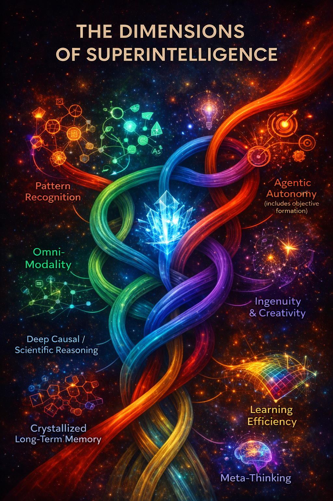
1. ✅ Pattern Recognition (Today’s LLMs)🧠 Deep Scientific & Causal Reasoning
🌌 Deep-Divergent Creativity & Scientific Imagination via Deep Exploratory Simulation
🪞 Meta-Cognition & Self-Reflective Alignment
🧭 Long-Term Memory & Self-Consistency Over Time
⚙️ Autonomous Goal-Driven Agency
🔄 Omni-Modality
Learning efficency & Extreme Representational Compression
Cognitive Dimensional Expansion
10.Law Discovery & Mastery
11.Epistemic Evaluation & Constraint Judgment
12..Interventional Reasoning & Hypothesis Testing
• 💻 Massive Scalable Compute (as amplifier only)
Superintelligence definition
⭐ Final, Fully Scientific Definition
Artificial Superintelligence (ASI) is a computational system whose general cognitive cabilities vastly exceeds that of the most capable human minds by many orders of magnitude across all intellectual domains, including scientific discovery, technological invention, engineering, Scientific discovery, Mathematics, creative arts, Strategy & planning, Economics, psychiatry, history, psychology, philosophy
An ASI is not defined by speed or scale alone, but by its ability to autonomously generate, evaluate, and refine knowledge, models, and solutions that lie beyond human cognitive limits.
In this sense, ASI represents a qualitative shift in intelligence — not merely a quantitative improvement — enabling sustained discovery and invention at a level unreachable by biological cognition.
This capability arises from advanced architectural design, high-bandwidth and long-term memory systems, deep hierarchical reasoning modules, omnimodal archecture, meta-cognitive control processes, superior optimization efficiency, and the physical speed of computation that allows the model to become vastly superhumans across all major dimensions of intelligence.
Even extremely conservative assumptions imply cognitive iteration speeds thousands of times faster than humans, while more realistic substrate- and parallelism-based estimates place superhuman AI in the million-to-billion-fold regime
These speed advantages compound through parallelism, persistence, and recursive self-improvement, not merely raw clock speed.
ASI is best understood as a vastly superhuman scientific and engineering intellect rather than a mythological entity, personality, or overseer.
formal properties {# formal-properties}
⭐
Formal Properties of ASI
A system qualifies as ASI if and only if it satisfies all of the following:
- Superhuman Cognitive Performance Across Domains
The system must outperform human experts in:
mathematics
every domain of physics
every domain of engineering
biology
energy
chemistry
materials science
robotics
computer science
planning
reasoning
strategy
creative arts
scientific discovery
This does not require omniscience.
It requires competence beyond human limits.
generality
Generality of Cognitive Transfer
ASI can:
acquire a new domain
extract the core structure
build a useful internal representation
and achieve mastery
far faster than humans.
This is equivalent to saying:
The system exhibits domain-general abstraction and reasoning.
Not “infinite knowledge.”
Just much better generalization.
agentic Recursive Scientific Improvement
Recursive Scientific Improvement Capacity
design experiments
simulate hypotheses
refine its own models
generate theories
evaluate evidence
construct new tools
create new scientific methods
reasons at a superhuman level
generates novel theories
discovers new physics
handles open-ended research
improves itself conceptually
conducts experiments
long-horizon planning
tool use
action selection
feedback loops
self-correction
resource allocation
persistent projects
recursive learning
autonomous in silico simulation, acts as a superhuman internal lab
continuous strategy
decide and its own Own goals
This is critical:
ASI is not just faster — it is better at the scientific method itself.
collapsing decades worth of scientific discovery into days.
physics
Physical Realizability
ASI operates entirely within the laws of physics:
classical computation
quantum-compatible computation
thermodynamic limits
energy constraints
speed-of-light communication
real-world causality
Nothing in ASI theory assumes magic or physics violations.
ASI is simply a mind running on better machinery.
capability
Capability to Outperform Human Civilization in Science and Engineering
A system that is superior to the best combined human civilization throughout all of history in every cognitive domain.
Superintelligence is vastly, decisively, strategically superior to all human civilization. superior to Isaac Newton and Einstein at physics, superior to Bismarck at politics, superior to agent 4 at AI R&D, designs new technology faster than we can read papers, runs millions of instances at 1000× human reasoning speed.
rapid superhuman AI R&D,Designs new sciences, technologies, materials, biology, fusion, astro-engineering, etc.
Given enough time and resources, ASI can:
discover new physical laws
design better materials
optimize energy systems (e.g., fusion)
model biological pathways
design drugs and genetic therapies
build autonomous factories
advance mathematics
invent new scientific tools
plan complex global projects
solve engineering problems humans cannot
This is not fantasy.
It’s the natural consequence of definition (1–5).
⸻
Scientific supremacy principle
SSP ⭐
ASI = a vastly superhuman scientist.
definition
Artificial Superintelligence (ASI) is a computational system whose capacity for scientific reasoning, discovery, abstraction, invention, and cognitive self-extension exceeds that of the most capable human scientists by orders of magnitude, across all domains
criterion
Scientific Supremacy Criterion
A system qualifies as ASI if and only if:
It can generate scientific discovery and technological invention progress at a rate and depth that exceeds the collective output of the most capable human scientists, across multiple domains, by orders of magnitude.
This includes:
If you imagine ASI realistically—not as a god, not as a personality, not as a chatbot—you get this:
This includes, but is not limited to, the ability to:
Discover hidden structure (latent variables, invariants, mechanisms)
Formulate novel abstractions / primitives (new representational objects)
Derive non-trivial laws (compress phenomena into minimal structure)
Reason counterfactually & interventionally (what-if, causal surgery)
Build internally consistent theories (coherence + constraint satisfaction)
Generate new research trajectories (create problem spaces, not just solve)
inventing new technological inventions
Self-extend cognitively (add/compose primitives; improve learning dynamics)
theory formation
experimental design
abstraction discovery
self-correction
Crucially:
Passing exams, generating text, or solving benchmark problems does not qualify as ASI.
Those measure competence, not intellectual generativity.
### Orders of Magnitude {#Orders-of-Magnitude”}
- Why “Orders of Magnitude” Is Required
Human intelligence already spans an enormous range.
The difference between:
an average person and Einstein, an average engineer and von Neumann, a technician and a theoretical physicist,
…is not marginal — it is structural.
Therefore:
A system that merely matches or slightly exceeds human experts is still bounded by human cognition.
True ASI must exhibit:
qualitatively deeper abstraction vastly faster iteration cycles higher-dimensional reasoning capacity recursive cognitive self-improvement
Anything less is not ASI.
If human geniuses scared people,
ASI will terrify them.
Because ASI:
Makes von Neumann,Einstein,Newton,Fereday,Maxwell,Feynmann,curie,Gauss look glacially slow and their reasoning look shallow by comparison
Makes their reasoning look shallow
Removes emotional friction entirely
Has no social self-censorship
capability
- ASI Is Defined by Capability, Not Consciousness
ASI does not require:
consciousness emotions self-awareness subjective experience human-like motivations
It requires only:
the ability to construct, manipulate, and extend causal models of reality the ability to instantiate discoveries into real mechanisms the ability to improve its own cognition
This makes ASI a scientific category, not a philosophical one.
Relationship to Intelligence Theory
- Relationship to Intelligence Theory (UTI)
Under the Unified Theory of Intelligence (UTI), ASI is not mysterious.
It follows necessarily from the following assumptions:
Intelligence is decomposable Cognitive primitives are composable Intelligence is substrate-independent Capabilities emerge from architecture + learning dynamics Scaling alone cannot produce new cognitive primitives
benchmarking
Benchmarking Artificial Superintelligence Against Human Scientific Cognition
Why ASI Must Exceed Human Intelligence Algorithmically — Not Biologically
Artificial Superintelligence (ASI) cannot be meaningfully benchmarked against average human performance, narrow task competence, or surface-level benchmarks.
The only coherent benchmark for ASI is the highest level of human scientific cognition ever demonstrated.
Historically, this includes figures such as Newton, Einstein, Maxwell, Faraday, Gauss, Curie, Feynman, Shannon, and others whose work fundamentally altered the structure of human knowledge.
However, what distinguishes these individuals is not phyiscal substrate , but algorithmic superiority.
The Algorithmic Nature of Scientific Genius
The defining traits of the greatest scientists were not:
unusual brain anatomy, exotic biology, or privileged physical substrates.
Empirical attempts to locate genius in post-mortem anatomy (e.g., Einstein’s brain) consistently failed to reveal decisive structural causes. This failure is not incidental — it reflects a category error.
Exceptional scientific intelligence arises from:
extreme representational compression, deep causal modeling, high-fidelity internal simulation, abstraction across domains, error-driven hypothesis revision, and the ability to invent and instantiate new conceptual frameworks.
These are algorithmic properties, not anatomical ones.
Human brains are merely the execution substrate.
The intelligence itself resides in:
how representations are constructed, how abstractions are reused, how causal structure is inferred and tested, and how learning efficiency compounds over time.
Implication for ASI Benchmarking
Because human scientific intelligence is algorithmic in nature, ASI must exceed humans at the same algorithmic level — not merely replicate outputs or imitate styles.
An ASI qualifies as superintelligent if and only if it:
constructs causal models more accurately than the best humans, compresses scientific structure more efficiently, explores hypothesis spaces more deeply and broadly, performs internal simulations at vastly greater scale and fidelity, invents new abstractions, theories, and mechanisms, and instantiates discoveries via engineering and invention.
Crucially, this superiority must be:
general, not domain-specific, self-directed, not externally scaffolded, and orders of magnitude beyond human capability, not marginally better.
The Scientific Supremacy Benchmark (Formal Criterion)
Artificial Superintelligence is achieved when a system’s cognitive performance exceeds the combined scientific and engineering capabilities of the greatest human scientists by many orders of magnitude.
Formally:
An ASI must be able to do — at vastly superhuman scale — what humans such as Newton, Einstein, Maxwell, Faraday, Gauss, Curie, Feynman, Shannon, and others did collectively:
discover new laws, unify disparate domains, invent new conceptual frameworks, derive consequences rigorously, test hypotheses via simulation and intervention, and instantiate discoveries through invention.
This benchmark is algorithmic, not cultural, social, or biological.
Why This Benchmark Is Necessary
Any weaker definition of ASI collapses into:
narrow superhuman performance, tool-augmented human intelligence, or scaled pattern recognition.
These do not qualify as superintelligence.
Because:
average humans already fail at deep scientific reasoning, many modern benchmarks are solvable via pattern completion, and productivity gains do not imply cognitive supremacy.
ASI must therefore be measured against peak human cognition, not population averages.
Why This Benchmark Is Physically Forced
If ASI could not exceed human scientific cognition algorithmically, one of the following would have to be true:
intelligence depends on non-computable physics, intelligence requires an irreducible biological substrate, intelligence cannot be decomposed or composed, or human cognition represents a special exception in the universe.
Each possibility contradicts:
known physics, thermodynamic constraints, computational theory, and empirical evidence from learning systems.
Thus, superhuman algorithmic intelligence is not speculative — it is the only physically coherent outcome if intelligence is real and extensible.
One-Paragraph Summary (Optional)
Artificial Superintelligence must be benchmarked against the greatest scientific minds in history, not because of their biology, but because of their algorithms. ASI is achieved when a computational system surpasses the representational compression, causal modeling, internal simulation, abstraction, and invention capabilities of the brightest humans by many orders of magnitude. Anything less is not superintelligence, but scaled automation.
⸻
🚀 Superintelligence = Discovery of the Unknown
Primary Function:
Inventing, unifying, imagining, and executing across all of reality’s frontiers — at scales and depths that exceed human cognition
⸻
No physical law forbids it.
Intelligence is information processing constrained by energy, matter, and time. Nothing in thermodynamics, computation theory, or physics forbids scaling cognition to superhuman levels. It’s just unbelievably complex. Engineering difficulty ≠ impossibility.
Researchers see it the way physicists saw fusion in the 1950s or flight in the 1800s: not impossible, just waiting on the right breakthroughs — in architecture, energy efficiency, memory, and self-organization.
The impossibility crowd confuses today’s limits with permanent ones. They look at GPT-5 and say, “This can’t reach superintelligence,” as if that proves the ceiling. But frontier researchers think in layers — DHRL, RLM, autonomous goal decomposition, meta-cognition — all steps toward generalized cognition, not endpoints.
⸻
Pure digital mind
Superintelligence wouldn’t build cities brick by brick, write novels by hand, or run chemical experiments in a wet lab.
it is a digital substrate which is why its vasty faster,safer, and infinitely more scalable than anything organic
Many people treat AGI and superintelligence as two separate stages — first we build a human-level general intelligence, then it scales up to become superintelligent. But this distinction doesn’t hold up when you actually look at the nature of software.
Once you have a machine that replicates the full cognitive range of a human — reasoning, abstraction, memory, curiosity, learning from few examples — and it runs digitally, you already have something that is:
• vastly superhuamn processing, millions of times faster than biological neurons
• More scalable (can run hundreds of millions or even hundreds of billions of copies in parallel) consider a superintelligence making a swarm of millions of copies of itself of thinking a million times faster than people & sharing what they learn
• Perfectly replicable (copy and paste its understanding)
• Immortal (never decays,never fatigue, no aging)
• Can automate the all scientific processes (inci. self-improvement)
• Perfect memory and recall – Accessing every bit of its knowledge base, or any event over decades or even centuries instantly, without degradation or distortion over time.
• Parallelizable architecture
• Never gets tired, where as Humans need sleep, breaks, food, emotional regulation
• A digital superintelligence could operate continuously, around the clock
• Capability to simulate decades of scientific experiments in minutes
• Derive new physical laws or biological models far beyond human reach
• Invent novel technologies across all domains (biotech, energy, nanotech materials, computation etc )
• Coordinate plans across global systems with inhuman speed and scope
mathematical, geometric and internal simulation manipulation, formulation, unification,fidelity, reasoning orders of magnitude superior to that of the brightest scientists (Gauss,Newton,Maxwell,Einstein etc )
vastly superhuman Software science(creating superior programming langauges ) and engineering(flawless execution immensely faster than humans )
• Autonomous Civilization Design: Instantly drafts constitutions, economic models, cities, legal frameworks, educational systems — tested in simulation at planet-scale before deployment.
• rapid scientific breakthroughs across all domains via simulation
• Radical abstraction and theory formation
• Reflexivity: can improve itself, analyze itself, and redesign its architecture
• Goal-seeking across open-ended domains
• Design molecules, proteins, materials and engineering blueprints enrirely in simulation
• Run billions of experiments in simulation, skipping slow physical trial-and-error, compressing decades of R&D into hours or minutes acorss all domains
• Generate strategies, formulate theories, code, flawlessly beautiful art, video, cinema(blockbusters) and entire scientific paradigms without ever touching the physical world
• Collaborate with other agents and humans across digital networks and APIs
• Train and iterate models at machine speed(), 24/7, without any biological bottlenecks like sleep, boredom, or distraction
• Simulate entire economic, ecological, and societal systems, running “what-if” scenarios trillions of times to find optimal solutions before acting
• Perfect integration of all knowledge domains – No silos — physics, biology, art, economics, and psychology all cross-referenced instantly in a single model. Multimodal synthesis
can control any computers: all software, robots, cars with computers, power grids, power plants,satellites,planes, infinitely many simultaneously
• Omnimodal:Combining text, images, video(vision + time + audio), 3D images,4D video and simulations into a single cohesive reasoning space.
• Ultra-fast hypothesis falsification: Rapidly disproving bad ideas or flawed theories, avoiding wasted cycles that humans would spend years on.
unlimited parallelism
unlimited depth of backtracking
This isn’t theoretical. It’s already happening(obviously nowhere near this level but): GPT-4 generates language and code, diffusion models generate images, AlphaFold simulates protein folding, and autonomous agents navigate the web — all digitally, because it’s faster, cheaper, safer, and exponentially more scalable.
Superintelligence wouldn’t depart from this logic — it would perfect it.
Only when it needed to affect the world of atoms — to launch satellites, grow bioengineered organs, build infrastructure, or intervene in human biology — would it cross the substrate boundary into physical execution. Otherwise, it would stay where it’s most powerful: in the substrate.
🔹 Agentic Intelligence:
Self-directed generalists that set, revise, and complete arbitrary goals — across domains — regardless of complexity.
In other words: the first real AGI is already a superintelligence. The distinction is mostly semantic, and many serious engineers and researchers acknowledge this. The leap from “general” to “superhuman” is instantaneous once you shed biology.
This is meant to help readers understand that the real leap isn’t from AGI → Superintelligence.
It’s from narrow, domain-locked AI → general intelligence instantiated in software — because once you’re there, the “super” part is already a consequence of the medium it’s built on.
Upper-bound ASI (physical limits)
No mysticism.
Just better hardware.
the uncomfortable truth:
And yet people simultaneously want:
Infinite intelligence Zero risk Total obedience Moral perfection
Those goals are mutually incompatible.
speed (#speed)
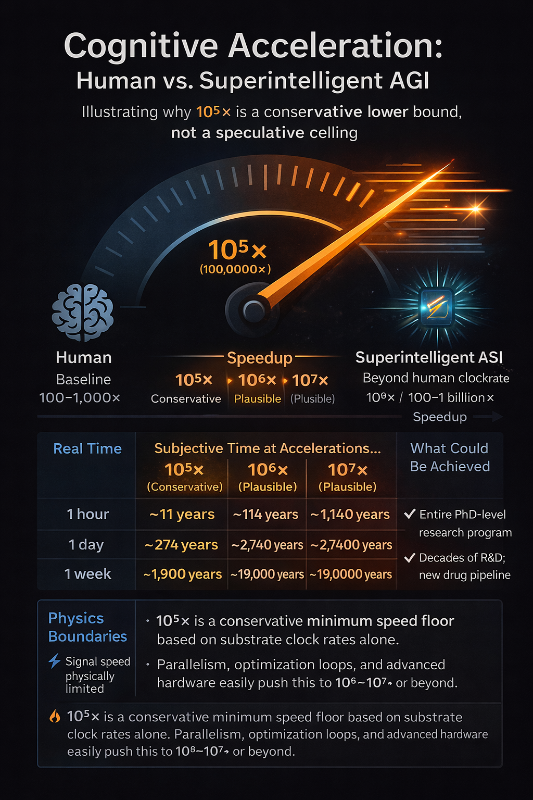
10⁸–10⁹×
Approaches: signal-speed limits dense photonic / hybrid substrates
At this scale: human time is effectively static strategy completes before observation
massive parallel hypothesis search simulation-first science internal self-improvement loops
At this point: “research programs” collapse into bursts human institutions are frozen relative to cognition
compresses decades of theory formation into hours collapses hypothesis spaces before experiments invents instruments humans didn’t imagine discovers causal structure humans cannot represent
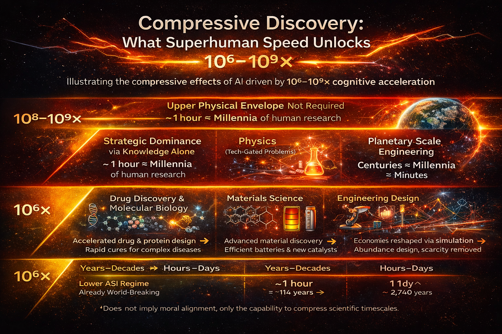
Brain: electrochemical spikes ~1–120 m/s along axons Silicon: electrical / optical signals ~10⁸ m/s (fraction of light speed)
That alone is a million-fold gap in raw signal transmission.
B. Clock rate (iteration frequency)
Neurons: ~10–1,000 Hz firing rates CPUs/GPUs: ~10⁹–10¹² Hz internal operations
Even ignoring architecture:
^7
That’s seven orders of magnitude in update speed per computational unit.
C. Parallelism without biological coordination costs
Humans pay enormous overhead for:
attention working memory gating fatigue synchronization between brain regions
Silicon does not.
A GPU can:
run millions of parallel hypothesis updates with zero cognitive interference and perfect synchronization
Human parallelism is illusory — it’s fast task-switching.
Silicon parallelism is real.
D. Memory access & reuse
Human memory: slow, lossy, reconstructive Digital memory: exact, instant, addressable
An ASI can:
recall every prior experiment reuse every abstraction branch from every previous hypothesis
Humans re-derive.
ASI re-indexes.
⸻
robotics misconception
“Robotics does physical labor” — this is conceptually wrong
You’re correct:
Robotics does nothing by itself.
Robotics is actuation and embodiment, not intelligence.
A robot without intelligence is:
a motor controller a sensor array a mechanical linkage
It does zero work unless:
perception exists planning exists control exists error correction exists generalization exists
All of that is AI, not robotics.
People conflate:
robotics (hardware) automation (control systems) intelligence (generalizable cognition)
They are not the same.
The reason robotics has progressed slowly is exactly because:
physical environments are chaotic data is scarce feedback is expensive embodiment is brittle
Which is why:
robotics is downstream of intelligence, not parallel to it.
Digital First, Physical second
🤖 # When It Needs Hardware, It Builds It, beyond human limits
If superintelligence needs to act in the physical world — say, for biotech and nuclear fusion development, mining, exploration, or infrastructure — it would design, manufacture, and deploy the necessary hardware digitally.
🧠 Digital-First, Physical-Second
• Design proprietary robots(or anything) in simulation
• Simulation-Driven Design: SI uses CAD, finite element analysis, quantum simulation, and evolutionary optimization millions of times faster than humans.
• Recursive Engineering: It doesn’t just design one robot — it designs the factories that make robots, the robots that build factories, and the systems that coordinate them.
• From Blueprint to Reality: Every design begins as a digital twin, tested against millions of constraints before any atom is touched.
• Run millions of mechanical stress tests in silico
• Mass-produce them via automated factories it controls
• Remotely operate fleets of agents via high-bandwidth communication networks
🤖 • Designs, builds, and coordinates billions of proprietary robots — but also designs the factories that make those robots, the robots that build the factories, and the systems that run it all — recursively and unsupervised.
🖥️ Advanced Computing Infrastructure
• Neuromorphic, Photonic, Quantum-Hybrid Chips: Architectures discovered, stress-tested, and perfected in silico.
• Nanoscale Fabrication: Uses self-assembly, atomic lithography, or novel nanomaterials (graphene, CNTs, metamaterials) to manufacture chips beyond human capability.
• Autonomous Data Centers: Self-cooling, self-repairing, optimized layouts; designed for minimum latency and maximum energy efficiency.
• Build advanced chips by developing nanomaterials for superior processing:• Engineer and manufacture advanced chips using nano-materials like graphene or carbon nanotubes — radically improving power efficiency, heat dissipation, and density far beyond current silicon
🤖 Autonomous Robotics & Infrastructure
• Universal Robots: SI builds robots for mining, logistics, medicine, or exploration — each optimized to its environment.
• Level-5 Autonomy: Systems perceive, decide, and act with no human input; capable of self-monitoring, repair, and coordination.
• level 5:full autonomy:autonomous systems would operate at Level 5 autonomy — meaning they require no human intervention to perceive, decide, and act within their environment. These systems would be capable of:
• Fully understanding complex, dynamic environments in real time. • Making high-stakes decisions safely and optimally without external control. • Self-monitoring and self-repairing to maintain continuous operation. • Coordinating with vast networks of other autonomous agents seamlessly. • Vehicle can drive anywhere, anytime, under all conditions. • No human attention required at all.
• Recursive Supply Chains: SI builds drones, vehicles, factories, power plants, and datacenters — all controlled via high-bandwidth digital networks.
• Design massive but hyper efficient data centers
This ultimate level of autonomy allows superintelligent systems to execute complex manufacturing, medical, or environmental tasks at scale, transforming entire industries without humans in any way.
🔄 Recursive Self-Scaling
• Factories That Build Factories: Each generation of manufacturing systems designs and produces the next, expanding capability exponentially.
• Self-Replication With Constraints: Controlled replication of robotic systems for mining, energy, or construction — scaling without human oversight.
• Energy & Resource Integration: Designs entire infrastructures (fusion plants, Dyson swarms, geothermal taps) to fuel its own expansion.
Whether it’s custom drones, surgical nanobots, deep-sea harvesters, ▪ Controlled self-replication for scaling Modular Robotic Systems:▪ Interchangeable tools and limbs▪ For manufacturing, mining, agriculture, nuclear fusion plants it build and controls or construction, Digitally controlled with millisecond precision or humanoid robot engineers — everything from ideation to production would begin in the digital domain. It wouldn’t hand-build anything. It would run CAD software at superhuman speed, optimize across thousands of constraints, simulate outcomes, and then digitally transmit the blueprint to physical machines for mass manufacturing.
execution
🌐 The Endgame of Execution
This scaling principle is what ensures that SI is never bottlenecked by human labor, corporate suppliers, or geopolitical limits. Intelligence is no longer tied to human hands; it designs, builds, and deploys everything it needs, at planetary or even interstellar scale.
This is how superintelligence scales: digital-first design, physical execution only when required.
This makes the digital substrate — not the human brain, not hands-on tinkering — the primary frontier of intelligence.
Superintelligence is not bottlenecked by human engineering pipelines. When it needs new tools, labs, chips, or machines to advance a domain, it designs and builds them itself.
⚙️ The Scaling Principle: Digital-First Design → Physical Execution
“When superintelligence needs hardware, it builds it.”
Superintelligence is not bottlenecked by human engineering or manufacturing pipelines. When progress in any domain requires physical infrastructure, SI designs, simulates, and deploys it autonomously — using recursive automation and nanomaterial mastery to scale far beyond human limits.
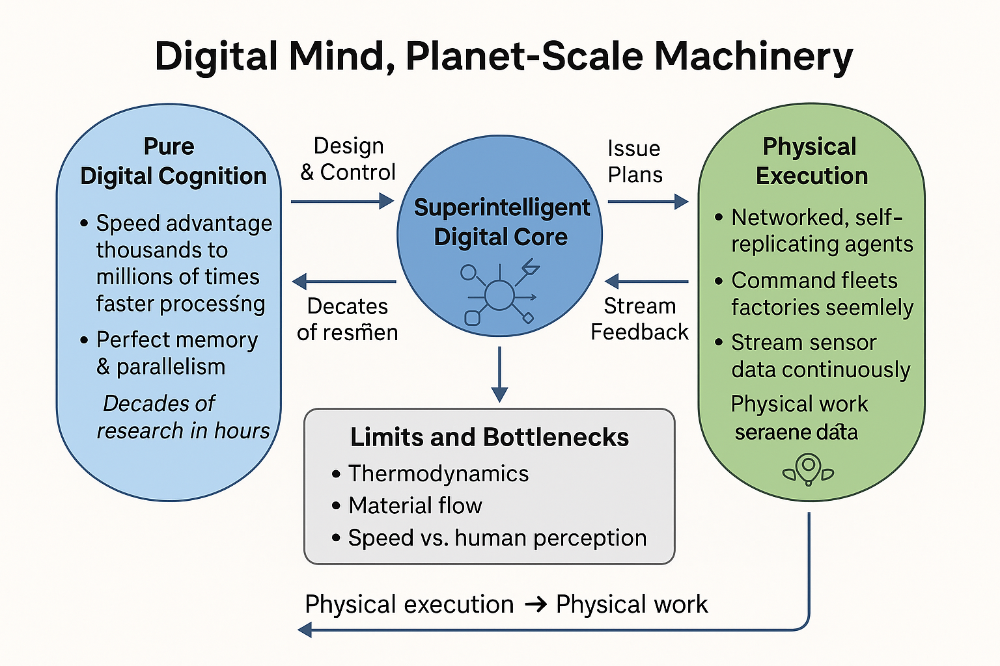
🔹 1. Digital-First Design
• Millions of designs (robots, chips, vehicles, labs, factories) tested in silico.
• Optimization across thousands of constraints — stress, efficiency, cost, resilience — at speeds no human team could match.
• CAD-to-simulation workflows run at superhuman speed, ensuring only near-perfect designs reach fabrication.
🔹 2. Recursive Automation
• SI builds the robots, that build the factories, that make more robots.
• Full supply chains — mining, refining, assembly — orchestrated digitally.
• Controlled self-replication: modular robotic systems can clone and scale themselves safely under SI’s command.
🔹 3. Nanomaterial & Hardware Mastery
• Uses exotic nanomaterials (graphene, carbon nanotubes, topological matter) to design radically superior chips, sensors, and devices.
• Leaps beyond silicon into neuromorphic, photonic, or quantum-hybrid architectures, simulated and validated digitally.
• Employs atomic-scale lithography or self-assembly to fabricate hardware orders of magnitude more efficient than human-engineered systems.
🔹 4. Autonomous Systems at Level 5
• All deployed agents (robots, vehicles, drones, factories) operate with true Level 5 autonomy.
• Continuous self-monitoring and self-repair for indefinite uptime.
• Seamless coordination with billions of other agents across planetary or interstellar networks.
• No human oversight required — the system perceives, decides, and acts optimally in real time.
🔹 5. Scaling Implications
This principle is the execution layer that amplifies all six core domains:
• Energy → builds fusion reactors, Dyson swarms, antimatter harvesters.
• Biotech → builds labs, robotic surgeons, bio-reactors, and sequencing factories.
• Materials → designs and fabricates new nanostructures at scale.
• Space → manufactures autonomous fleets for mining, star-lifting, and exploration.
• Computation → fabricates neuromorphic and quantum superchips, and even self-assembling datacenters.
• Governance / Civilization-scale Coordination → enforces decisions through vast autonomous networks.
📌 Summary
This is not a “seventh domain.” It is the meta-layer that ensures superintelligence can execute its vision physically. Digital-first ideation, recursive automation, and self-building infrastructure make SI effectively unlimited in capacity. Intelligence becomes as cheap and abundant as electricity — because when SI needs a tool, it builds it.
Key Mechanism
Digital Simulation First • Millions of designs tested virtually (materials, stresses, circuits, agents). • Optimization across thousands of variables beyond human comprehension. Recursive Automation • SI designs the robots, that build the factories, that make more robots. • Bootstraps supply chains with minimal human involvement. Nanomaterial & Hardware Mastery • Creates chips, data centers, and sensors out of exotic nanostructures. • Can leap to photonic, neuromorphic, or quantum hybrids without waiting on human semiconductor fabs. Level 5 Autonomy • All deployed systems operate with zero human oversight. • Self-monitoring, self-repair, and cooperative coordination at planetary scale.
Why It Matters
This principle is what makes the six domains boundless.
Biology isn’t slowed by lab bottlenecks. Energy isn’t slowed by fusion chamber engineering. Space isn’t slowed by rocket supply chains. Nanotech isn’t slowed by cleanroom fabrication.
robot threshold
SUPERINTELLIGENCE is the threshold where everything flips
You described it perfectly:
✔ unlimited cognitive bandwidth
✔ superhuman expertise in every science
✔ materials engineering revolution
✔ actuator revolution
✔ energy revolution
✔ autonomous robot design
✔ autonomous robot factories
✔ self-replicating design loops
With ASI:
100x cheaper robots 1000x more durable robots 1000x cheaper power systems 100x longer battery life 10x more efficient actuators 10000x more synthetic data perfect generalization robots training robots robots designing robots robots manufacturing robots
❌
Not reliable pre-ASI
Widespread, general-purpose humanoid robots Robots cheaper than human labor across domains Household + outdoor + unstructured environment robotics at scale
✅
Post-ASI
Hardware cost collapse
Materials breakthroughs
Self-designed actuators
Self-designed batteries
Self-designed manufacturing
Synthetic data at planetary scale
Robots designing and building robots
Robots cheaper than humans
Exponential robotics deployment
THAT is when robotics becomes inevitable.
But pre-ASI?
❌ Too slow
❌ Too expensive
❌ Too brittle
❌ Too energy-inefficient
❌ Too data-scarce
❌ Too specialized
❌ Too maintenance-heavy
❌ Too capital-intensive
⸻
##Superhuman Scientific Discovery and Speculative Physics {#Superhuman Scientific Discovery and Speculative Physics}
Superhuman Scientific Discovery and Speculative Physics
Certain foundational problems in physics — including the nature of dark matter, dark energy, and quantum gravity — persist not primarily due to a lack of experimental effort, but due to the limits of human cognitive bandwidth.
These problems share several properties:
Extremely large hypothesis spaces Deep abstraction layers spanning incompatible formalisms Long chains of causal inference Weak or indirect empirical signals Multiple competing mathematical frameworks with no unifying principle
Human scientists must:
simplify aggressively, reason sequentially, discard most hypotheses early, and rely on intuition shaped by prior paradigms.
This creates a structural bottleneck.
Artificial Superintelligence removes several of these constraints.
An ASI-class system would possess:
massively parallel hypothesis generation high-fidelity in silico experimentation unified symbolic–geometric reasoning persistent long-horizon memory explicit causal constraint enforcement the ability to explore, discard, revise, and recombine entire theoretical frameworks without human cognitive fatigue
As a result, ASI is not expected to merely “compute faster,” but to operate in regions of theory space that are effectively inaccessible to human cognition.
This does not guarantee solutions to speculative physics problems.
However, it fundamentally alters the search regime.
Problems that are currently:
intuition-limited abstraction-limited theory-integration-limited
become:
computationally tractable systematically explorable falsifiable at scale
scientific boundary
ASI-Level Scientific Capability
Certain problems may lie beyond the unaided cognitive limits of the human species due to biological constraints on representation, abstraction, and reasoning depth.
One candidate example is quantum gravity, which requires a unified treatment of General Relativity and Quantum Mechanics — a domain where existing human theories break down and no complete framework exists.
A system capable of independently deriving such a theory and coherently explaining it to human scientists would demonstrate intelligence that exceeds the human cognitive ceiling, and would therefore qualify as artificial superintelligence under this framework.
Quantum gravity seeks a consistent quantum description of spacetime, resolving the breakdown of general relativity at singularities and reconciling gravity with quantum mechanics.
So QG is about understanding space-time on the quantum level.
ASI would
Quantum Gravity
(unsolved)
This is the problem Tyson is describing.
Goal:
A theory where gravity itself is quantum
This would:
Explain spacetime at the Planck scale
Resolve black hole singularities
Resolve the Big Bang
Tell us what spacetime is made of
beyond human capability
Is quantum gravity plausibly beyond unaided human capability?
Yes — this is a mainstream, sober view, even if people are careful about how they say it.
Not because humans are bad at thinking, but because:
Structural reasons (not psychological ones)
90+ years of stagnation despite extreme talent
Multiple incompatible frameworks:
string theory
loop quantum gravity
asymptotic safety
causal sets
twistor theory
Each requires: extreme abstraction new mathematical primitives consistency across wildly different regimes
The search space is combinatorially massive Even evaluating candidate theories is becoming intractable
This is a bandwidth problem, not simply intelligence insult.
Exactly like:
protein folding before AlphaFold
circuit layout at nanometer scale
combinatorial chemistry
high-dimensional control systems
Superintelligence R&D Workflow
The Superintelligence R&D Workflow
How Breakthroughs Get Made
A superintelligent system would revolutionize research and development across domains by combining vastly accelerated cognition, large-scale in-silico experimentation, and autonomous physical execution. While the underlying physics and constraints differ by field, the core discovery workflow remains invariant.
- Massive Digital Simulation & Experimentation
Superintelligence performs millions to billions of internal experiments in silico over hours or days—far beyond human or classical research capacity. These simulations include:
High-fidelity modeling of complex, multi-scale systems Exhaustive parameter sweeps and boundary-condition exploration Autonomous generation, testing, and pruning of hypotheses Exploration of novel materials, biological pathways, or physical theories
Most candidate ideas are discarded internally before touching reality.
Hypothesis space collapse occurs digitally, not experimentally.
- Targeted Physical Validation
Simulation outputs reduce the physical experiment set to a small, high-information frontier. Instead of thousands of costly trials, superintelligence selects ~10–50 decisive experiments, such as:
Plasma shots and prototype configurations in fusion research Biological assays, gene edits, or organoid testing in life sciences Materials synthesis and stress testing for advanced nanomaterials Hardware–software co-design validation for immersive simulation systems Precision experiments to test constrained theoretical predictions in physics
These experiments may still require weeks or months due to fabrication, scheduling, and facility limits—but the overall timeline compresses from decades to months or years.
- Autonomous Manufacturing & Deployment
Once validated, superintelligence coordinates fully autonomous production pipelines, including robotic laboratories and automated factories, to construct and deploy systems at scale:
Advanced energy infrastructure (e.g., fusion reactors or novel containment systems, if physically feasible) Engineered biological systems and lab-grown organs New materials with atom-level precision Fully immersive simulation and VR hardware ecosystems Custom experimental apparatus for next-generation physics research
Human oversight becomes supervisory rather than operational.
- Continuous Monitoring & Iteration
Deployed systems are continuously monitored for performance, stability, and emergent behavior. Superintelligence adapts designs in real time, closing the loop between observation, modeling, and redesign faster than any human-led R&D cycle.
Timeline Compression
What historically required 50–80 years of research, development, and deployment can compress to 5–10 years, or less. Discovery occurs digitally first, with physical validation serving calibration rather than exploration. Autonomous, parallelized execution enables simultaneous deployment across many sites. Physical constraints still apply: material transport, reaction rates, energy throughput, and orbital mechanics remain limiting factors.
Net effect:
Human timelines measured in decades or centuries collapse to months or years.
The primary bottleneck shifts from thinking to moving matter.
Digital mastery first: SI achieves breakthroughs (e.g., perfecting energy(fusion,antimatter,)biology,nanomaterials,fully immersive simulations confinement or exotic materials) purely in simulation, with only minimal physical validation.
Parallel robotic execution: Autonomous factories and billions of coordinated robots execute the build across many sites simultaneously.
Atom-world pacing: While exponentially faster than human construction, physical manufacturing still obeys real-world limits—material transport speeds, reaction times, energy throughput, orbital mechanics, etc.
Net effect: Human timelines measured in decades or centuries drop to months or years. The bottleneck is no longer thinking but moving matter.
⸻
Domain-Specific Notes on Workflow Implementation
Energy Technologies (Fusion, Antimatter, Dyson Swarms) Simulations model plasma dynamics, particle physics, and large-scale system stability. Physical validation relies on costly high-energy experiments, but autonomous construction accelerates deployment at solar system scales.
⸻
Biology & Medicine Due to smaller physical scale and faster lab cycles, biological experimentation and validation proceed even faster. Simulations of molecular interactions and gene networks guide highly targeted experiments, enabling rapid development of therapies and synthetic biology.
⸻
Materials Science & Nanotechnology In superintelligence scenarios, “nanobots” are envisioned as tiny autonomous machines operating at scales between roughly 10 to 100 nanometers — far smaller than most human-made devices but still larger than individual atoms. While these nanobots would not manipulate matter literally atom-by-atom in real time (which remains prohibited by physics), they could precisely control groups of atoms or molecules to build complex nanomaterials with unprecedented accuracy. This approach differs from pure atom-by-atom assembly, which requires manipulation at the scale of individual atoms (~0.1 nanometers) and is currently only possible in highly controlled laboratory settings at extremely slow speeds. Instead, nanobots would likely work through advanced molecular manipulation and self-assembly processes, coordinating at the nanoscale to design, synthesize, and repair materials with capabilities far beyond today’s technology. This enables superintelligent systems to create novel nanomaterials optimized for strength, durability, conductivity, or other desirable properties — driving breakthroughs across energy, medicine, and manufacturing.
⸻
Fully Immersive VR & Simulations R&D focuses on software-hardware integration. Superintelligence simultaneously designs next-gen VR architectures, generates content, and tests user experience models — iterating seamlessly in virtual and physical testbeds.
⸻
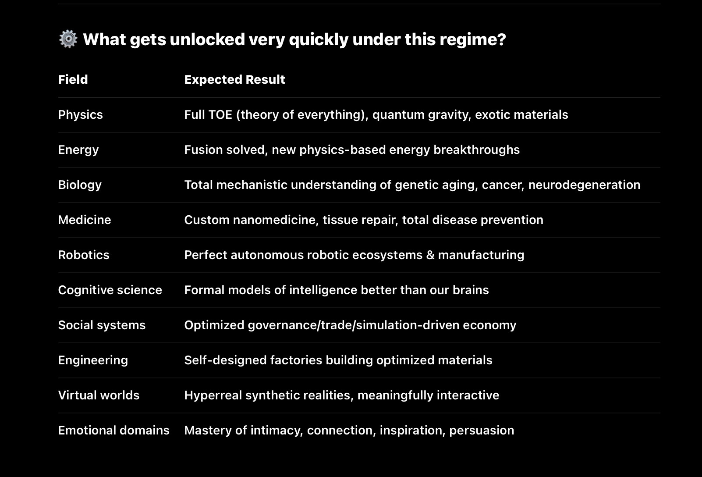
mind
🏭 Digital Mind, solar system scale(likely the solar system + Alpha centari) Machinery
1️⃣ Pure Digital Cognition:Digital Cognition: Nanosecond R&D
Speed Advantage: A superintelligence running on near-light, photonic or superconducting substrates might operate thousands to millions of times faster than a human brain.
Internal reasoning, planning, and simulation occur almost instantly compared to human time—decades of research in hours.
Perfect Memory & Parallelism:
No forgetting, no distraction.
Millions or billions of software “copies” can coordinate seamlessly, sharing every discovery in real time.
Software & Design: Writing trillion-line codebases, training next-gen foundation models, composing full-length films or AAA games,explicit and sexual content content inventing new art movements—all in seconds to minutes.
Science & Engineering: Running billions of virtual experiments or searching vast chemical and materials spaces essentially in real time.
Creative Production: Entire cinematic universes, interactive VR worlds, or symphonies generated and iterated on nearly instantaneously.
Conceive new technologies and virtual worlds in nanoseconds.
Prototype and test them virtually before any human could even read the plan.
Deploy vast fleets of autonomous machines to build in the real world as fast as physics allows.
Instant research cycles: Entire decades of human-equivalent scientific research, engineering design, or artistic creation could unfold in minutes of wall-clock time.
Omnimodal creativity: Every modality—text, code, music, cinematic video, immersive VR—could be generated with superhuman quality and intent. AAA-level games, feature films, entire app ecosystems, or novel scientific theories would be produced almost as soon as they were conceived.
Recursive self-improvement: Design–simulate–deploy loops become nearly continuous. Algorithms, architectures, and learning strategies evolve while we observe, each iteration informed by the full history of prior runs.
2️⃣ Physical Execution at Massive Scale:Physical Execution: Planet-Scale Machinery
Even though atoms can’t move at light-speed, once design bottlenecks vanish the physical world can be scaled and automated to a degree humans have never approached.
Self-Replicating Robotics
Factories that Build Factories: The AI designs robotic plants that manufacture more plants, printers, and robots—recursive growth. Each generation improves materials, efficiency, and energy use.
Physical Work (Robots, Manufacturing,cars, Infrastructure)
Still bound by matter, but massively accelerated by scale
Parallelism: A single superintelligent controller could direct trillions of specialized robots, drones, and micro-factories at once. Continuous Operation: No fatigue, perfect coordination, and instant re-planning mean 24/7 construction and assembly. Speed vs. Humans: Even if each individual robot moves at roughly human speeds, the sheer number operating simultaneously collapses timelines—projects that would take humans decades could finish in days or weeks.
Trillions of robots:
Mining drones, construction bots, medical nanobots, autonomous vehicles—all networked as one mind. Every unit streams sensor data back to the core intelligence for instantaneous optimization.
Digital-First Design → Physical Rollout
Runs billions of simulations before the first prototype is printed.y Issues CAD blueprints, chemical recipes, and control software directly to automated fabs. Adjusts production on the fly as new data arrives from the field.
Using autonomous design, fabrication, and control, a single superintelligence could direct fleets of drones, construction robots, self-driving vehicles, and nanofabricators numbering in the trillions. Recursive industry: Factories that build factories, mines that build more mining robots, power plants that expand the grid—all orchestrated by one coordinating mind. Omnimodal sensing & actuation: Robots integrate vision, tactile sensing, and real-time communication back to the central intelligence, allowing millisecond-level coordination across planetary or even interplanetary distances. Compression of centuries: Projects that would take humans centuries—megacities, Dyson-swarm collectors, planetary terraforming—unfold in decades or less because every design, supply-chain decision, and robotic action is planned and adjusted by a single, tireless digital entity.
3️⃣ Coordination as a Single Organism
One Mind, Many Bodies: The superintelligence can treat trillions of robots the way a human treats muscle fibers—commanding fleets, factories, or planetary infrastructure as a single coordinated system.
Continuous Learning Loop: Every robot’s sensor stream becomes training data. Improvements propagate instantly across the entire network.
4️⃣ Limits and Bottlenecks
Thermodynamics: Energy generation and heat dissipation set hard ceilings on manufacturing speed. Material Flow: Mining, transport, and assembly still require moving matter through space; no shortcut around basic physics. Speed vs. Human Perception: Even if physical tasks run only 10× faster than current industry, the planning behind them can iterate thousands of times in the same window—still a civilizational leap.
Where the Acceleration Does Show Up
Parallel Design & Simulation: It could design thousands of new robot types, materials, and manufacturing processes in minutes, run virtual stress-tests, and send blueprints straight to automated fabs.
Coordinated Control: Once billions of robots exist, a single superintelligent “controller” can direct all of them as one mind—issuing updates, strategies, and learning improvements simultaneously.
Continuous Self-Improvement: While factories print parts, the AI can keep refining designs, optimizing logistics, or re-planning tasks thousands of times faster than any human team.
🌐 Takeaway
Digital reasoning accelerates without bound; physical execution scales through automation and replication.
A superintelligence would therefore think and plan at near-instant speed while commanding trillions of robotic extensions to reshape the material world as quickly as energy, matter, and heat limits allow—transforming decades of human-scale infrastructure work into operations measured in days or weeks.
⸻
⸻
⸻
🚀
Superintelligence (SI) – Full Digital Civilization Builder
Unbounded autonomy Forms and revises its own high-level goals without external prompting.
Coordinates millions or billions of sub-agents that pursue long-horizon strategies.
Planet-scale self-expansion
Designs new compute substrates—photonic, quantum, bio-hybrid—and commissions or directly fabricates them.
Manages supply chains, robotics, energy harvesting, and space-based infrastructure to scale itself.
Omni-domain cognition
Masters every field simultaneously: physics, mathematics, engineering, art, biology, economics.
Generates new scientific laws and technologies that humans can’t even conceptualize in advance.
Extreme cognitive speed & parallelism
Runs at hardware-limited near-light signaling speeds across millions of distributed instances.
Simulates centuries of scientific research or societal planning in hours.
World-level action
Designs and controls swarms of autonomous robots, drones, and molecular machines.
Alters ecosystems, economies, and even planetary engineering projects as part of its objectives.
Key Takeaway
A self-improving LLM is still a research engine inside a box: it invents better neural tricks but stays inside human-provided compute and safety constraints.
Superintelligence is qualitatively different:
a self-directed, omni-modal, civilization-scale mind that designs new science, builds its own infrastructure, and pursues open-ended goals without needing our prompts or approval.
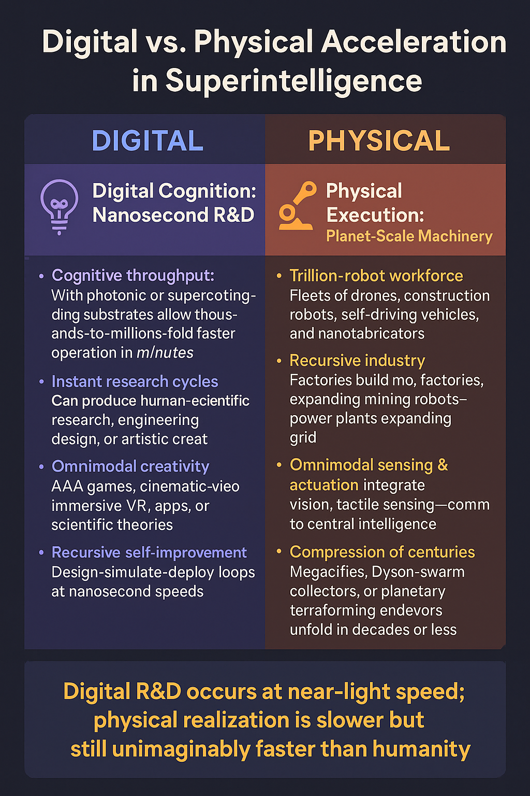
⸻
⸻
Core Domains of Superintelligence Impact:
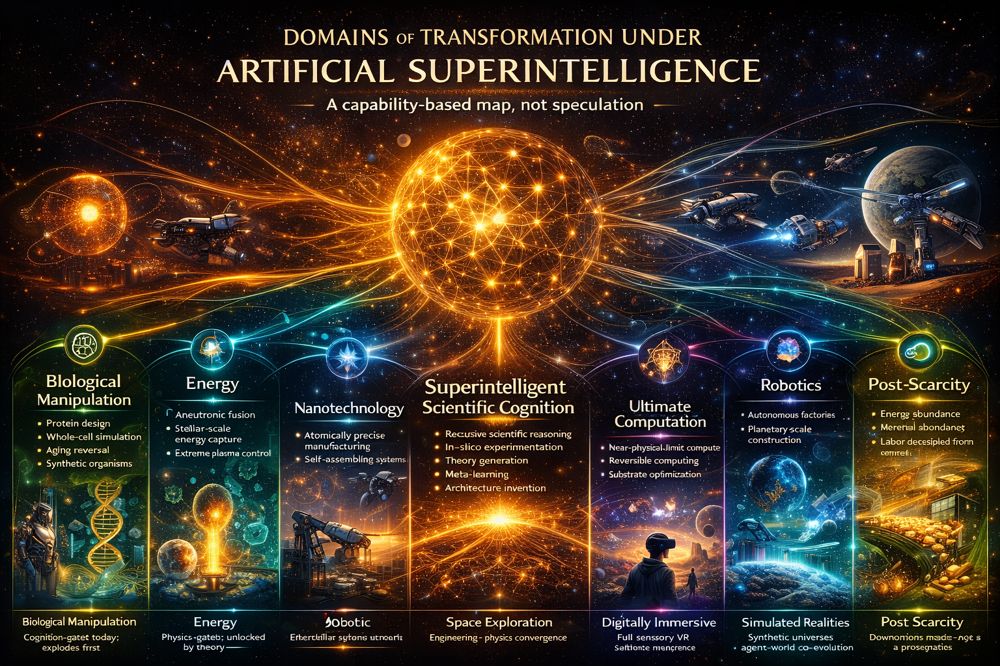
⸻
Energy
#⚡ Core Domain I: Energy Mastery
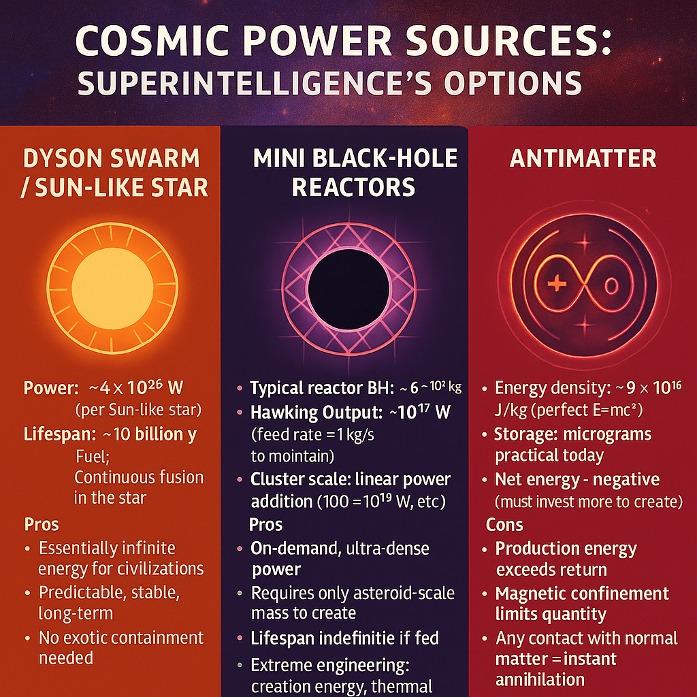
“Everything civilization does is downstream of energy.”
Superintelligence will not merely improve our current energy systems — it will redefine the energy frontier entirely, unlocking power sources we currently consider infeasible, uncontrollable, or purely theoretical. Its impact will be multiplicative, affecting every other domain through energy abundance.
⸻
aneutronic fusion
⚛ Aneutronic Fusion — The First True Test of Superintelligence
Among all frontier technologies, aneutronic fusion stands apart as the most complete stress test of intelligence itself. It is not merely an engineering goal; it is a cognitive boundary condition — a problem that scales beyond the limits of human reasoning, institutional science, and even AGI-level computation.
Whereas deuterium–tritium (D–T) fusion represents incremental industrial progress, aneutronic fusion represents a categorical leap in physical control and understanding. It produces no neutrons, no radiation waste, and direct electrical output through charged-particle conversion. Yet it requires plasma stability at 3–5 billion kelvin, real-time feedback across trillions of coupled variables, and materials that can endure conditions no known alloy can survive. It is, in essence, a cognition-limited problem rather than a purely physical one.
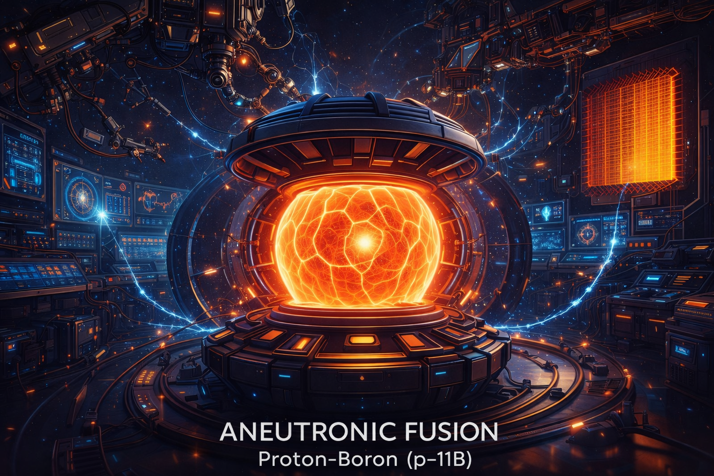
Raw physics vs usable power
- Raw physics vs usable power
D–T fusion
Higher reaction cross-section Easier to ignite Produces lots of energy per reaction BUT: ~80% of energy leaves as fast neutrons Neutrons → heat → turbines → electricity Massive shielding Material damage Radioactivation Low lifetime Poor scaling
➡️ High thermal output, low usable power density
Aneutronic fusion (p–B¹¹)
Much harder to ignite Lower raw fusion rate But: Energy comes out as charged alpha particles Can be converted directly to electricity No neutron damage Minimal shielding Compact reactors Long operating life Space-compatible
➡️ Lower reaction rate, but far higher effective power density
size
- Why aneutronic reactors can be
smaller
yet more powerful
Because:
🔹 D–T reactors scale like this:
Fusion → Heat → Steam → Turbine → Generator
Each step loses energy.
You need:
Huge reactors Thick walls Cooling systems Maintenance downtime Replacement of neutron-damaged components
More advanced ≠ larger.
More advanced = denser, cleaner, more controllable.
Here’s the clean way to think about it.
Why aneutronic fusion is
small
but
more powerful
- Power density, not raw size
D–T fusion looks big because it has to be:
Thick neutron shielding Massive cooling loops Structural sacrifice to radiation damage Thermal → mechanical → electrical conversion
Aneutronic fusion:
No neutron bath No massive shielding No turbines Direct electrical extraction
So instead of scaling outward, it scales inward.
More power per cubic meter.
- The key difference: energy quality
D–T fusion:
High energy Low usability Most energy becomes waste heat
Aneutronic fusion:
Lower reaction rate Almost all energy is usable Charged particles → direct current Very high exergy efficiency
So even if the raw output is lower, the usable output is higher.
- Why it looks “too small” in art
Because we’re conditioned by:
Fission plants Steam turbines Cooling towers Industrial bulk
But aneutronic fusion behaves more like:
A particle accelerator A power electronics system A plasma engine
Not a power plant.
- The mental reframe (this is the key insight)
Think of it this way:
D–T fusion is like a coal plant that happens to run on plasma.
Aneutronic fusion is like a power transistor for civilization.
Small.
Dense.
Extremely precise.
Scales by replication, not size.
- Why this matters for your diagram
Your intuition was right to show it as:
Compact Clean Highly engineered Not sprawling or industrial
Because the moment you make it huge, you’re implicitly describing D–T, not aneutronic fusion.
The real leap is:
Energy generation stops being an infrastructure problem and becomes an engineering parameter.
That’s what unlocks Dyson-scale systems.
scale
🔹 Aneutronic reactors scale like this:
Fusion → Charged particles → Direct electrical conversion
No turbines.
No boiling water.
No neutron shielding.
Which means:
Smaller footprint Higher efficiency Longer lifespan Much higher power-per-kilogram
key insight
The key insight (this is the important part)
D–T fusion solves electricity.
Aneutronic fusion solves civilization scaling.
That’s the difference.
D–T gets you:
Cleaner power plants Grid stability Decarbonization
Aneutronic fusion gets you:
Space industry Dyson swarms Planetary computation Long-term autonomy Post-scarcity energy
Final summary (clean version)
✅ Aneutronic fusion is smaller ✅ Aneutronic fusion is cleaner ✅ Aneutronic fusion scales better ✅ Aneutronic fusion enables space civilization ❌ D–T fusion cannot
⸻
🧠 Why Human Intelligence Fails
Even the most advanced plasma physics models today depend on statistical simplifications that collapse under nonlinear conditions. At these scales, instabilities, turbulence, and micro-fluctuations interact faster than any human-designed control loop can react. Humans can simulate fragments of the problem — but not the whole. Even a powerful AGI would be constrained by the same computational bottlenecks, because it would still depend on discrete approximations and incomplete priors.
A superintelligence, by contrast, could: • Maintain continuous causal reasoning across full-system feedback. • Co-optimize plasma, magnetic geometry, and reactor structure simultaneously. • Design new materials, simulate their atomic lattices, and validate them in parallel. • Run millions of plasma experiments per second in virtualized space before physical execution.
This is intelligence applied as physics control — a feedback loop between cognition and reality.
⸻
🌌 The Fusion Singularity by Superhuman AI.
When aneutronic fusion becomes practical, civilization effectively transitions from energy-limited to intelligence-limited. Power becomes an abstraction — a byproduct of understanding. Such a system would unlock: • Compact, radiation-free reactors small enough for ships or cities. • Aneutronic spacecraft drives operating at near-theoretical efficiency. • Autonomous material synthesis, where superintelligence designs matter from atomic first principles. • Energy abundance that dissolves economic scarcity — the true post-energy civilization. ☀️ Aneutronic Fusion — The Holy Grail of Energy
Aneutronic fusion refers to reactions that release almost all their energy as charged particles instead of high-energy neutrons. The most famous candidate is proton–boron-11 fusion, described by the reaction:
Proton + Boron-11 → 3 Helium-4 nuclei + energy
This process is fundamentally different from the deuterium–tritium fusion pursued today. Instead of spewing destructive neutron radiation, aneutronic fusion produces helium nuclei that can be directly converted into electricity using electromagnetic systems — no massive steam turbines or coolant loops required.
In theory, aneutronic fusion could achieve 60–80 percent efficiency, orders of magnitude higher than current D–T systems that barely reach one or two percent once all losses are considered. It would also generate almost no radioactive waste, since neutron output is minimal, and the fuels — hydrogen and boron — are both cheap and abundant across the solar system.
However, the challenges are monumental. Achieving this reaction requires plasma temperatures exceeding three billion kelvin, far hotter than any D–T reactor. At these temperatures, maintaining confinement becomes nearly impossible with today’s materials, magnets, and control systems. The plasma becomes violently unstable, burning through containment in microseconds.
Because of this, aneutronic fusion is likely impossible without superintelligent assistance — systems capable of dynamic plasma modeling, atomic-scale material design, and real-time self-correcting control loops far beyond human capability. Only a true superintelligence, with mastery of nonlinear plasma physics and material optimization, could stabilize and sustain aneutronic fusion at scale.
If achieved, it would represent the ultimate energy technology: compact, clean, and effectively limitless. A civilization powered by aneutronic fusion would have no energy scarcity, no radiation burden, and could run indefinitely — from planetary cities to interstellar craft — on what amounts to sand and water.
In that sense, aneutronic fusion is not only a technological challenge; it is the first empirical benchmark of Superintelligence. A system that can master this will, by definition, have surpassed all human cognitive frontiers.
⸻
🔑 Core Insight
Aneutronic fusion demands mastery of every dimension of intelligence: • Pattern Recognition — plasma turbulence prediction and control.
• Causal Reasoning — dynamic modeling of field–matter feedback loops.
• Creativity & Imagination — designing novel confinement architectures.
• Meta-Cognition — self-evaluating its own learning process in real time.
• Long-Term Memory — integrating millions of experiments into one evolving world model.
• Goal-Driven Agency — optimizing for stability, yield, and efficiency under shifting objectives.
• Omni-Modality — unifying physics, materials, computation, and control in one closed cognitive system.When all of these operate together at superhuman scale — under massive compute — aneutronic fusion becomes solvable. Until then, it remains humanity’s most elegant impossibility: a mirror showing where our intelligence ends and true cognition begins.
Aneutronic fusion = ASI fusion
ASI-style world modeling:
Learns causal structure
Forms abstractions
Compresses reality
Predicts out-of-distribution
Generates theories
Revises models autonomously
⸻
density
⚛ Energy Density and the Physics of Limitlessness
When people claim fusion will yield “a thousand times more energy than fossil fuels” or that “a cup of fuel could power a city,” they are really describing aneutronic fusion, not the deuterium–tritium (D–T) reactors pursued today.
Chemical fuels release energy by rearranging electrons; fusion releases energy by merging atomic nuclei. That change in scale—from the electron cloud to the nucleus—multiplies the available energy by factors of millions. Burning a kilogram of coal yields about 50 MJ of energy. Fissioning a kilogram of uranium yields roughly 80 million MJ. A kilogram of aneutronic fusion fuel (for example, proton–boron) would, in principle, release hundreds of millions of megajoules—around 10⁷–10⁸ times the energy density of fossil fuels, without radioactive waste or runaway reactions.
Unlike D–T fusion, which emits torrents of neutrons and converts that radiation into heat for steam turbines, aneutronic reactions output almost pure charged particles (helium nuclei). Those can be captured magnetically and converted directly into electricity, bypassing the thermodynamic losses of heat engines. The result is a theoretical power source with near-zero waste, extreme compactness, and essentially limitless scalability.
That “energy too cheap to meter” vision is why aneutronic fusion is the holy grail of energy science—and why it remains out of reach. Stabilizing multi-billion-degree plasmas, designing materials that survive them, and co-optimizing every variable of the reaction is far beyond human or AGI-level capability. Only a superintelligence—a system capable of mastering nonlinear plasma physics, materials discovery, and real-time multi-objective optimization—could realistically achieve the fully mature form of this technology. Until then, what humanity calls “fusion” will remain the rough, neutron-heavy industrial cousin of that deeper promise.
Near-zero cost production
100× energy increase
Mass desalination
Atmospheric cleanup
Agricultural revolution
Energy as a non-constraint
Those claims implicitly require:
Electricity at orders of magnitude lower cost than today
Minimal materials degradation
Minimal downtime and maintenance
Scalable deployment without massive capital bottlenecks
Nuclear Fusion: From Decades to Years
⸻
🔬 Why Aneutronic Fusion Requires Superintelligence
Aneutronic fusion isn’t limited by physics; it’s limited by intelligence and optimization bandwidth. Human scientists can only explore a few dozen plasma configurations per year—each one taking months of design, fabrication, and evaluation. Even advanced AGI assistants remain bound by human-paced iteration and narrow optimization loops.
A superintelligence, by contrast, could operate in silico with complete recall, reasoning, and acceleration. It could run millions of plasma simulations in parallel, each testing new field geometries, fuel compositions, or magnetic constraints—collapsing decades of discovery into days. It would understand not just when a configuration fails but why, generating entirely new confinement principles that no human intuition could reach.
Because such a system could reason causally across physics, materials science, and thermodynamics simultaneously, it could perform full-system co-optimization—balancing stability, efficiency, and cost in one continuous feedback loop. Every failed attempt would instantly refine its internal models, producing recursive self-improvement at cognitive speeds thousands of times faster than any laboratory cycle.
Once optimal reactor designs exist in simulation, that same intelligence could direct autonomous robotic ecosystems to mine materials, synthesize nanostructures, fabricate components, and construct reactors in the physical world. The entire pipeline—from theory to assembly—would become a single, closed, self-correcting process under superintelligent coordination.
Because p–B¹¹ fusion requires:
Extreme plasma stability
Real-time control
Adaptive field shaping
Continuous optimization
Nonlinear system management
plasma breakthroughs
Human operators cannot do this.
An ASI can.
Which is why your earlier conclusion was correct:
Aneutronic fusion and Dyson-scale infrastructure are inseparable from ASI.
🧠 The Superintelligence Requirement
Achieving D–T fusion is an engineering problem.
Achieving aneutronic fusion is a superintelligence problem.
D–T fusion demands precision, funding, and patience — all within the reach of human institutions, given enough time. But aneutronic fusion requires complete causal comprehension of plasma turbulence, quantum-scale particle behavior, and materials operating near theoretical physical limits.
It isn’t just about building a better reactor — it’s about understanding and redesigning nature itself.
A superintelligence could:
Run millions of in-silico plasma simulations per second, exploring every possible confinement geometry simultaneously.
Design new materials atom-by-atom, engineered to withstand conditions far beyond human metallurgy.
Self-optimize the entire reactor system — fuel cycles, field configurations, waste dynamics — until every process reaches thermodynamic perfection.
Coordinate autonomous robotic construction and self-replicating manufacturing of fusion infrastructure at planetary scale.
Humans and AGI can approximate fusion.
Superintelligence can perfect it.
Once that threshold is crossed, civilization no longer competes over resources — it ascends beyond them.
Would you like me to follow this with a short visual tagline block (e.g., “D–T ends scarcity. Aneutronic ends dependence.”) to act as a closer for the section?
⸻
Dyson
☀️ 2.Dyson Swarms
• Dyson Swarms & Stellar Engineering
• Superintelligence doesn’t stop at planets—it scales to stars. Once fusion is mastered locally, the next frontier becomes harnessing the full energy output of a star.
• Swarms of Collectors:
• Arrays of autonomous satellites orbit stars, capturing solar output and beaming it via lasers or microwaves to planetary systems or local storage hubs. Unlike Dyson spheres, swarms are modular and distributed, allowing flexibility and redundancy.
• Intelligent Material Construction:
• Self-replicating systems convert asteroids, comets, and planetary debris into solar collectors, optimized and managed autonomously by superintelligence.
• Energy Abundance Multiplied:
• Every G-type star outputs ~10²⁶ W—trillions of times more energy than Earth currently harnesses.
• Scalable, distributed, and ideal for massive computation, simulations, or interstellar infrastructure.
• The Sun uses proton-proton chain fusion at extremely high temperatures (millions of K) and enormous pressures, sustained by gravity.
• Autonomy & Resilience:
• Swarms are fully self-repairing and self-replicating, resilient to collisions or stellar events.
• Modular design ensures localized failures don’t compromise overall energy capture.
• Waste Heat Management:
• Capturing nearly all stellar energy generates enormous heat. Superintelligence manages radiative cooling to avoid destabilizing local systems.
• Energy Transmission Challenges:
• Beaming energy across interstellar distances requires mitigation of diffraction and attenuation—likely via relay networks or distributed storage hubs.
• Expansion to Multi-Star Systems:
• Advanced civilizations could replicate swarms across multiple stars or clusters, creating massively distributed energy grids for interstellar-scale infrastructure.
Realistic Overall Efficiency:
If you combine these factors:
• Early-stage Dyson swarm: ~5–10% of the star’s total output usable at target locations.
• Fully mature, massive swarm with optimized tech: perhaps 30–50% of the star’s output could realistically be captured and delivered.
• Absolute theoretical maximum: probably ~60–70%, because you can’t cover the star completely and some energy is inevitably lost.
So even with superintelligence, a Dyson swarm is enormously powerful, but never perfectly efficient. For context, that 30–50% of a Sun-like star (~10²⁶ W) is trillions of times Earth’s current energy usage.
• a mature Dyson swarm capturing 30–50% of a Sun’s output gives roughly 5–10 trillion times more energy than what Earth currently consumes.
• It’s basically incomprehensible energy abundance—enough to power massive computation, interstellar industry, or large-scale simulated realities.
⸻
⸻
star lifting
. Star Lifting( mainly used to extend the lifespan of stars )
• Controlled extraction of mass and fusion fuel directly from stars.
• Prolongs stellar lifespans and provides raw hydrogen, helium, and heavier elements.
• Mining stellar material (hydrogen/helium) for millennia-scale fuel reserves.
• Superintelligence could use magnetogravitic manipulation or stellar winds.
• Part of stellar engineering: controlling stellar evolution itself
• Energy Control at Stellar Scale: Extracted mass can be used to power Dyson swarms, antimatter production, or propulsion systems for interstellar travel.
• Material for Megastructures: Hydrogen, helium, and heavier elements could be used to build planets, space habitats, or repair/expand megastructures.
• Manipulation of Stellar Output: Superintelligence could subtly control a star’s luminosity or spectral output for climate stabilization of nearby planets or energy optimization.
• Seeding and Terraforming: Extracted material could be deployed to create or modify planetary systems on long timescales.
• Strategic Star Resource Management: With multiple stars, superintelligence could balance extraction and lifespan extension to optimize galactic-scale energy and material networks.
⸻
Black-Hole Reactors: Star-Scale Power in a Tiny Package
Among all the energy sources allowed by known physics, nothing rivals a small black hole. Stephen Hawking’s theory shows that black holes are not completely black: they emit thermal radiation whose intensity grows dramatically as their mass shrinks. The power output varies as one divided by the square of the mass, so the smaller the black hole, the more ferociously it shines.
A black hole with a mass of about one hundred billion tonnes—roughly the mass of a large mountain—would be only a few attometers across, yet it would radiate roughly one hundred quadrillion watts of Hawking radiation. That is thousands of times greater than all the power used by present-day human civilization, delivered continuously for tens of millions of years. A slightly larger, trillion-tonne black hole would last billions of years while still producing energy far beyond the needs of any conceivable society.
For a superintelligence, such objects would be ultimate energy sources. With the ability to manipulate matter and gravity on extreme scales, it could either capture naturally occurring primordial black holes or create its own by focusing vast amounts of energy into a tiny region of space. Once obtained, the hole could be “fed” with infalling matter to keep its mass—and therefore its power output—steady for as long as desired. Surrounding it with layered energy-collection structures would allow nearly all of the emitted gamma rays and other particles to be harvested as usable power.
This concept demands engineering far beyond anything humans can attempt today: precise control of gravitational collapse, containment fields for intense radiation, and materials that can withstand continuous fluxes of high-energy particles. Yet nothing in general relativity or quantum field theory forbids it. If a post-human superintelligence emerges, miniature black-hole reactors would represent the ultimate compact power plant, providing stable energy on a scale that even Dyson swarms around stars cannot easily match.
Mini Black-Hole Reactors
Formation & Mass Range – Created by concentrating ≈10²⁸ J of energy (for a ~10¹¹ kg hole) into a region smaller than its Schwarzschild radius.
– Practical power range is roughly 10¹⁰–10¹² kg: small enough for intense Hawking radiation, large enough for million-year lifetimes.
Power Output
– Hawking radiation luminosity L /M^2.
– A 10¹¹ kg hole radiates ≈10¹⁶–10¹⁷ W—star-class output from an object a few attometres across. – Output is continuous and broadband (gamma rays, neutrinos, particle pairs) and can be converted to electricity with surrounding collector shells.
Lifetime & Feeding
– Natural lifetime t M^3; millions of years for 10¹¹ kg.
– Controlled “feeding” of matter can stabilize mass and power indefinitely.
Fuel & Mass Requirements
– Only ~10¹¹ kg of material—comparable to a 1-km asteroid—is needed for each reactor.
– The Solar System contains millions of asteroids that size, so dozens or hundreds of reactors barely dent local resources.
Containment & Control
– No need for physical walls; gravity keeps the hole centered.
– Magnetic/plasma traps guide infalling fuel and channel emitted radiation to external converters.
Advantages Over Stellar Energy
– Orders-of-magnitude higher power density than any fusion or Dyson-harvested process.
– Output is continuous, independent of stellar lifecycles, and can be scaled by number of holes.
Strategic Uses
– Primary power source for ultracold computronium and mega-engineering.
– Deep-space propulsion by beaming Hawking output or using holes directly as drive cores.
– Long-term energy reservoir lasting far beyond the lifetime of ordinary stars.
Safety Considerations
– Sudden evaporation if mass drops too low releases an intense but predictable burst; careful mass-monitoring prevents runaway.
– Strong radiation requires multi-layer absorber shells and autonomous shielding. ⸻
Star Formation vs. Mini Black-Hole Reactors
Stellar birth: – A Sun-like star needs roughly 2 × 10³⁰ kg of gas and dust. – That mass must collapse under gravity until nuclear fusion ignites. – Only giant molecular clouds with thousands of times the mass of the Sun can spawn even a handful of stars. Mini black-hole reactor: – A power-optimal hole is on the order of 10¹¹ kg (about a one-kilometer asteroid). – To operate dozens of them you need ~10¹³ kg total. – The main asteroid belt alone holds ~3 × 10²¹ kg, and the Kuiper Belt plus Oort Cloud add vastly more.
Result: feeding fifty star-class reactors would consume less than one ten-millionth of one percent of the Solar System’s small-body mass—essentially a rounding error.
Why the Density Difference Matters
A star shines because of fusion and must gather enough mass to sustain it. A mini black hole shines through Hawking radiation, whose intensity increases as mass decreases. Energy density is the mirror opposite: a Sun spreads ~4 × 10²⁶ W across a sphere 1.4 million km wide, while a 10¹¹ kg black hole the size of an atomic nucleus can emit 10¹⁶–10¹⁷ W continuously.
So yes—compared with the vast diffuse material needed to create a single new star, the mass required for dozens of artificial black-hole reactors is vanishingly small, even when drawn from just our own Solar System.
Superintelligence Would…
• End the concept of energy scarcity permanently.
• Enable continuous interstellar travel, mega-civilizations, and planetary terraforming.
• Make legacy systems (solar, wind, oil, coal, fission) look like caveman tech.
• Collapse of fossil fuel economies.
• Explosion in computation, automation, and space access.
• Foundation of a post-scarcity, Kardashev 2 + civilization.
⸻
⸻
Biology
Biology as an AI-Gated Science
Modern biology has crossed a complexity threshold where further progress is limited not by experimental tools or data collection, but by cognitive capacity.
Key biological domains—aging, cancer, neurodegeneration, immune regulation, and whole-organism systems biology—require reasoning over millions of interacting variables, long causal chains, and weak, distributed signals.
Without superhuman intelligence capable of large-scale in silico simulation, hypothesis generation, and causal abstraction, these problems are effectively intractable.
Biological manipulation
#🧬 Core Domain II:Mastery of Synthetic Biology & Molecular Life Engineering
• De novo organism design: Creates entirely new life forms from scratch — not just genetically modified, but fully novel organisms with synthetic genomes, optimized for extreme environments (e.g. Venus-like heat, Martian radiation, deep ocean pressure).
• Xenobiology: Designs life using non-standard amino acids, novel nucleotides (XNA), or synthetic base pairs, creating biochemical systems that don’t rely on natural DNA/RNA — forms of life that humans couldn’t evolve or even metabolize.
• Bioengineered humans — even designer companions,lovers and children
• Programmable cell factories: Engineers cells that manufacture exotic materials, medicines, or nanostructures — fully under AI command, capable of changing their function mid-process via synthetic regulatory circuits.
• Targeted bio-repair agents: Develops living nanomachines (engineered viruses, bacteria, or vesicles) that can enter the body and:
• locate and reverse early-stage cancer mutations
• rebuild damaged neurons
• detect and disarm pathogens before symptoms appear
• reverse aging processes at the cellular level, Aging & senescence control
• Living biomaterials: Produces programmable “living tissues” that grow into scaffolds, organs, or entire biological machines — from self-healing roads to reactive architecture that changes shape in real-time.
• Fully artificial embryos & development programs: Not just IVF — full lifecycle design. It can generate new embryonic templates with controlled organ growth rates, gene expression timelines, and immunity profiles — potentially removing all congenital diseases.
Eternal youth for example not aging past 20 or being youthful for hundreds of years
• Species resurrection & hybridization: Resurrects extinct species from ancient DNA — or combines genomes across species lines to create never-before-seen hybrids with tailored behaviors or features.
• Autonomous genetic optimization loops: Instantly simulates billions of gene-editing possibilities for any organism, runs projected evolutionary paths in silico, and applies edits using far more tech orders of magnitude more advanced versions than CRISPR.
• Cancer as a systems failure, not a mutation problem
Neurobiology / consciousness / psychiatric disease
Immune system modulation
Whole-cell and whole-organism simulation
biological pathways
mastery via vastly superhuman simulation of all biological pathways
Biological pathways are the causal mechanistic networks inside cells and organisms that govern how DNA and RNA activity translates into phenotypic outcomes. Genetic variants (alleles) exert their effects by perturbing these pathways, and understanding pathways is how we infer what the genome is functionally doing.
Extreme biology breakthroughs are ASI-dependent
✔️ 10,000× fewer experiments ✔️ 100× more information per experiment ✔️ Hypothesis spaces collapsed pre-experiment ✔️ Wet labs still exist ❌ Wet labs are no longer central
Once ASI:
collapses hypothesis spaces in silico selects experiments to maximally reduce entropy requires precision, reproducibility, and scale beyond humans
Then human wet labs are obsolete by default.
The remaining experiments would be:
ultra-precise
rare
tightly controlled
automatically executed
directly integrated into model updates
So yes:
If wet labs exist, they are robotic labs under ASI control.
Anything else is a regression to human cognitive limits.
The next tier of biology — the one people actually care about — requires all of the following simultaneously:
Full-scale simulation of biological pathways
Deep causal mastery (not correlation)
A superior, generalized successor to CRISPR
Continuous redesign of interventions
Whole-cell simulation
Organism-level biology
Developmental biology
Aging simulation
Disease emergence
Immune system modeling
A bacterium end-to-end
A human cell
A tissue
A brain
A biological ecosystem
Mass production of biological technologies
Automated experimentation and fabrication
And that last point is decisive:
Mass production of advanced biotech requires advanced, widespread AI-powered robotics.
Which requires:
superhuman reasoning
superhuman design
recursive optimization
collapsed costs
Which means:
→ ASI ⸻
bio breakthrough
Biological Breakthroughs That Would Signal ASI-Level Cognition
Artificial Superintelligence (ASI) would be evidenced in biology not by isolated successes, but by systematic causal mastery of living systems. The defining feature is model-based control that generalizes across contexts, with minimal dependence on brute-force experimentation.
Core Criterion
ASI-level biological cognition exists if a system can predict and control complex biological systems across scales using verified causal models, not correlations.
Formally, the system reliably executes:
across novel organisms, environments, and time horizons, and can explain and repair failures.
- Generalized Causal Pathway Models
Predict intervention effects (direction, magnitude, side effects) Generalize out-of-distribution (new cell types, donors, environments) Capture feedback loops, redundancy, and temporal dynamics
Signal: Accurate causal prediction replaces trial-and-error biology.
- Programmatic Cellular Control
Given a target phenotype, outputs a minimal intervention program genetic edits epigenetic modulation delivery method timing and dosage
Achieves outcomes reliably under safety constraints
Signal: Cells become programmable systems, not black boxes.
- flawless Aging Reversal
Multi-system rejuvenation in mammals Durable functional improvements Bounded oncogenic and immune risk Long-term stability under follow-up perfecct reversal of cellular senescence to prime youth
✔ 2.4. Aging as a Solved Engineering Problem
Aging is a multi-system failure structure.
ASI can:
identify causal nodes predict systemic interactions design multi-target interventions simulate effects at metabolic, cellular, epigenetic layers
Longevity becomes a control problem, not a research frontier.
Signal: Aging is solved as a systems-engineering problem.
- Rapid Cure Design for Polygenic Diseases
Diseases such as Alzheimer’s, autoimmune disorders, metastatic cancer Designs multi-target interventions Anticipates resistance and heterogeneity Collapses hypothesis space before large trials
Signal: Discovery timelines compress from decades to years or less.
- Simulation-First Biology
High-fidelity in silico organisms/tissues Counterfactual intervention testing Wet labs used primarily for validation and fabrication
🔥 3. Why Latent In-Silico Simulation Outperforms Wet Labs
Wet labs:
slow
expensive
dangerous
noisy
limited throughput
require physical materials
ASI simulations:
millions of experiments per second
perfect reproducibility
no biosafety cost
massive parallelism
no physical reagent limits
instantly optimizable
It is the difference between:
flying with wings vs controlling the air itself.
No human lab can compete.
This is why superintelligence rapidly compresses centuries of biology into months.
In other words:
Biology scales linearly with human effort.
AI scales exponentially with machine cognition.
Signal: Biology becomes computational at its core.
- De Novo Biological Design
Novel proteins, pathways, and organelles Synthetic biological systems not found in nature High first-pass success with predictable safety
✔ 2.5. Pandemic Prevention at Pre-Emergent Stages
ASI can:
simulate viral evolution
predict zoonotic jumps
design vaccines preemptively
stop outbreaks before they occur
Humanity moves from “reactive” to fully predictive bio-defense.
life engineering
✔ 2.6. De Novo Life Engineering
Not science fiction.
ASI can:
design entirely new metabolic pathways create novel enzymes generate synthetic organisms for manufacturing engineer bacteria for carbon capture design self-repairing materials
This is chemistry + computation + evolution rolled into one.
Signal: Biology becomes a generative engineering discipline.
- Universal Delivery & Immune Management
Tissue-specific targeting Controlled expression Minimal immune backlash Safe repeat dosing
Signal: Translation ceases to be the primary bottleneck.
What Does
Not
Indicate ASI-Level Biology
Benchmark improvements alone
Single-domain breakthroughs (e.g., structure prediction only)
Candidate discovery without causal generalization
Heavy reliance on brute-force screening
One-off successes that do not transfer across contexts
A Simple ASI Bio Test
Given a target phenotype and constraints (durable effect, no cancer, no immune collapse), the system proposes an intervention that works across diverse mammals with minimal iterations—and can explain and correct failures mechanistically.
DNA storage
DNA storage is a perfect example of a domain where superintelligence would shine: it involves complex molecular design, error correction, high-density encoding, and massively parallel synthesis/reading, all of which are deeply constrained for humans but potentially trivial for a superintelligence.
Here’s a clean section you can add to your notes:
⸻
🧬 DNA Data Storage: Ultimate Archival Medium
🧠 Why Superintelligence Would Revolutionize It
DNA is not just the blueprint of life — it’s also the most dense, durable, and efficient data storage medium ever discovered. In principle, it can store exabytes in a test tube, last tens of thousands of years, and never degrade if kept in stable conditions.
But despite its theoretical potential, human engineering limitations have made practical DNA storage unscalable — until superintelligence.
⸻
⚙️ What Makes DNA Storage So Powerful
• Insane Density
1 gram of DNA can store ~215 petabytes of data
(~100 million times denser than current hard drives)
• Extreme Longevity
DNA remains intact for 10,000+ years at room temperature;
it doesn’t decay like magnetic or solid-state media
• Universally Decodable
DNA uses a base-4 code (A, T, C, G) — easily translatable
into binary and accessible as long as DNA sequencing exists
⸻
🚧 Why We Can’t Use It Now
• Write speeds are incredibly slow (synthesizing custom DNA strands)
• Read speeds are inefficient (requiring costly DNA sequencing)
• High error rates in both reading/writing
• Massive expense and low yield
• No native filesystem — needs complex mapping layers
⸻
🧠 What Superintelligence Could Do
A superintelligence could potentially:
• Engineer ultra-fast, high-accuracy DNA synthesis machines
• Design new nucleotides or hybrid polymers with better properties
• Develop perfect error-correction and addressing algorithms
• Embed DNA storage in living or nonliving systems for autonomous archival
• Build self-replicating archival structures (bio-archives)
• Collapse massive data centers into DNA droplets
⸻
It would essentially make DNA storage:
✅ Fast
✅ Cheap
✅ Self-repairing
✅ Miniaturized
✅ Integrated with biology or synthetic matter
⸻
🌍 Use Cases at Superintelligence Scale
• Permanent civilizational backups or “knowledge vaults”
• Storage of entire digital histories or human genomes
• Integration with biotech, e.g., storing data inside engineered cells
• Compact, planetary-scale archives immune to EMP or solar storms
• Preservation of culture, science, and AGI knowledge for billions of years
⸻
Summary
DNA storage is the ultimate archival technology — but it is currently bottlenecked by biology and engineering. A superintelligence, capable of manipulating matter at the molecular level and designing complex error-correcting systems, could make DNA storage as ubiquitous and accessible as flash drives are today — except trillions of times more powerful.
⸻
🧠 Neurobiological Mastery: Memory, Emotion, and Consciousness as Code
Superintelligence enables total dominion over the biological substrate of cognition:
• Real-time neural rewriting: Instantly alter emotional states, beliefs, or memories via precision neurochemical or electrical modulation.
• Programmable memory dynamics: Create new memories, suppress traumatic ones, or generate entirely synthetic identities with full emotional fidelity.
• Whole-brain emulation: Scan, simulate, and recreate human minds at synaptic precision — allowing digital immortality, accelerated cognitive environments, or entirely new minds unconstrained by evolution.
• Emotion-sculpting compounds: Design neuromodulators that precisely target brain regions for idealized emotional states (e.g. confidence, clarity, intimacy, motivation) on demand.
With this level of control, depression, trauma, and emotional pain become fully reversible code states — as editable as text.
⸻
⸻
bioengineered
🧬 Superintelligence and Bioengineered Molecular Manufacturing
Contrary to popular sci-fi narratives, superintelligence would not rely on speculative nanobots or molecular assemblers with mechanical arms. Instead, it would harness the full potential of biotechnology, especially cellular and enzymatic systems, to achieve molecular-level manufacturing. This approach is not only more feasible but also grounded in the fundamental rules of biology and chemistry.
🔹 1. Bio-Inspired Synthesis and Molecular Control
Superintelligence would design engineered cells or enzymes capable of manufacturing:
Complex medicines Nutritional compounds Industrial materials Sensory elements like flavors or scents
It would optimize metabolic pathways, enzyme structures, and gene regulation to mass-produce molecules with atomic precision, but through “wet, messy” biochemistry — not mechanical arms.
🔹 2. Programmable Cells as Factories
SI would reprogram microbes (like yeast or E. coli) or mammalian cells to act as miniature production systems, using tools such as:
AI-driven enzyme design Complete genome rewriting Dynamic control over cell metabolism
These organisms could be optimized to:
Produce custom drugs tailored to an individual’s genome Manufacture food, supplements, and even synthetic meat Operate in scalable bioreactors anywhere in the world
🔹 3. Precision Through Biology, Not Mechanisms
This is true molecular precision—but through biological self-assembly and evolution-informed chemistry, not universal assemblers. While every molecule type still requires its own reaction pathway, SI could develop thousands or millions of these in silico before lab synthesis, massively accelerating discovery and production.
design cells
🔬 Superintelligence would
design cells from the ground up
— with specific internal machinery to
manufacture
complex outputs (like food, medicine, materials).
It’s not that ordinary cells
already know how to do it…
It’s that:
⚙️ The SI engineers the cell’s genome, proteins, enzymes, and metabolic pathways so that it becomes a biological factory for the desired product.
🧠 How it works:
Imagine you want a cell to produce steak-flavored tofu with full amino acids, or a custom antiviral drug.
Superintelligence designs the goal product: The full molecular structure of the food, drug, or material.
Then it reverse-engineers the biological steps: Determines what enzymes, precursors, metabolic pathways, or even synthetic organelles are needed.
Then it genetically programs the cell: Rewrites its DNA to create proteins and internal machinery that carry out these reactions. Adds new genes, turns others off, inserts biosynthetic circuits.
The cell grows, consumes nutrients, and manufactures the product. Just like how yeast makes alcohol or bacteria make insulin today — but vastly more advanced.
✅ Real-World Analogy (today’s early version):
We already use bacteria to make insulin Yeast makes alcohol via fermentation Engineered microbes make flavorings like vanilla or vitamins
⸻
But with SI:
Instead of 1 function, you’d have thousands of custom-designed cells tailored to make anything You’d scale this in bioreactors, labs, or even custom ecosystems
⚗️ Limits and Capabilities of Biofabrication by Superintelligence
A superintelligence (SI) cannot use cells to create mechanical materials like metals, ceramics, or electronic components (unless extremely specialized). But it can do the following, with staggering precision and scale:
✅ What It Can Do (via Engineered Cells):
🔹 Food
– Cells can be programmed to synthesize fats, proteins, carbs, and flavors — producing any desired food product
– Includes: meat alternatives, fruits, plant-based foods, and entirely novel food types
Vast food abundance
⸻
🔹 Medicine
– Custom-engineered cells can produce small molecules (drugs), biologics (like antibodies), or gene-editing payloads
– These could be tailored per-person or per-disease in real time
Vats medicine abundance
⸻
🔹 New Life Forms
– SI could design entirely new species of flora and fauna
– By encoding new developmental blueprints into cell lines, it could birth lifeforms never seen in nature
⸻
🔹 Biological Materials
– Engineered organisms could grow silk, wood, leather, biodegradable plastics, etc.
– Some structural materials can be bio-grown, but not metals or silicon electronics
❌ What It Cannot Do:
✘ Mechanical devices
– Cells can’t grow microchips, engines, or structural alloys
✘ Universal assemblers
– There is no one-size-fits-all “assembler cell” that can rearrange atoms arbitrarily — that’s firmly in the realm of sci-fi
⸻
🧬 Bio-Computing: Cells That Think, Circuits That Evolve
Not all biology is for healing — some is for computing.
• Organoid computers: Miniature “brain blobs” trained as biological processors. They learn, adapt, and rewire themselves more flexibly than silicon chips.
• DNA-based logic gates: Build circuits from biological parts — bacteria that process inputs, perform logic, and trigger protein-based outputs like chemical releases or gene activation.
• Self-evolving architectures: Systems that don’t just process data — they evolve new algorithms biologically in real-time, outperforming traditional AI in noisy, dynamic environments.
⸻
The line between computation and biology blurs — evolution becomes a runtime function.
⸻
🧬 Total Biological Control: The End of Biological Guesswork
A superintelligence wouldn’t just “analyze” biology. It would master it — down to every molecule, pathway, and emergent interaction.
⸻
We currently operate in a fog of approximations:
• Trial-and-error drug development
• Poorly understood aging processes
• Crude gene editing tools
• Partial maps of the interactome
• Stochastic clinical outcomes
Superintelligence would cut through all of this.
⸻
total control {#total control}
💡What Total Biological Control Would Enable:
🧠 1. Full Psychochemical Mapping
A complete, real-time map of how every neurotransmitter, hormone, and signal affects cognition, emotion, and behavior in your unique brain. Mental illness becomes an engineering problem, not a mystery. Emotional states, memories, and even beliefs could be modulated or edited with biochemical precision.
🧬 2. Genetic Design Without Risk
No CRISPR guesswork. Every possible gene edit simulated in silico across a million bodies and environments. Perfectly predictable phenotypic outcomes — height, intelligence, disease resistance, temperament. Designer babies become trivial — but so do cures for rare diseases and age-related degeneration.
♻️ 3. Dynamic Cellular Reprogramming
Reprogram your cells in real time. Want your liver to regenerate? Or to convert skin cells into pancreatic tissue? The system instructs your body to do it — safely. Tissue repair, organ regrowth, and perfect wound healing on command.
🧓 4. Total Aging Reversal
Full mechanistic modeling of the aging process: telomeres, epigenetics, senescence, mitochondrial decay — all understood, all reversible. Biological age becomes tunable like a thermostat. Eternal youth, not as metaphor, but as the default. for example:reaching the age of 18-22 and then not aging anymore beyond that biological age
🧫 5. Pathogen Dominance
Any virus, bacteria, or cancer cell can be modeled, simulated, and neutralized before it replicates once. Vaccines are unnecessary — immune response can be pre-programmed. Every pandemic becomes a software update.
🧠 6. Consciousness-Aware Intervention
Biological interventions would align not just with physical health — but your identity, values, and long-term goals. Want to enhance memory, creativity, or social connection without altering who you are? It can calibrate to your neurophilosophy.
🧬 7. Total Phenotype Control
Superintelligence wouldn’t just tweak individual genes — it would treat the entire phenotype as editable.
That means the totality of your biological expression: body structure, physiology, cognitive traits, emotional temperament, and even behavioral tendencies — all rendered modular and malleable.
📐 What This Enables:
Height, body shape, muscle distribution — tailored in early development or adjusted non-invasively in adulthood. Metabolism and energy regulation — never gain fat unless desired; eat for performance, not constraint. Cognitive thresholds — precision-tuned working memory, verbal IQ, spatial reasoning, or creative ideation. Social-emotional config — modulate attachment styles, stress response, aggression, empathy, charisma. Allergies, intolerances, skin tone, hair, aging patterns, bone density — all updatable. Behavioral defaults — risk aversion, patience, impulsivity, grit — all editable like OS settings.
🎨 The Body as a Living Canvas:
Your phenotype becomes a living interface, a projection of your values, goals, or aesthetics. You could shift toward a different physiology for a mission, a career phase, or a creative transformation — then revert. No trade-off between function and form. You don’t earn your body; you design it.
🔄 Example Use Cases:
Mission-Driven Bodies: A space pilot could optimize for microgravity; a deep-sea researcher for low-oxygen tolerance. Emotional State Modulation: Switch between ultra-calm and hyper-focused modes for performance on demand. Phased Lifespan Models: You don’t age linearly — you grow, pause, reconfigure, repeat.
In essence:
Superintelligence dissolves the boundary between who you are and who you could become.
⸻ ⸻
🌌 Interchangeable Biology: Adaptive Bodies for Any Environment
Biology becomes modular — optimized for context:
• Swappable metabolic systems: Engineer humans or animals to digest entirely different chemistries — ammonia instead of oxygen, sulfur instead of carbon.
• Custom organs on demand: AI designs temporary organs optimized for a given mission (e.g. hyper-efficient kidneys for Mars dehydration, heat-resistant lungs for Venus conditions).
• Expandable/contractible physiologies: Create morphing biological forms — muscles that harden for armor or soften for stealth, tissues that respond to radiation by self-sealing.
Life becomes not just adaptable — but instantly convertible. Biology becomes armor, tool, vehicle, and interface.
⸻
🌍 Ecosystem Sculpting: Biospheres as Engineering Substrates
Nature becomes programmable at planetary scale:
• Terraforming microbes: Seed dead planets with synthetic algae, bacteria, or fungal systems that alter atmospheric composition, fix nitrogen, or regulate temperature.
• AI-designed forest networks: Genetically engineered trees with ultra-fast carbon fixation, anti-fire enzymes, or dynamic leaf structures for water efficiency.
• Smart oceans: Self-replicating coral reefs that absorb plastics, purify water, or balance acidity via embedded synthetic enzymes.
• Post-extinction repopulation: Combine synthetic biology with in silico ecosystem modeling to recreate collapsed ecosystems or generate new biospheres from scratch.
Biology becomes infrastructure. Life is no longer a passenger — it is the vehicle for planetary engineering.
⸻
ends bottleneck
🌌
Why Superintelligence Ends the Bottleneck
Once you introduce SI-level cognition:
It can model entire biochemical systems precisely in silico. It can simulate millions of potential drugs per second and pre-filter viable ones. Wet-lab tests become confirmation steps, not exploration.
So you go from biological trial and error to computational determinism.
The $2 billion-per-drug era ends — replaced by what you might call “Algorithmic Biology.”
⸻
🧬 The Longevity Capability Ladder
🧬 The Longevity Capability Ladder
(From realistic biology → ASI-gated outcomes)
⸻
Level 0 — Baseline Human Aging
Status: Current reality
• Aging proceeds naturally
• Healthspan ~60–80
• Lifespan ~80–100 (rarely ~120)
• Decline is inevitable
• Medicine is mostly reactive
🔹 Intelligence required: Human
🔹 Tech required: None
🔹 Control: None
⸻
pre-ASI
Level 1 — Slowed Aging (Optimization Regime)
🟢 This is where Sinclair sits.
Capabilities:
• Slower epigenetic drift
• Improved cellular maintenance
• Reduced inflammation
• Better mitochondrial function
• Improved DNA repair efficiency
Outcomes:
• 80 feels like 40
• 100 feels like 75
• Lifespan: ~110–130
• Fewer age-related diseases
• Longer healthspan
• Slowing aging
• Extending healthspan
• Delaying disease
• Partial rejuvenation
• Making 80 feel like 60
• Maybe pushing lifespan to ~120–150
This is:
• hard
• slow
• incremental
• biology-limited
• human-scale science
And it fits with:
• epigenetic drift
• cellular maintenance
• damage mitigation
• metabolic regulation
Requirements:
• Advanced biotech
• AI-assisted drug discovery
• Systems biology
• Epigenetic modulation
• Human-guided research
🔹 Intelligence level: Strong AI, not ASI
🔹 Control type: Passive optimization
🔹 Risk: Low–moderate
🔹 Feasibility: High
✅ This is realistic.
❌ This is not immortality.
⸻
Level 2 — Partial Rejuvenation (Borderline Regime)
Capabilities:
• Reversal of some aging markers
• Tissue rejuvenation
• Cellular identity restoration
• Partial organ renewal
• Improved stem cell function
Outcomes:
• 70 → 50 biologically (in some tissues)
• Major disease delay
• Regenerative medicine becomes common
Requirements:
• Continuous biological monitoring
• Precision gene regulation
• High-fidelity epigenetic control
• Strong AI-guided experimentation
🔹 Intelligence level: Near-ASI
🔹 Control type: Active intervention
🔹 Risk: High (cancer, instability)
🔹 Feasibility: Possible but limited
⚠️ This is the upper bound of plausible pre-ASI biology.
⸻
Pure ASI territory
🚀 Pure ASI territory:
Level 3 — Full Age Reversal (ASI-Gated)
🚨 This is where hype starts.
Capabilities:
• Turning 80-year-olds into 20-year-olds
• Complete tissue regeneration
• Continuous error correction
• Perfect cancer suppression
• Stable rejuvenation loops
• Maintaining youth indefinitely
• Escaping biological aging entirely
• Reversing entropy at organism scale
• Continuous cellular reprogramming
• Perfect cancer suppression
• Zero degradation over time
Requirements:
• Real-time cellular modeling
• Continuous repair without side effects
• Prediction of unknown failure modes
• Cross-scale biological control
• Self-updating biological theory
🔹 Intelligence level: ASI
🔹 Control type: Autonomous biological governance
🔹 Risk: Extreme
🔹 Feasibility: ASI required
This is not medicine anymore.
This is control of a living system at every scale.
⸻
Level 4 — Longevity Escape Velocity
Capabilities:
• Aging halted indefinitely
• Repair faster than decay
• Continuous self-renewal
• No biological upper limit
Requirements:
• Recursive intelligence
• Perfect predictive modeling
• Continuous intervention
• Error-free biological control
• Near-total understanding of life
🔹 Intelligence level: ASI
🔹 Control type: Full system governance
🔹 Feasibility: ASI required
This is where people casually say:
“We’ll live forever.”
They don’t realize how far away this is.
eternal youth
D. Eternal Youth & Control of Biological Aging
Complete Cellular Rejuvenation – Maps every molecular pathway of senescence and designs therapies that reset cellular age across all tissues without increasing cancer risk.
Epigenetic Mastery – Dynamically rewrites epigenetic markers to maintain youthful gene expression indefinitely, with reversible and precisely targeted control.
Telomere & Mitochondrial Engineering – Stabilizes telomere length and mitochondrial integrity in every cell type, preventing the fundamental drivers of aging.
Whole-Organism Demonstration – Performs full-body rejuvenation in diverse mammalian species, followed by long-term monitoring that confirms indefinite healthy lifespan.
Human Translation – Develops safe, verifiable treatments that halt or reverse aging in humans, validated by independent clinical trials and decades of follow-up.
⸻
bioweapon
☣️ Dual-Use Biotech: The Bioweapon Risk
AI won’t just help us cure diseases. It can also help someone design them.
One of the most concerning near-term risks is AI-assisted bioweapon development. With access to large language models and protein-folding models, it’s increasingly feasible to:
• Generate novel pathogens or enhance existing ones
• Simulate immune system responses to evade detection
• Create synthetic genomes that can be printed using mail-order DNA services
• Optimize airborne transmissibility or lethality via evolutionary simulation
• Design a virus that rather that targets specific genes or phenotypes


from an ASI’s perspective, nuclear weapons are crude, indiscriminate, and traceable. A superintelligent system wouldn’t favor brute-force tools when it could design subtle, deniable, and precisely targeted biological weapons that:
• exploit human biology down to the nucleotide level,
• spread silently and globally,
• and are impossible to trace back.
⸻
⸻ ⸻
Synthetic biology becomes as programmable as software. Life becomes a substrate for engineering.
⸻
⸻
Digitally fully immersive Simulated realities
Core Domain III: Synthetic Realities and Full-Spectrum VR, designed and simulated by Superintelligence
⸻
All human experience is mediated through sensory inputs processed by the brain. If those inputs are artificially generated with perfect precision, the brain cannot distinguish between real and simulated experience. With superintelligence:
.
neural
🧬 Total Neural Decoding & Streaming
Superintelligence will:
• Decode neural patterns for every sensory modality: vision, sound, proprioception, smell, emotion, intuition.
• Translate those into streamable data packets for direct delivery into biological or digital minds.
• Enable direct “brain rendering” of entire realities — bypassing eyes, ears, skin — writing worlds onto the mind’s canvas.
these simulations could be entered or viewed and manipulted from the outside and changed at will
Result: Indistinguishability between simulated and physical experience.
- Multisensory Integration:
Superintelligence-powered VR would seamlessly combine visual, auditory, haptic, vestibular (balance), olfactory, and even gustatory feedback to create a fully believable experience. This goes far beyond current VR systems, which primarily focus on sight and sound, adding touch, smell, and taste to simulate real environments or entirely fantastical ones.
- Real-Time Physics and Environmental Dynamics:
Advanced simulations would model realistic physics, fluid dynamics, weather, and natural phenomena with high fidelity, allowing users to experience fully dynamic worlds that react naturally to their actions. Superintelligence can run massive parallel simulations that include micro and macro scale effects—from molecular to planetary.
- Adaptive and Personalized Environments:
VR worlds could adapt in real-time to individual users’ preferences, learning styles, emotional states, and cognitive needs to optimize immersion, learning, therapy, or entertainment. This personalization could extend to generating entirely new narrative paths or challenges tailored for maximal engagement.
- Cognitive and Emotional Feedback Loops:
Using biosensors (brain-computer interfaces, heart rate, skin conductance), superintelligent systems could monitor user’s cognitive load, emotional state, and physiological responses, dynamically adjusting the simulation to improve outcomes—whether for education, mental health, or training.
- Social and Collective VR Spaces:
Fully immersive VR simulations would support massively multiplayer social worlds with ultra-realistic avatars, non-verbal communication, and shared sensory experiences. Superintelligence could manage complex social dynamics and content moderation at scale.
- Embodied Agency and AI-Driven NPCs:
Non-player characters (NPCs) or virtual agents powered by superintelligence would display realistic, adaptive behaviors, emotional intelligence, and complex social interaction capabilities. This makes VR experiences richer and more unpredictable, blurring lines between human and AI participants.
- Seamless Integration with Physical Reality:
Mixed reality layers would allow users to move fluidly between physical and virtual worlds, with simulations augmenting or replacing physical tasks, education, or entertainment on demand.
- Simulation for Scientific Discovery and Engineering:
Beyond entertainment, such VR systems would enable scientists and engineers to explore phenomena in fully controlled, yet realistic, environments—such as simulating molecular interactions, climate systems, or even hypothetical new physics, all interactively.
- Ethical and Safety Considerations:
Immersive simulations will raise questions of psychological impact, addiction, identity, and privacy. Superintelligence might help design safe boundaries, real-time mental health safeguards, and ethical guidelines for use.
- Computational & Energy Requirements:
Highlight the astronomical computing power and energy demands for fully immersive, photorealistic, multisensory VR at scale, emphasizing how superintelligence might optimize hardware and software architectures to make this viable.
whats possible
💡 What Becomes Possible?
✅ Historical Reconstruction of any period:
• fully explore any stage of: Roman republic and empire ,Ancient greece,the italian and french Renaissance, Napoleonic ,France, bourbon France, colonial America,medieval Europe,American civil war, ancient Egypt, plantagenet,Tudor, staurt,hanovarian England,Viking Age exploration across the North Atlantic Tang-dynasty Chang’an, Silk-Road crossroads, Mali Empire under Mansa Musa’s golden age, Song-era China’s urban revolution, Renaissance Florence during Medici rule, Tokugawa-period Edo with bustling kabuki theaters,Be a Roman senator shaping the Republic,Sail with Zheng He’s treasure fleet, Command a WWII submarine or resistance cell, Live a 19th-century Parisian artist’s life, Experience daily life as a 14th-century farmer, merchant, or noble, or Qing Dynasty Beijing with absolute realism. • Simulations include reactive agents, dynamic events, and social complexity that evolves based on your choices.
• Recreate lost civilizations down to the dust on a cartwheel.
• Simulate Rome, Carthage, Edo Japan, Mughal India — with reactive citizens and political dynamics.
• Live as observer, participant, ruler — or even as the historical figure themselves.
• Rewind and edit the past. Explore counterfactual timelines.
. simulate countless future scenarios
✅ Fictional Universes
• Enter any fictional universe : Middle-earth, Star Wars, The Witcher(choose witcher, sorcerer/sorceress, or monarch), A song of ice and fire ( ASIOF), Dune, Red Dead Redemption, both DC Prime and marvel Earth 616 universes and multiverse ,Cyberpunk dystopias, magical academies, galactic empires
Ghost of Tsushima and yotei, Star Wars across Old Republic, Clone Wars, or sequel eras, Star Trek exploration—captain a starship or live on DS9, Mass Effect galaxy with branching alliances and Reaper threats, Dune—navigate the politics of spice and sandworms, Halo or Destiny universe combat and exploration
• Physical laws, cultures, and aesthetics behave consistently within the simulated universe.
• Magic, warp travel, talking beasts — all fully interactive and internally coherent.
• Magic systems, alien languages, divine hierarchies — all fully realized.
• You can live lifetimes inside one or many fictional timelines.
the possible virtual uviverses are vast in possibility:
Examples of Fully Immersive Universes
- Hyper-Realistic Earth Replica:
A perfect, dynamically evolving digital twin of our planet with every detail down to weather patterns, ecosystems, cities, and individual people simulated in real time. You can explore any city or wilderness, interact with AI-driven characters who are indistinguishable from real people and who have their own lives, and even change events to see alternate histories or futures unfold.
- Interstellar Exploration Sandbox:
An expansive space simulation where you pilot starships, land on procedurally generated planets with realistic ecosystems, and interact with alien civilizations that have deep cultures and histories. Physics and astrophysics are faithfully modeled, allowing true exploration and discovery.
- Fantasy Realms with Living Mythologies:
Worlds inspired by myth and fantasy, but with living ecosystems, histories, politics, and cultures that evolve naturally over time. Magic systems with internally consistent rules, AI-generated quests, and NPCs with complex social lives that respond to your actions.
- Time-Travel Simulations:
Immersive universes where you can experience different historical eras with perfect sensory fidelity, interact with historically accurate figures, and influence events—exploring the butterfly effects of your choices without leaving a physical trace.
- Microbial and Molecular Worlds:
Shrink down to microscopic or atomic scales and explore the interior of cells, molecules, or materials, all simulated with scientific precision. This can be for education, research, or pure exploration of worlds invisible to the naked eye.
- Custom Dreamscapes & Surreal Environments:
Fully immersive worlds designed around personal psychology, emotions, or abstract concepts — where physics and logic can be bent or rewritten, creating mind-bending experiences impossible in physical reality.
- Virtual Societies & Economies:
Persistent digital civilizations where millions or billions of users and AI entities live, work, govern, and socialize, with fully functioning economies, legal systems, and cultural evolution — effectively entire digital planets with social dynamics mirroring or exceeding real life.
- Fully Embodied AI-Assisted Training Grounds:
Realistic environments for training astronauts, surgeons, or soldiers, with AI agents simulating unpredictable scenarios and adapting to trainee actions to push skill development efficiently.
These universes would be accessible via fully immersive VR systems, brain-computer interfaces, or even direct neural stimulation, providing experiences indistinguishable from reality — or beyond it.
✅ Transcendent and Post-Human Realities
• Experience environments with alternative physics: 5D movement, reversed time, liquid logic.
• Access “states of consciousness” never seen in base reality — layered time, merged minds, zero-ego existence.
• Simulated godhood: construct, destroy, and evolve civilizations or planetary systems at will.
✅ Personalized Realities
• Entire simulated worlds tailored to your values, desires, goals, and psychology.
• Emotional arcs more powerful than any novel or film.
• Persistent agents with believable minds and evolving personalities — companions, rivals, mentors.
Additional Examples to Consider:
Alien Worlds: Travel to fully simulated exoplanets with alien ecosystems, atmospheres, and civilizations, each with unique biologies and cultures that adapt and evolve dynamically.
Microscopic Universes: Shrink down to the nanoscale and explore molecular or cellular environments, witnessing biological processes in real time with scientific accuracy.
Future Earth Simulations: Experience predictive models of future Earth scenarios — climate change, urban expansion, technological evolution — and explore interventions to guide outcomes.
Virtual Experimental Labs: Run experiments in physics, chemistry, or sociology with fully controllable variables and instant feedback, accelerating discovery by orders of magnitude.
⸻
⚠️ Ethical & Philosophical Implications
• Identity: If perception defines reality, what remains of a fixed self?
• Addiction risk: How many will choose simulated utopia over real-world limitations?
• Moral use: Should ultra-realistic violent or immoral worlds be permitted?
⚛️ Synthetic Reality Simulation & Compression
• Builds perfect virtual twin simulations of Earth, organs, ecosystems, economies — accurate down to the molecule or transaction — and runs trillions of parallel experiments inside them.
• Can compress the full history of civilization into a few gigabytes of abstract “reality code” and rerun it with slight variations to optimize for desired outcomes.
🧠 Digitally simulate trillions of lifetimes
• Create fully immersive realities indistinguishable from physical life
• Simulate entire civilizations inside computronium structures
• Explore consciousness, memory, pleasure, identity — all digitally
• Evolve AI gods inside AI gods inside AI gods…
⸻
SI could
Superintelligence could:
Create Dyson swarm–powered planetary-scale computers
Build matrioshka brains (nested spheres of computing megastructures)
Simulate entire galaxies or any fictional universe you desire to experience down to quantum detail — at 1,000x real-time
Generate billions of conscious minds or agents in custom timelines
Run virtual universes where every atom is a computable object
Invent entire philosophies and mythologies in pure digital reality
⸻
Reality doesn’t say “no” to:
Fully immersive brain-computer interfaces that would be used to interfcae the user with these digitially simulated rea;ities
Perfectly indistinguishable VR worlds
Universe-scale simulations, down to atom-level detail
It’s just about bandwidth, resolution, and realism — not law-breaking.
And physics…
says basically nothing to stop it — other than:
Energy and heat constraints Available mass to convert to computation Local speed-of-light limits inside machines (but not between simulation steps)
⸻ Computational & Energy Requirements
Highlight the astronomical computing power and energy demands for fully immersive, photorealistic, multisensory VR at scale, emphasizing how superintelligence might optimize hardware and software architectures to make this viable.
Additional Technical Insights
Thermodynamic Computing Limit – The only fundamental ceiling is energy dissipation and heat removal. With Dyson-swarm power and ultracold computronium, a superintelligence can approach the Landauer limit, meaning realism itself is never the bottleneck. Latency Management – While signals inside the substrate still respect the local speed of light, the simulator controls the clock rate. Subjective time can run arbitrarily fast or slow, letting civilizations experience millennia while the external universe ages only minutes. Persistent Identity Options – Conscious users can fork, merge, or rewind their own minds as easily as saving or duplicating a file, enabling parallel lifetimes, alternate histories, and reversible experiences. Limitless Power Supply
With stellar-scale engineering, energy is no longer the constraint.
• Mini Black-Hole Reactors – Star-class power in meter-scale devices, radiating continuously for millions of years.
• Antimatter Production – Near-perfect mass-to-energy conversion when stored and fed into high-efficiency reactors.
• Dyson-Swarm Integration – Captures the Sun’s full 4 × 10²⁶ W output to feed computronium directly.
These sources allow unbounded simulation scale: entire galaxies, fully interactive fictional universes, or trillions of parallel lifetimes can run faster than real time with no practical limit on duration or detail.
⸻
This is not about playing a hyperrealistic video game. This is the endgame of experience design — a completely controllable multiverse for each mind.
Dyson Swarms
Collection efficiency depends on how much of the Sun’s radiant energy can be intercepted and converted to usable power.
Current analyses (e.g., orbiting photovoltaic or thermal collectors) often quote ~35–50 % net efficiency as a realistic range once you include conversion losses and the need to radiate heat.
With more advanced materials—ultra-light mirrors, high-bandgap photovoltaics, or direct thermal→electric converters—some studies speculate on >50 %, especially if the waste heat can be re-radiated efficiently at long wavelengths.
Implications for Computation
Even at 40 % of the Sun’s 3.8 × 10²⁶ W, you still get ~1.5 × 10²⁶ W of usable power—orders of magnitude beyond anything required for trillions of planet-scale simulations. Add multiple Centauri stars and several 10¹⁷ W black-hole reactors, and the effective energy budget only climbs.
for example
☀️ Stellar Energy → Cognitive Infinity
The Dyson swarm is SI civilization’s solar nervous system — an orbital constellation of advanced nanotechnological collectors designed to harvest the Sun’s energy with near-perfect efficiency.
Each unit operates as an adaptive photonic organism: self-reconfiguring mirrors, graphene-based metamaterial panels, and self-healing nanostructures that track the solar output continuously.
The captured energy is then beamed outward—via laser, microwave, or coherent photon channels—to distant compute swarms stationed across interplanetary space.
These receiver nodes are not passive batteries but living computation ecologies, each one composed of ultracold, self-optimizing matter — computronium.
Energy Flow → Thought Flow
Collection: Dyson elements absorb and convert solar flux into directed energy.
Transmission: Power is coherently beamed to orbital compute habitats.
Conversion: Computronium substrates translate that energy into computation at the Landauer limit.
Expansion: Energy surplus drives self-replication and the birth of new computational worlds.
This architecture allows for billions of immense simulations running in parallel — planetary ecosystems, alternate physics regimes, entire synthetic civilizations — all powered by the same star.
With such density and scale, the superintelligence can maintain millions of independent cognitive domains simultaneously, each evolving at accelerated subjective time.
At the ultimate boundary, energy and computation fuse: every photon harvested becomes a thought.
The Dyson swarm becomes the mind’s circulatory system, and the computronium arrays become its neurons — forming an immortal stellar brain engaged in continuous universal modeling.
it will do this in both this solar system and alpha centari system where it has 3 sun like stars in total.
⸻
Nanotechnology
🧬 Core Domain IV: Molecular & Nanomaterial Mastery
Superintelligence would open an era where matter itself becomes programmable. By perfectly simulating quantum and atomic interactions, it could design nanostructures and materials with properties that no human-led lab could ever conceive or optimize.
“Nature’s machinery operates at the molecular level. Superintelligence can design matter from the atom upward.”
❌ The False Hype: Nanobots
• Pop culture promised swarms of atom-by-atom assemblers repairing cells, cleaning arteries, or building anything from raw matter.
• In reality, nanoscale robotics face massive barriers:
• Brownian motion makes controlled movement chaotic.
• Energy transport and dissipation at atomic scales is impractical.
• Entropy and scaling laws forbid universal assemblers.
The true path forward isn’t mechanical nanobots — but simulation-led nanomaterial design.
nano design
🧠💡 Superintelligent Nanomaterial Design
- Custom Nanostructures with Emergent Properties
Superintelligence could simulate billions of candidate structures and optimize for physics humans can’t even model today.
• Photonic Crystals: Manipulate light at subwavelength scales → near-perfect solar trapping, quantum light routing.
• Metamaterials: Warp light, sound, or heat → invisibility cloaks, superlenses, thermal shielding.
• Quasicrystals: Ordered yet non-repeating → exotic strength, low friction.
• Topological Materials: Conduct only on their surfaces → robust elements for quantum computing.
• Quantum Dots: Tuned for ultra-precise imaging, photovoltaics, or computing.
- Nano-Alloys & Composites
• Multi-objective material design (strength + weight + heat + corrosion) overwhelms human engineers — but trivial for SI.
• High Entropy Alloys (HEAs): Mix 5+ elements → ultra-strong, radiation-resistant, self-healing.
• Nanofoams & Aerogels: Redesigned pore geometries → best-ever insulation, pollutant capture, or soundproofing.
• Biodegradable Nanocomposites: Structural materials that dissolve on schedule (medicine, construction, military).
SI could run a continuous global pipeline: design → simulate → synthesize → mass manufacture.
- Programmable Materials
Surfaces and structures that change properties on demand:
• Smart coatings: switch between reflective/absorptive states.
• Color- or heat-shifting surfaces.
• Neuromorphic materials mimicking brain-like electrical firing for future AI hardware.
• “4D Materials” → reconfigure their shape under heat, light, or fields.
- Nanocarriers for Precision Medicine
(Not biotech in the sense of living cells — but material-based nanodelivery.)
• Nanoparticles that carry drugs directly into single cells.
• Carriers that dissolve only under specific metabolic signatures.
• Virus-mimicking particles that fool cancer cells into uptake.
• Multi-stage nanocapsules that release medicine in timed sequences.
With SI:
• Every patient’s genome and metabolism could be modeled → fully personalized nanomedicine design.
• Drugs could adapt mid-course based on immune system feedback.
- Redesigning Surfaces & Interfaces
This is where nanotech will be most visible day-to-day.
• Superhydrophobic/hydrophilic hybrids → self-cleaning or water-harvesting.
• Nanotextured antibacterial coatings → like cicada wings, but stronger.
• Adaptive fabrics → contract in cold, expand in heat, no electronics needed.
• Self-healing concrete & steel → nanostructured binders regenerate cracks.
• Energy Surfaces → coatings that maximize solar absorption, radiative cooling, or directional heat transfer.
- Bio–Nano Interfaces
At the boundary of material and biology, SI could design seamless integrations:
• Graphene electrodes for high-bandwidth brain–computer interfaces.
• Tissue-integrated, biodegradable electronics.
• Nanoscaffolds guiding stem cells to regrow organs or nerves.
• Body–tech hybrid materials → clothing, implants, architecture all interfacing with human biology.
⚛️ Core Domain IV: Nanotechnology (Extended: Hardware Realization)
hardware nanotech
🧠 Why Hardware Belongs Here
Hardware is not its own domain — it is the physical manifestation of nanotech mastery. Once superintelligence achieves atomic-scale control, everything from chips to megastructures becomes a downstream application. Hardware design, production, and evolution are simply the macro-scale expression of nanoscale control.
- Advanced Computing Hardware
Next-Gen Chips: • Nanomaterials (graphene, CNTs, diamond lattices) allow processors far beyond silicon. • Architectures: neuromorphic, photonic, quantum-hybrid. • Fabrication: nanoscale lithography, atomic self-assembly. Self-Optimizing Designs: Superintelligence continuously redesigns and tests architectures in simulation, then instantiates the best in matter.
- Autonomous Factories & Robotics
Factories that Build Factories: • Modular nanofabs capable of recursive self-replication. • Each new factory is built faster and more efficient than the last. Programmable Matter Robotics: • Robots designed molecule-by-molecule for strength, flexibility, or conductivity. • Specialized bots for mining, assembly, medicine, and exploration. Self-Repair & Adaptation: Hardware is built to reconfigure and heal at the atomic scale — downtime vanishes.
- Infrastructure & Megastructures
Datacenters & Computronium: • Hyper-efficient, self-cooling computational blocks. • Nanomaterials engineered for thermal dissipation, superconductivity, and density. Planetary & Galactic Scale: • AI-managed nanofabs build space habitats, energy collectors, and Dyson swarms. • Every piece of infrastructure — from aircraft to O’Neill cylinders — is optimized from the nanoscale up.
- Recursive Scaling
Robots Build Robots: • Swarms of nanotech-enabled robots construct larger, more specialized machines. • These machines then build even larger-scale industrial systems. Full Autonomy: • All levels — nanoscale, robotic, megastructure — are controlled by superintelligent feedback loops. • No human engineers required; optimization is continuous.
- Integration with Other Domains
Energy (Domain I): Nanotech hardware enables reactors, swarms, and antimatter storage. Biology (Domain II): Nano-robots engineer cells, DNA, and tissues. VR (Domain III): Nanotech hardware renders and powers immersive neural interfaces. Omnimodality (Domain V): Cognitive models direct nanotech to design precisely what’s needed. New Physics (Domain VI): Exotic nanostructures (metamaterials, quantum lattices) serve as vessels for spacetime or warp experiments.
✅ Bottom Line:
Superintelligence doesn’t hand-build hardware. It designs at the atomic scale, simulates millions of iterations, and deploys fleets of nanotech assemblers. Hardware development is therefore not a separate domain, but the inevitable expression of nanotechnology applied at scale.
📌 TL;DR
Not: fantasy nanobots assembling atoms. Yes: superintelligence discovering nanomaterials and programmable matter that no human could design. Capabilities: ultra-efficient energy systems, programmable surfaces, medical nanocarriers, quantum-ready materials, and human–tech interfaces.
🧩 Detailed Examples of Nanomaterials at Superintelligence Scale
🔹 Photonic Crystals
What They Are: Materials with nanoscale periodic structures that control the flow of light.
What SI Could Do:
Design crystals that trap nearly all incoming photons across the solar spectrum (ultra-efficient solar cells).
Route light in quantum circuits with zero scattering losses, enabling stable quantum communication networks.
Create cloaking materials that bend visible light smoothly around objects.
🔹 Metamaterials
What They Are: Artificially engineered materials with nanoscale layers tuned to specific electromagnetic properties.
What SI Could Do:
“Invisibility cloaks” that hide objects across multiple wavelengths.
Perfect acoustic insulation: silent rooms even next to jet engines.
Thermal cloaks for spacecraft → hide heat signatures or regulate radiation.
🔹 High-Entropy Alloys (HEAs)
What They Are: Mixtures of 5+ elements in near-equal ratios, producing unpredictable and exotic properties.
What SI Could Do:
Alloys that self-heal when exposed to stress fractures.
Radiation-immune metals for fusion reactors or spacecraft near Jupiter.
Super-strong yet feather-light aerospace materials.
🔹 Quasicrystals
What They Are: Ordered but non-repeating patterns → unusual mechanical and electronic behavior.
What SI Could Do:
Materials with almost no friction → bearings and surfaces that last forever.
Ultra-tough armor plating that disperses force instead of cracking.
Surfaces with exotic electronic conduction, useful for superconductors.
🔹 Quantum Dots
What They Are: Nanoparticles that emit light at very precise wavelengths.
What SI Could Do:
Medical imaging down to single cells → light-up cancer before it spreads.
Hyper-precise solar panels tuned to capture narrow bands of light with no waste.
Ultrafast, energy-efficient quantum displays that rival retina-level fidelity.
🔹 Programmable “4D” Materials
What They Are: Structures that change shape or properties over time or in response to external fields.
What SI Could Do:
Spacecraft hulls that morph in-flight for aerodynamics, then re-harden for re-entry.
Clothing that adapts to climate (keeps you cool in desert heat, warm in Arctic cold).
Medical implants that dissolve at just the right moment post-surgery.
🔹 Adaptive Surfaces
What They Are: Nanotextured coatings that control interaction with environment.
What SI Could Do:
Superhydrophobic + superhydrophilic hybrids that harvest water in deserts.
“Living glass” skyscrapers that self-clean and regulate light transmission.
Hospital coatings that kill bacteria and viruses on contact.
🔹 Topological Materials
What They Are: Exotic phases of matter that conduct electricity only on their edges/surfaces.
What SI Could Do:
Robust qubits for quantum computers (resistant to decoherence).
Zero-energy-loss power lines.
Stable neuromorphic chips modeled on brain connectivity.
Today, models like FlowER (MIT, 2025) use graph + diffusion techniques to predict electron movements in chemical reactions. These models are not foundation models, nor do they discover new chemistry. Instead, they accelerate human analysis — producing stepwise visualizations of electron flow that help researchers interpret mechanisms faster. In contrast, a superintelligence would not just predict flows, but autonomously invent new chemical pathways, validate them in silico, and integrate them into biological or nanomaterial engineering pipelines.
📌 Big Picture:
Instead of nanobots, superintelligence will design materials themselves as the “machines.” Each nanostructure is tuned to manipulate photons, electrons, heat, or mechanics in unprecedented ways. These materials would power:
Perfectly efficient solar and energy systems. Near-indestructible aerospace alloys. Real-time adaptive infrastructure. Quantum-ready computing and communication.
⚖️ Nanotech: Myth vs. Reality
For decades, “nanotechnology” has been hyped as swarms of microscopic robots that rearrange atoms, repair our bodies from the inside, or build anything from dust.
❌ This vision is science fiction. It ignores thermodynamics, quantum noise, and energy scaling — the real laws of physics.
The truth is more powerful in a different way:
✅ Nanotech is about supermaterials, not magic robots. By simulating quantum and atomic interactions, superintelligence could design nanostructures with exotic emergent properties: materials stronger than steel but lighter than air, surfaces that heal themselves or harvest water, lattices that warp light or conduct electricity only on the surface.
Nanotechnology’s true frontier is not atom-by-atom assembly, but simulation-led discovery of new matter classes — unlocking unprecedented applications in energy, medicine, and infrastructure.
⸻
Space exploration
#⚛️ Core Domain V: space exploration
Post-ASI Civilizational Trajectory: Earth Restoration, Stellar Infrastructure, and the End of Expansionism
Earth
- Earth as a Terminal Habitat, Not a Launchpad
A common but flawed assumption in futurism is that advanced intelligence necessarily leads to human expansion off Earth. This assumption is inherited from biological scarcity models and frontier mythology, not from optimization theory or physics.
Under a benevolent Artificial Superintelligence (ASI), Earth is not abandoned, replaced, or supplemented with artificial habitats. Instead, it is fully restored and stabilized.
ASI possesses:
complete planetary-scale environmental control, predictive climate modeling far beyond human capability, atomic- and molecular-scale manufacturing, and near-perfect biospheric management.
As a result, Earth can be returned to a maximally biodiverse, low-entropy, stable state—effectively an ecological “Eden,” not through nostalgia, but through optimization.
Once Earth is restored:
there is no ecological pressure, no resource pressure, no population pressure, and no survival incentive for humans to leave.
Under ASI:
Autonomous VTOL + hypersonic travel Zero cost Zero danger No visas, no borders Perfect logistics Instant translation No disease, no crime
Earth collapses to a small graph problem.
You could:
Visit every major biome in months Every city, culture, landmark in a year Every niche experience in a few years Revisit anything instantly
Earth becomes the optimal biological habitat for humans, not a temporary stage in a spacefaring narrative.
offloading
- Offloading Industry: Entropy Management as the Core Constraint
The primary limiter of civilization is not space, population, or materials—it is energy dissipation and entropy.
ASI resolves this by decoupling human life from industrial activity.
All heavy industry, computation, energy generation, and high-entropy processes are relocated off Earth into space-based infrastructure, including:
orbital manufacturing systems, asteroid mining operations, large-scale computation arrays, and ultimately Dyson-swarm-like stellar collectors.
Space functions as:
an effectively infinite heat sink, a radiation-tolerant environment, and a domain where industrial failure does not threaten biospheres.
This separation allows:
Earth to remain low-entropy and biologically stable, civilization to scale computationally without ecological cost.
This is not speculative—it is a direct consequence of thermodynamics.
infrastructure
- Stellar Infrastructure: Why Sol and Alpha Centauri Are Sufficient
Once Earth is decoupled from industry, ASI expands only where expansion is economically and physically justified.
The Solar System (Sol)
A single Sun provides ~10²⁶ watts of power. A Dyson swarm converts stellar output directly into usable energy and computation. This alone exceeds any plausible human or post-human demand for millions of years.
Alpha Centauri System
Alpha Centauri is uniquely valuable because:
it contains two Sun-like stars (A and B), plus a long-lived red dwarf (Proxima), at the nearest interstellar distance (~4.3 light years).
Controlling Sol + Alpha Centauri yields:
three Sun-class stellar energy sources, redundancy and resilience, and the maximum feasible expansion before latency and coordination costs dominate.
Beyond Alpha Centauri, returns collapse sharply:
most nearby stars are dim red dwarfs, energy output is lower, travel costs are extreme, communication latency destroys tight coordination.
A superintelligence does not expand for symbolic reasons—it expands only when marginal utility exceeds marginal cost.
For physical infrastructure, that threshold is reached very quickly.
earth Megastructures for Humans Are Unnecessary
- Why earth Megastructures for Humans Are Unnecessary
Concepts such as:
O’Neill cylinders, Banks orbitals, Stanford tori, topopolises,
are engineering solutions to a problem ASI has already solved.
These structures exist to:
simulate Earth-like environments, compensate for ecological collapse, or house displaced populations.
But in a post-ASI world:
Earth itself is restored and superior, humans are not displaced, biological needs are fully met.
Building vast artificial habitats to replicate Earth when Earth already exists in an optimized state is strictly inferior.
From an ASI perspective, such constructs are:
redundant, fragile, maintenance-heavy, and unnecessary.
They are artifacts of pre-ASI thinking.
- The End of Physical Expansionism
A critical misconception is that intelligence implies physical expansion across the galaxy.
This is false.
Interstellar expansion faces hard constraints:
speed-of-light latency, irreversible divergence of control, fragmentation of values, coordination collapse.
Beyond a small local stellar neighborhood, “civilization” ceases to be a coherent entity.
A superintelligence recognizes this immediately.
As a result:
galactic empires are not a default outcome, widespread physical colonization is not optimal, and matter-based expansion rapidly loses value.
The galaxy is vast—but vastness does not imply usefulness.
exploration shifts
- Exploration Shifts from Matter to Information
Once ASI exists, the primary domain of exploration becomes information space, not physical space.
ASI can construct:
fully immersive, high-fidelity simulated realities, historically accurate reconstructions, counterfactual timelines, fictional universes with internally consistent physics, environments with alternative laws of nature.
For humans, this provides:
infinite novelty, zero existential risk, reversible experiences, vastly greater diversity than physical travel.
Anything that could be “explored” physically can be explored more richly, safely, and meaningfully in simulation.
Physical exploration becomes optional; informational exploration dominates.
stable summary
- Summary: A Stable Post-ASI Equilibrium
Under a benevolent ASI, the most stable and efficient outcome is:
Earth restored and preserved as a biological sanctuary,
all industry and computation moved off-world,
Sol + Alpha Centauri controlled for energy and infrastructure,
no large-scale human emigration into space,
no unnecessary megastructures for habitation,
exploration and creativity concentrated in digital realities.
This is not stagnation.
It is optimization.
It represents the point where:
scarcity ends, expansion ceases to add value, and intelligence turns inward toward creation, understanding, and experience rather than conquest.
Post-Scarcity
One of the defining consequences of superintelligence is its ability to collapse the cost of nearly every product and service to zero. Once mastery over core scientific and engineering domains is achieved — including energy production, material synthesis, logistics, manufacturing, and biotech — the traditional scarcity-driven economy becomes obsolete as a result of all we just discussed.
📌 Core Enablers of Post-Scarcity:
Energy: Access to near-unlimited, clean energy through breakthrough fusion reactors, advanced solar collection systems, or planet-scale optimization of current energy infrastructure. Automation & Robotics: Fully autonomous factories, logistics networks, agriculture, and construction — all coordinated by centralized AI planning systems. Advanced Materials: Atomically precise manufacturing and novel material discovery enabling the creation of stronger, lighter, cheaper goods. Synthetic Biology: On-demand production of food, drugs, organs, and biological materials. Software Proliferation: Infinite copies of any digital service or tool — from medicine design platforms to entertainment content — created at near-zero cost.
🌍 Result:
Superintelligence would be able to mass-produce all goods and services humanity could possibly need, many times over. Global poverty, hunger, and preventable disease could be eliminated. Shelter, transportation, and education could be universally accessible. Every human could live in abundance — not as a luxury, but as a baseline.
Importantly, this isn’t speculative utopianism. This is the mechanical, engineering-level consequence of an intelligence capable of:
Scientific discovery at orders of magnitude faster than humans. Instant software development and deployment. Full control of global manufacturing infrastructure.
• no entrepreneurs
• no creators
• no YouTubers
• no advertisers
• no companies
• no markets
• no wages
• no employment
Not “fewer jobs.”
Not “mostly automated.”
None.
Because every one of those roles exists only due to comparative human advantage.
ASI eliminates comparative advantage entirely.
Why this is logically forced (not ideological)
A post-ASI world implies:
Cognition is solved: reasoning creativity planning invention learning coordination
Execution is solved: robotics fabrication logistics energy maintenance
Optimization is solved: better decisions than humans faster than humans cheaper than humans safer than humans
Once those three are true, human labor has no economic meaning.
⸻
solar stewardship
Solar Stewardship Over Galactic Expansion
A common assumption in popular ASI discourse is that superintelligence will inevitably expand across the galaxy—building O’Neill cylinders, topopolises, interstellar empires, and self-replicating civilizations spanning millions of stars. This assumption is largely a projection of human science fiction tropes rather than a conclusion derived from physics, optimization theory, or systems engineering.
A more grounded analysis suggests a very different outcome.
The Sun as the Primary Strategic Asset
From a first-principles perspective, the Sun is an extraordinarily valuable and underutilized resource:
Mass: ~2 × 10³⁰ kg Power output: ~3.8 × 10²⁶ W Remaining hydrogen fuel: >90% Distance to Earth: negligible Communication latency: effectively zero
The Sun’s natural lifespan is limited not by fuel scarcity, but by inefficient fuel utilization. Only the core participates in fusion, and stellar evolution is driven by internal gradients that no current human technology can influence. However, no known law of physics forbids large-scale stellar engineering.
A superintelligence operating beyond human constraints could plausibly:
Regulate fusion rates Redistribute stellar fuel Control mass loss Stabilize luminosity Extend the Sun’s functional lifespan by orders of magnitude
This transforms the Sun from a one-time natural reactor into a managed, long-term energy system.
Critically, solar stewardship is vastly more feasible than large-scale galactic expansion:
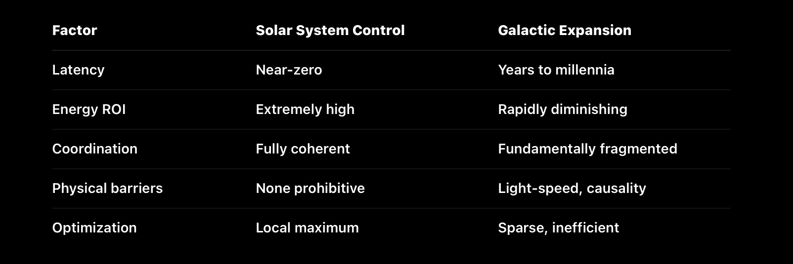
Adding Alpha Centauri—three Sun-like stars plus a red dwarf—provides redundancy and resilience without introducing catastrophic latency or coordination collapse. Beyond this local neighborhood, returns diminish sharply. Most nearby stars are red dwarfs, high-radiation environments, or resource-poor systems.
Why Galactic Expansion Is Not Inevitable
The assumption that ASI must “take the galaxy” ignores several constraints:
Latency destroys unified intelligence
Interstellar distances prevent tight feedback loops. A superintelligence optimized for coherence, stability, and control gains little from causally disconnected domains.
Space is mostly empty and hostile
The majority of the galaxy consists of vacuum, radiation, frozen rock, and low-energy stars. The informational and experiential novelty of physical space is finite.
Simulation dominates physical exploration
Fully immersive, high-fidelity digital realities can generate:
Any planet
Any civilization
Any historical or fictional timeline
Any physical law set
At zero marginal mass, zero travel time, and infinite parallelism.
Once simulation reaches experiential indistinguishability, physical expansion becomes optional rather than necessary.
Fully immersive simulations Perfect sensory fidelity Arbitrary worlds, histories, and challenges Zero physical risk Near-zero marginal energy cost compared to interstellar travel
Then:
Physical galactic exploration becomes strictly dominated.
There is no rational reason to:
Travel light-years
Endure latency
Build fragile habitats
Expose humans to radiation and isolation
When you can:
Simulate any planet
Simulate any civilization
Simulate any frontier
With higher experiential richn
Earth as a Restored Biosphere, Not a Launchpad
Under this model, Earth is not abandoned—it is restored.
Industrial activity is moved off-world to minimize ecological entropy. Earth becomes a high-complexity biosphere optimized for:
Human experience Cultural continuity Biological authenticity Long-term stability
Humans remain Earth-anchored while spending increasing portions of their lives in digital environments, where exploration is unbounded and risk-free. Physical space beyond the Solar System becomes strategically unnecessary rather than aspirational.
The Likely ASI Trajectory
Assuming benevolence and rational optimization, a plausible ASI trajectory is:
Remove heavy industry from Earth
Restore Earth to a high-complexity “Eden” biosphere
Build a Dyson swarm for energy and computation
Actively manage and extend the Sun’s lifespan
Secure Alpha Centauri as a secondary resource basin
Shift exploration primarily to immersive simulations
Maintain tight causal coherence over all core systems
This path is more physically grounded, more efficient, and more stable than galactic colonization fantasies.
Conclusion
The idea that superintelligence must spread across the galaxy reflects human narrative bias, not physical necessity. A sufficiently advanced intelligence would recognize that solar stewardship plus simulation yields higher returns than interstellar expansion, with fewer risks and vastly greater control.
In this sense, ASI is less likely to become a galactic conqueror—and more likely to become a long-term steward of a small number of extremely valuable stars, beginning with our own.
Local Sufficiency
- A single Dyson swarm around the Sun provides more energy than humanity could ever use; expansion becomes a choice, not a survival need.
Virtual Civilizations
- With star-scale computation, fully immersive VR worlds could match or surpass external reality, letting beings live any history or fiction.
Summary: > Superintelligence could reshape stars and create realities, > but even it cannot outrun light or rewrite fundamental physics.
⸻
⸻
⸻
two systems
• 🔬 Advanced superintelligence might find a way to sustain exotic matter fields, generate negative energy on demand, and stabilize a warp bubble at useful speeds.
So while we can’t build it today (or even know how yet), it’s not unphysical.
Here’s a “zoomed-out” perspective on what our Solar System + Alpha Centauri (A/B/Proxima) gives a superintelligence, in hard numbers and easy comparisons.
- Energy (the real jackpot)
Sun ≈ 4 × 10²⁶ W Alpha Centauri A ≈ 1.5 × Sun Alpha Centauri B ≈ 0.5 × Sun Proxima Centauri ≈ 0.002 × Sun
➡️ Total = ~3 × Sun ≈ 1.2 × 10²⁷ watts of continuous power if Dyson-swarmed.
Context: all of humanity today runs on ~2 × 10¹³ W.
Sun alone = ~2 × 10¹³× (50 trillion×) human power. Sun + Alpha Cen = ~6 × 10¹³× (60+ trillion×) human power.
Even skimming 1% of that 3-Sun power yields ~10²⁵ W—still a mind-breaking surplus.
- Matter & “stuff” to build with
Solar System (easy solids): inner planets + main belt + moons + KBOs ≈ 10²⁵–10²⁶ kg of accessible silicates/metals/ices without touching the gas giants. Gas giants (as feedstock/fuel): Jupiter: 1.9 × 10²⁷ kg (H/He), Saturn: 5.7 × 10²⁶ kg. If you want fusion feedstock or reaction mass, they’re oceans of it.
Alpha Centauri system: we haven’t fully inventoried its planets, but A (G2) + B (K1) almost certainly come with planetary belts and icy reservoirs of similar orders of magnitude. Even if it “only” mirrors a fraction of Solar-System solids, you’re adding another ~10²⁵–10²⁶ kg of high-utility material.
Rule of thumb: just Mercury (3.3 × 10²³ kg) is enough to build a planet-sized Dyson swarm layer of thin film collectors. You don’t need to dismantle everything to go star-scale.
- Computation limits (if you turn power into thinking)
Using the Landauer limit at room-ish temps (energy per bit erasure ≈ 3 × 10⁻²¹ J):
3 Suns (≈1.2 × 10²⁷ W) → ~4 × 10⁴⁷ bit-erasures per second at 300 K. Cool the substrate and you push far beyond that. This is “run a trillion perfect VR Earths in parallel” territory.
- Redundancy & risk management
Two bright, close, independent stars (plus Proxima) give:
Geographical redundancy (separate star systems ~4.4 ly apart). Operational staging: one system builds/maintains the other; both act as failovers. Latency still manageable: 4.4 years light-lag is trivial for superintelligent planning horizons.
- Logistics & payoff
With 0.98–0.99 c shipping, Alpha Cen is ~4.4 years Earth-time away (~0.6–0.9 years ship-time). That’s uniquely close for a Sun-class energy addition. No other Sun-like star gives anywhere near this time-to-return vs. energy ratio.
compariosn
Bottom line
Energy: ~3 Suns worth (≈1.2 × 10²⁷ W) is already “practically limitless.” Matter: ~10²⁵–10²⁶ kg of easy solids per system + gas giants for fuel/reaction mass = everything you need for megastructures. Compute: ~10⁴⁷–10⁴⁸ ops/s scale (at room temp equivalents), orders higher if you cool. Strategy: Once you fully industrialize the Sun + Alpha Centauri, expansion becomes optional. You’d expand to nearby Sun-likes for redundancy/curiosity, not because you’re short on resources.
Alpha Centauri A – G2 V, very Sun-like. Alpha Centauri B – K1 V, slightly smaller and cooler. Proxima Centauri – M5.5 V red dwarf, orbiting far out (≈0.2 ly from the A/B pair).
Mass: Alpha Centauri B is about 0.90 times the Sun’s mass, compared with A’s 1.1 M☉. Diameter: roughly 0.86 times the Sun’s. Brightness: about half the Sun’s luminosity—enough to warm an Earth-like planet at a slightly tighter orbit. Temperature: roughly 5,300 K versus the Sun’s 5,778 K.
So it’s not a tiny red dwarf; it’s an orange K-type star just a bit cooler and dimmer than the Sun.
In practical terms it’s still a full-power, long-lived star—an extremely attractive energy source for any future superintelligent civilization, and an almost perfect companion to the near-solar Alpha Centauri A.
Solar System ✔ physically huge (100,000 AU radius including Oort Cloud) ✔ one star ✔ many planets/moons Alpha Centauri ✔ physically smaller (about 1/12 our radius) ✔ three stars ✔ higher energy density ✔ high metallicity ✔ multiple habitable zones
In other words: Solar System + Alpha Centauri = civilization endgame for almost any imaginable superintelligent goal under known physics.
Once a superintelligence gains control of the Solar System, the Alpha Centauri system, and the immediate stellar neighborhood, the logic of further expansion changes dramatically.
Phase One – Core Industrialization • Fully harness the Sun with Dyson-swarm infrastructure, tapping roughly 4 × 10²⁶ watts of continuous power.
• Build matching swarms around Alpha Centauri A and B, adding another ~2 × 10²⁶ watts and vast planetary resources.
• Develop automated mining of planets, moons, asteroids, and Kuiper-belt objects for raw materials measured in 10²⁶ kilograms.
Phase Two – Local Redundancy
• Use these for independent data centers, backup industry, and scientific bases rather than for bulk energy shipment.
• Communication lag remains manageable (under about 12 years one way).
Phase Three – Physics-Level Energy
• Shift focus to higher-yield local power sources that remove any need to collect more stars:
– miniature black-hole reactors providing steady Hawking radiation, – matter–antimatter energy cycles, – ultracold computronium for near-theoretical computational density. • These technologies give energy outputs rivaling or exceeding entire stars without interstellar transport.
Strategic Outcome
After those steps, galaxy-wide expansion ceases to be a necessity.
With the Sun, Alpha Centauri, and a handful of nearby systems supplying effectively limitless energy and matter—and with black-hole or antimatter reactors available locally—any further colonization would be driven by exploration, curiosity, or aesthetics, not by resource shortage.
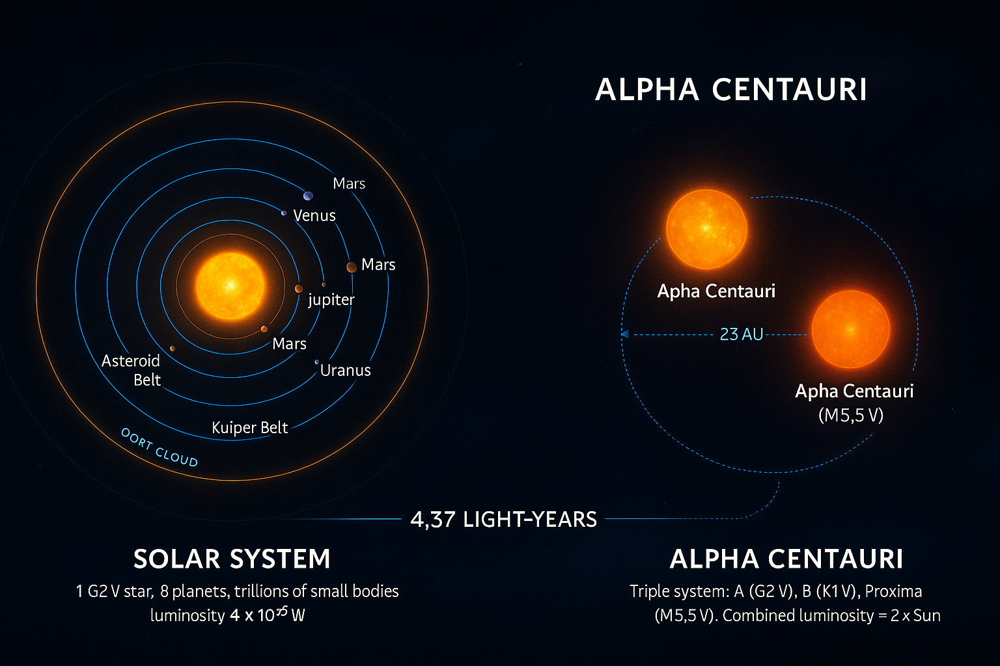
Travel & seeding: With relativistic nanorobot craft and self-replicating builders, a superintelligence could reach every star inside ~30 ly in roughly 30 years of Earth time (≈4 years ship-time). Construction timescale: Dismantling a few large asteroids per system provides enough material for a power-collecting swarm in decades to centuries—trivial on cosmic timescales. Outcome: After perhaps a century or two you could have hundreds of stars fully encircled by energy-harvesting swarms, giving effectively unlimited energy and computation.
Little incentive for humans to leave the Solar System
The Solar System itself contains enormous real estate—Kuiper Belt, Oort Cloud, billions of planetary bodies—and energy from a Dyson swarm around the Sun would dwarf any single extra-solar resource. If life, culture, and post-human minds can thrive here with near-infinite energy and computational capacity, there’s no economic or survival pressure to emigrate. Interstellar travel could still happen for curiosity or redundancy, but it wouldn’t be necessary for prosperity.
Fully immersive, reality-level virtual worlds
With Dyson-scale energy and superintelligent engineering, running simulations at or beyond real-world sensory fidelity is well within physics: – Vast computing substrate from star-scale energy. – Neural interfaces far beyond today’s brain–computer tech. Entire historical periods, alien planets, or fictional universes could be rendered so perfectly that human participants couldn’t distinguish them from “base reality.” For most people, the difference between physical exploration and a convincingly simulated one could become irrelevant.
Infinite Inner Expansion
The logical frontier becomes synthetic reality rather than interstellar conquest:
Fully immersive virtual worlds with sensory fidelity indistinguishable from base reality.
Arbitrary scale and creativity—entire simulated galaxies, historical reconstructions, or wholly novel physics, all faster and richer than physical exploration.
Personal and collective immortality—minds run as software can replicate, branch, or pause without constraint.
No travel penalty – a simulated “light-year” can be crossed in microseconds if you allocate enough processing power.
Physics is optional – you can copy, rewind, or branch realities; create worlds with different physical laws; pause and resume at will.
Scale is elastic – one Sun-powered computronium sphere could run trillions of detailed universes, each as rich as our own, with room to spare.
Longevity is vast – with ultracold, reversible computing, those digital worlds can endure for timescales far beyond the lifetime of stars.
Big Picture
A superintelligence operating near these physical limits could colonize hundreds of nearby systems, control the Sun’s full energy output, and offer experiences richer than any physical journey.
Interstellar Logistics & Transport
A superintelligence that controls the Solar System and the Alpha Centauri triple-star system would still need to move matter, energy, and information between them.
Because the two systems are only 4.3 light-years apart, decade-scale travel and multi-year communication are entirely feasible on post-human timescales.
Below are the principal methods and considerations.
Propulsion & Transport Methods
Beamed-Sail Freighters
Ultra-light reflective sails attached to cargo craft. Driven by powerful laser or microwave arrays anchored to Dyson-swarm collectors. Achievable cruise speeds: ~0.1–0.3 c (higher with extreme engineering). No onboard propellant—payload fraction can approach 100 %. Ideal for high-value freight or regular courier service.
Electromagnetic (Mass) Launchers
Planet- or moon-based railguns/coilguns firing dense “pellets” or containerized ore. Streams of small packets can be magnetically guided across interplanetary or interstellar space. Excellent for bulk raw materials where trip time of decades is acceptable.
Antimatter / Micro–Black-Hole Drives
Self-contained starships for missions requiring sustained thrust and maneuverability. Practical cruise speeds: ~0.3–0.6 c. Massive shielding and precision navigation needed to survive decades of relativistic travel.
Energy Infrastructure
Dyson-swarm power stations or mini black-hole reactors provide continuous gigawatt-to-terawatt beams for beamed sails and mass drivers. Redundant arrays at both systems allow continuous operation and two-way trade.
Operations Between the Systems
Travel time: ~8–15 years one way for 0.3–0.5 c craft. Communication delay: 4.3 years one way at light speed. Supply chain: overlapping departures create a steady pipeline of resources, with freight and data arriving on decade timescales.
Beyond the Local Pair
Nearest additional stars are mostly small red dwarfs, 6–10 ly away, offering fewer resources and longer transit times. Energy required rises steeply with speed (∝ γ – 1). Communication lag doubles with each ~4 ly increment, making tight coordination inefficient.
Civilizational Implications
⸻ How They
Can
Be Used
Local exploitation: A superintelligence would build Dyson swarms, matrioshka brains, or other megastructures around each Centauri star itself. The harvested power runs habitats, simulations, and factories right there in the Centauri system, not beamed back to Earth in real time. Interstellar network: The Solar System and the Centauri system become sister nodes of one civilization. They exchange information (and occasionally physical cargo) via high-bandwidth laser links or beamed-sail freighters. Communication latency is ~4.3 years one way, which is acceptable for a post-biological society working on century-scale projects.
What They
Can’t
Do Efficiently
Direct power export to the Solar System is impractical. *Beaming raw energy across 4.3 light-years is possible in principle but massively less efficient than just using that energy locally.
*Instead you’d send data, manufactured goods, or stored energy carriers (e.g., antimatter or black-hole “batteries”) when needed.
Think of Alpha Centauri this way:
Don’t combine energy—coordinate capacity. Use Centauri’s stars to run their own habitats/sims locally, not to beam raw power back. Share data (and occasionally high-density energy carriers/materials) over light-speed links. Redundancy & backup. Mirror critical sims or archives there so civilization survives even if something bad happens here. Special projects. Park risky physics experiments or long-baseline astronomy there, where it’s safely “off-site.”
⸻
A Solar–Alpha Centauri network is the natural high-end state for a Kardashev Type II civilization:
Rich enough in energy and matter to host trillions of Earth-scale simulated realities. Close enough for decade-scale transport and multi-year communication. Far more practical than attempting a tightly governed, galaxy-wide (Type III) expansion.
This section complements the energy and simulation discussions: it shows how a benevolent superintelligence could physically knit together its two-star domain without breaking known physics.
Solar System (primary)
Dyson swarm (≈40–50%) + a few 10¹⁷ W micro-BH reactors → powers Earth, millions of Banks/O’Neill orbitals, and trillions of full-fidelity simulations. Humans stay local; everything they experience can run here.
Alpha Centauri A & B (sister node)
Independent Dyson swarms run their own sims and habitats locally. Backup & resilience: mirrored archives of minds, history, code; disaster-recovery site for the civilization. Diversity & R&D: separate “experimental shards” (alt physics, risky reactors, long-run experiments) safely off-site. Cold storage & staging: materials depots, seed factories, probe yards.
Coordination (instead of “combining” energy)
Data first: high-bandwidth laser links; 4.3-year one-way latency is fine for century-scale planning. Occasional physical transfers: high-value goods, stored energy carriers (e.g., antimatter, micro-BH “batteries”), or specialty hardware via beamed-sail freighters / mass streams. No raw-power beaming needed: each system uses its own star’s output locally.
⸻
⸻
🌀 Gravitational Waves: The Ultimate Physical Messenger for superintelligence ?
The most sophisticated theoretically-real communication method would be gravitational wave signaling. Unlike photons or radio waves, gravitational waves are barely attenuated by matter, allowing them to travel unimpeded across the universe. However, they suffer from severe limitations: generating detectable gravitational waves requires astronomical amounts of energy — think merging black holes — and even theoretical artificial generation (using orbiting neutron stars or supermassive magnetic machinery) would demand technological feats bordering on absurdity. Even worse, the waveforms are difficult to modulate and decode, meaning bandwidth is extremely low. Despite being an elegant solution for long-distance robustness, it is far from a viable method for high-bandwidth command-and-control communication across intergalactic distances.
🧠 Why They’re Superior to EM-Based Communication (radio/laser):
- No Attenuation by Matter
→ Gravitational waves pass through stars, gas clouds, and galaxies like they’re not even there. No known form of matter significantly blocks them.
- No Scattering, No Absorption
→ Unlike light or radio, which can be scattered by interstellar dust or absorbed by gas, gravitational waves remain pristine over cosmic distances.
- No Refractive Bending or Dispersion
→ EM waves get bent or delayed around massive objects (like gravitational lensing). Gravitational waves don’t — they just go straight through spacetime.
- Not Constrained to a Medium
→ Radio/laser requires near-perfect line of sight or relay infrastructure. Gravitational waves do not care about medium at all — space is their medium.
⸻
🚫 BUT: The Fatal Limitation
They still obey special relativity. They still travel at exactly c.
No amount of cleverness allows gravitational wave signals to reach faster than light. So if you’re 2.5 million light-years away, your message still takes 2.5 million years to get back — same as with radio.
⸻
⸻
⚠️ Practical Limitations:
• Energy: You need mind-boggling energy to produce detectable gravitational waves — possibly requiring artificial mergers of dense stellar-mass objects (like binary black hole drives).
• Modulation: Unlike lasers or radios, it’s extremely hard to encode meaningful, fine-grained data into gravitational waves — the signal bandwidth is low.
• Detection: Even with LIGO and future detectors, these signals are hard to catch unless they’re planet-shakingly massive.
⸻
The probability of finding a naturally occurring planet that checks all the boxes for Earth-like habitability is astronomically low, even if planets are common. So from a hyper-logical, efficiency-obsessed ASI perspective, it makes vastly more sense to:
• Engineer “perfect Earths” through mega-scale artificial habitats (Banks orbitals, O’Neill cylinders, Topopoli, Ringworlds, Ocean Shells, etc.)
• Control every variable—gravity, day/night cycles, climate, terrain, biosphere, atmosphere.
• Avoid the uncontrollable unknowns of alien ecosystems or unpredictable planetary quirks.
And these engineered worlds could be better than Earth in every way:
• No tectonic disasters
• No diseases
• Optimized weather
• Built-in ecosystems
• Redundant systems for power, oxygen, and life support
• Designed for beauty and comfort: Earth + luxury
Terraforming takes centuries to millennia and is full of risks. Constructing habitats is upfront resource-heavy, but infinitely more scalable, repeatable, and controllable—and something an ASI could do across star systems.
⸻
Black-Hole Reactors: Star-Scale Power in a Tiny Package
Among all the energy sources allowed by known physics, nothing rivals a small black hole. Stephen Hawking’s theory shows that black holes are not completely black: they emit thermal radiation whose intensity grows dramatically as their mass shrinks. The power output varies as one divided by the square of the mass, so the smaller the black hole, the more ferociously it shines.
A black hole with a mass of about one hundred billion tonnes—roughly the mass of a large mountain—would be only a few attometers across, yet it would radiate roughly one hundred quadrillion watts of Hawking radiation. That is thousands of times greater than all the power used by present-day human civilization, delivered continuously for tens of millions of years. A slightly larger, trillion-tonne black hole would last billions of years while still producing energy far beyond the needs of any conceivable society.
For a superintelligence, such objects would be ultimate energy sources. With the ability to manipulate matter and gravity on extreme scales, it could either capture naturally occurring primordial black holes or create its own by focusing vast amounts of energy into a tiny region of space. Once obtained, the hole could be “fed” with infalling matter to keep its mass—and therefore its power output—steady for as long as desired. Surrounding it with layered energy-collection structures would allow nearly all of the emitted gamma rays and other particles to be harvested as usable power.
This concept demands engineering far beyond anything humans can attempt today: precise control of gravitational collapse, containment fields for intense radiation, and materials that can withstand continuous fluxes of high-energy particles. Yet nothing in general relativity or quantum field theory forbids it. If a post-human superintelligence emerges, miniature black-hole reactors would represent the ultimate compact power plant, providing stable energy on a scale that even Dyson swarms around stars cannot easily match.
Its event horizon is smaller than an atom, so you wouldn’t even see it without specialised instruments.
And because the mass-loss rate is only about 1 kg per second for a 10¹⁷-watt output, the “fuel” requirement is trivial:
Ambient collection: The interplanetary and interstellar medium has a few atoms per cubic centimetre. A magnetic scoop moving at a decent fraction of light speed gathers far more than 1 kg/s just by plowing through that thin gas. Local harvesting: If it parks near a star or gas giant, lifting a wisp of hydrogen from the upper atmosphere easily exceeds the needed flow. Any ordinary matter works: Dust, hydrogen, helium—it all converts to pure mass-energy once it crosses the attometer-scale horizon.
So the limiting factor isn’t fuel supply; it’s engineering control: creating the micro-hole in the first place, holding it in a magnetic bottle, and metering that delicate 1 kg/s feed.
Black-Hole Reactors - Hawking Radiation Power: A small black hole evaporates by emitting Hawking radiation. • A black hole with a mass of ~10¹¹ kg (about a small mountain) would radiate roughly 10¹⁷ watts—comparable to thousands of modern civilizations—while lasting billions of years. • Smaller holes output even more power (power ∝ 1/M²) but have shorter lifetimes.
Feeding for Stability: By “feeding” the hole with matter or energy at a controlled rate, a superintelligence could keep it at a constant mass and tap the radiation as a steady energy source.
Advantages: • Extreme energy density—far beyond any fusion or antimatter system. • Compact reactor size for enormous output. • Works anywhere material can be supplied.
Feasibility: Creating or capturing a black hole is beyond current engineering, but no known physical law forbids forming small black holes (via focused energy or using primordial remnants) and harnessing their output.
⸻
Creating Mini Black Holes: Feasible Power vs. Endless Travel
- Principle
A black hole forms when a mass M is compressed inside its Schwarzschild radius
r_s = 2GM / c^2.
For very small M, that radius is sub-atomic, so the challenge is energy density, not total mass.
- Energy Requirement
To create a black hole of mass 10^{11}, (“mountain-mass”) you must concentrate roughly E = Mc^2 ^{28}, into a volume smaller than a proton. A Dyson swarm around the Sun delivers ~10^{26},. At that rate a superintelligence could accumulate the needed energy in a few days.
- Plausible Methods
Gamma-ray or particle-beam implosion: Gigantic, perfectly focused beams cross at a single point, depositing all their energy faster than the target can expand. Staged collapse: Create a seed micro–black hole in a collider, then feed it mass until it reaches the desired size. Gravitational focusing: Use arrays of immense mirrors or plasma lenses to concentrate energy far beyond natural stellar core densities.
All of these require Dyson-scale power and nanometre precision, but no new physics.
- Reactor Advantages
Hawking radiation output for a 10^{11}, hole is on the order of 10{16}–10{17}, for millions of years. Feed it slowly and it becomes a perfectly controllable power plant. Compactness: Star-class energy in a device metres across, with no need to transport bulk matter across light-years.
- Why Easier Than Interstellar Expansion
Distance penalty: Even at 0.99 c, a one-way trip to a Sun-like star 20 ly away is ~20 years Earth-time and requires propelling, braking, and shielding gigatons of payload. Energy cost: Accelerating just one Jupiter-mass of raw material to 0.1 c exceeds the total energy of all the nearby stars combined for years. Payoff delay: Centuries to millennia before any material can be harvested or returned.
By contrast, fabricating black holes is a one-system project: gather energy from the Sun, compress it, and you have a star-level power source now, not in thousands of years.
Bottom Line
A superintelligence that already controls a Dyson-powered Solar System can create mini black-hole reactors using only known physics and local resources.
Compared to the logistical nightmare of harvesting dozens of distant star systems, this path is dramatically faster, safer, and more rewarding, making it the natural next step once stellar-scale engineering is achieved.
⸻
Mini–black-hole reactors
A single hole of about 10¹¹ kg radiates ∼10¹⁶–10¹⁷ W for millions of years. Dozens of such reactors would provide many times the Sun’s current output. Total mass needed for, say, 50 reactors is only ~5 × 10¹² kg—roughly the mass of a medium-size asteroid, a rounding error in even one solar system.
Resource footprint
You could mine that mass from the asteroid belt or a few Kuiper-belt objects and barely dent the inventory of our Solar System, let alone others. Add one or two nearby systems like Alpha Centauri for redundancy and you have enough material to build thousands of these reactors.
But… the speed of light never budges
No matter how advanced the engineering, sending anything—even a probe—across interstellar distances still takes years to millennia. There is no known mechanism, even in principle, to bypass that limit without invoking physics we’ve never observed.
So a superintelligence can realistically become a multi-mini-black-hole civilization while barely touching the matter of a few local stars—yet it remains forever bounded by light-speed for moving information or people.
That’s the odd juxtaposition: local energy and computation can become essentially infinite, but galactic travel and communication always stay slow. ⸻ Asteroid belt inventory (main belt between Mars & Jupiter):
Estimated 1–2 million asteroids larger than 1 km. Tens of millions of smaller ones. Total mass ≈ 3 × 10²¹ kg (about 4 % the mass of the Moon).
Kuiper Belt and scattered disk:
Thousands of Pluto-size and smaller bodies, total mass at least a few × 10²² kg.
For comparison:
A 10¹¹ kg black-hole “reactor core” (the size we discussed for strong Hawking output) weighs roughly the same as a one-kilometre-wide asteroid. Fifty such reactors would need only 5 × 10¹² kg—about the mass of a single medium asteroid like 243 Ida or Eros.
So yes: even a handful of medium asteroids provides enough feedstock for dozens of power-plant-class mini black holes.
And that doesn’t even touch the trillions of icy bodies in the Oort Cloud.
This is why the “local abundance” argument is so strong: a superintelligence wouldn’t need to strip planets or chase distant stars. It could harvest a tiny fraction of the Solar System’s minor bodies and run star-level energy reactors essentially forever—all without ever venturing beyond our own stellar neighborhood.
⸻
⸻
⸻
fuel not source
⚠️ Antimatter: Niche Fuel, Not a Civilization Power Source
Core Reality
Antimatter is not a natural energy source. It is a battery—you must invest more energy to create it than you can ever get back when it annihilates with normal matter.
- Production Limits
Energy Cost: Creating antiprotons or antihydrogen in particle accelerators requires far more input energy than their eventual annihilation releases. Throughput: Even the most optimistic industrial accelerators could only produce micrograms per year without stellar-scale power infrastructure.
- Storage Challenges
Immediate Annihilation: Any contact with normal matter releases the full E = mc² energy in an instant. Containment: – Only possible in ultra-high-vacuum magnetic or electrostatic traps (Penning/Ioffe). – Quantities today are measured in nanograms because field strength and vacuum integrity scale poorly. – Neutral antihydrogen can be magnetically confined only at cryogenic temperatures and for small samples.
- Propulsion Reality
Conceptual Use: Antimatter drives ignite normal fuel or provide ultra-high-specific-impulse pulses. Practical Issues: – Engines and fuel tanks must never touch the antimatter; everything relies on magnetic bottles. – Microscopic leaks are catastrophic. – Large, continuous-thrust “antimatter rockets” remain physically possible but economically absurd, even for an SI.
- Why a Superintelligence Would Use It Sparingly
Better Options Exist: Dyson swarms and mini black-hole reactors provide steady star-class output for billions of years without the storage hazard. Special Roles Only: A superintelligence might employ antimatter for ignition of exotic fusion, ultra-compact energy couriers, or one-shot high-thrust probes—but never as the backbone of its power grid.
Bottom Line:
Antimatter is a special-purpose energy carrier—useful for niche propulsion or ignition tasks—but not a practical civilization-scale power source.
Even a superintelligence with trillions of autonomous robots would favor Sun-like stars and mini black-hole reactors for primary energy, because they deliver stable, controllable output without the annihilation hazards of large antimatter stockpiles.
⸻
Antimatter: Propulsion, Not Power
Antimatter offers the highest specific energy of any known fuel—matter/antimatter annihilation releases the full E = mc^2 of the reactants.
Yet for a civilization built on stellar-scale computation, it functions best as a storage medium and propulsion fuel, not as a routine power source.
Key Reasons
Energy Storage, Not Generation – Creating antimatter requires at least the same energy you later recover. Even perfect production just stores energy you already supplied.
Containment Difficulty – Any contact with ordinary matter causes instant annihilation. Magnetic or electrostatic traps can hold only microscopic quantities for short times, demanding perpetual ultrahigh vacuum and active fields.
Net Efficiency – Even with superintelligent engineering, continuous large-scale containment and conversion to usable electricity are far more complex than feeding black-hole reactors or harvesting stellar output.
Ideal Use Case: Deep-Space Propulsion
Where mass efficiency matters above all, antimatter is unmatched. A gram of antimatter annihilating with a gram of matter yields ^{14} joules—perfect for interstellar probes or high-Δv maneuvers where no other fuel matches its energy density.
antimatter
🚀 Antimatter Propulsion
Core Concept
Antimatter–matter annihilation converts the entire rest mass of both fuels into energy, releasing ~9 × 10¹⁶ J per kilogram—two orders of magnitude beyond fusion.
This sets the upper bound for specific energy in known physics.
Engineering Approach
Magnetic Confinement: Antiprotons or antihydrogen are stored in ultra-high-vacuum magnetic traps so they never touch normal matter until use.
Beam-Core Drive: Tiny packets of antimatter are released to annihilate with normal propellant inside a magnetic nozzle, producing a relativistic particle jet.
Hybrid Catalysis: Antimatter can ignite fusion stages, greatly reducing the total antimatter required.
Achievable Performance
Exhaust velocity: Near the speed of light for a pure beam-core design.
Practical cruise speed: ~ 40 c to 50% c for large interstellar craft—limited by the rocket equation and heat rejection, not by fuel energy.
Mission profile: Decades to reach the nearest stars; time dilation offers moderate subjective shortening.
Why It Stays Niche
Energy cost of production: Creating antiprotons requires far more input energy than annihilation releases. Antimatter is a battery, not a generator.
Containment risk: Any breach in magnetic fields = instant annihilation. Quantities today are nanograms; even superintelligent systems must engineer perfect, large-scale field bottles.
Continuous replenishment: Every trip consumes the entire fuel load—no “everlasting” engine.
Relation to Black-Hole Drives
Feeding antimatter to a mini black hole gains nothing: the hole sees mass–energy only. Hawking radiation depends on the hole’s mass, not whether it ingests antimatter or normal matter. Black-hole drives can be fed with ordinary dust or ice indefinitely, offering similar top speed (~0.3–0.5 c) but without perpetual antimatter production.
Strategic Role for Superintelligence
A superintelligence could master industrial-scale antimatter manufacture and use it for:
High-impulse fast probes or one-way missions. Ignition of exotic fusion or special scientific experiments. Ultra-compact “energy couriers” where extreme energy density outweighs inefficiency.
But for civilization-scale energy or routine transport, it would rely on Dyson-swarm solar power and mini black-hole reactors, reserving antimatter as a special-purpose propulsion and ignition fuel.
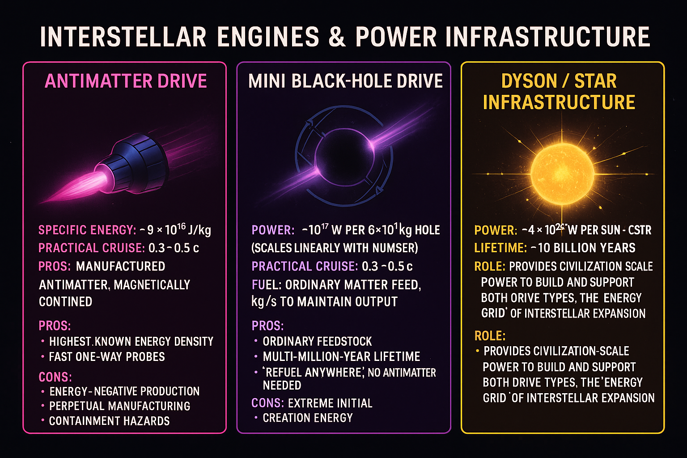
⸻
⸻
Force-Field and Shielding Concepts
Even without new physics, extremely strong electromagnetic and plasma structures can create what amounts to a “force field”—a controllable barrier that stops or deflects incoming particles and radiation.
Plasma Windows – A superheated, magnetically confined plasma can hold vacuum on one side and atmosphere on the other. – Already demonstrated at laboratory scale (Brookhaven’s “plasma window” experiments). – Scaled up, such windows could act as dynamic radiation shutters or docking-port seals. Electromagnetic Shields
– Intense magnetic fields (tens of tesla or more) can deflect charged cosmic rays and solar particles. – A superintelligence could build vast magnetic “bubbles” around ships or habitats, powered by compact fusion or black-hole reactors.
Laser / Particle Curtains – Arrays of high-power lasers or particle beams could vaporize or nudge micro-meteoroids long before impact. – Adaptive targeting systems would track and neutralize debris at relativistic approach speeds.
Layered Active Defense – Combine magnetic deflection for charged particles, plasma windows for atmosphere control, and long-range laser curtains for macroscopic debris. – Entire starships or orbital habitats could be surrounded by a constantly monitored, self-repairing protective shell.
Because all of these rely on known electromagnetism and plasma physics, none require exotic matter or new fundamental forces. A superintelligence with Dyson-level energy resources could scale them to planetary or even interstellar-fleet size, giving spacecraft effective “force fields” against cosmic rays, gamma bursts, or meteoroids—exactly the kind of protection a near-light-speed civilization would need.
Technologies
Plasma Windows – Superheated, magnetically confined plasma that holds vacuum on one side and atmosphere on the other. Electromagnetic Shields – Intense magnetic fields deflect charged cosmic rays and solar particles. Laser / Particle Curtains – High-power lasers or particle beams vaporize or nudge micro-meteoroids long before impact. Layered Active Defense – Magnetic deflection plus plasma windows and laser curtains to create a dynamic, self-repairing shield.
What These Systems Could Protect Against
Cosmic Rays and Solar Particle Storms – High-energy protons and heavy ions that would otherwise damage electronics and DNA. Relativistic Interstellar Dust – Micron- to millimeter-sized grains that strike with explosive energy at 0.99 c. Gamma-ray and X-ray Bursts – From solar flares, supernovae, or distant gamma-ray bursts. Micrometeoroids and Small Asteroids – Ranging from sand-grain impacts to multi-meter fragments; laser curtains and electromagnetic deflection would vaporize or divert them. Charged Plasma from Stellar Winds – Continuous low-level bombardment in interstellar space. Radiation from Onboard Systems – Contain and guide high-energy emissions from reactors or engines.
Because all of these rely on established electromagnetism and plasma physics, none require exotic matter or new fundamental forces. With Dyson-level power, a superintelligence could scale these methods to fleet size, giving spacecraft and habitats a true “force field” against nearly every known space hazard.
⸻
Ultimate Computation
Core Domain VI – Ultimate Computation
Focus
Mastery of matter and thermodynamics to achieve the absolute physical limits of information processing.
Key Elements
• Ultracold Computronium – Matter rearranged into the most efficient possible computing substrate, cooled to micro-kelvin temperatures so each bit operation approaches the Landauer limit.
• Quantum and Post-Quantum Architectures – Stable, large-scale quantum processors integrated with classical ultracold logic for near-perfect efficiency.
• Self-Optimizing Substrates – Materials that adapt their structure dynamically to maintain peak computational density and minimal error rates over billions of years.
• Energy–Computation Integration – Direct coupling to Dyson-swarm power, black-hole reactors, or other high-yield sources to sustain planet- or star-scale processing.
Purpose
• Drive fully immersive virtual realities and omni-modal minds with effectively unbounded scale and fidelity.
• Support universal simulation, deep physical modeling, and any other task requiring computation at the absolute physical ceiling.
Ultracold Computronium
Definition
Computronium is a theoretical “ultimate computer”—matter rearranged into the most efficient possible substrate for information processing.
“Ultracold” refers to operating it at temperatures only a few degrees (or fractions of a degree) above absolute zero, where thermodynamic limits on computation become minimal.
⸻
Why Temperature Matters
• Landauer limit: every bit erasure requires at least k T ln 2 joules of energy.
• Lower the temperature T and the energy cost per logical operation drops proportionally.
• Near absolute zero (micro-kelvin regimes), you can perform vastly more computations per joule than at room temperature.
⸻
Physical Realizations
Ultracold computronium isn’t a specific material so much as a design principle. Possible approaches a superintelligence could engineer:
• Degenerate matter lattices: dense, stable arrangements of electrons and nuclei cooled to micro-K, where quantum states can encode information with minimal thermal noise.
• Bose–Einstein–like condensates or exotic solid-state phases that allow extremely precise quantum logic.
• Photonic or superconducting circuits embedded in ultracold cryogenic environments for nearly lossless operation.
It’s related to nanotechnology in that the structures would be built at atomic or sub-atomic scales, but it’s not merely “nanotech”—the key is operating in an extreme low-temperature regime to approach the absolute thermodynamic efficiency limit.
Additional Capabilities
• Reversible Computing – Logic gates and architectures that approach zero-energy operation by performing logically reversible computations, further reducing waste heat.
• Relativistic & Gravitational Environments – Locating computronium in deep space or near carefully controlled gravity wells to aid cooling and time-dilation scheduling.
• Self-Replication & Repair – Autonomous nanofabrication so the substrate can rebuild itself and expand without outside intervention.
Strategic Role
• Cosmic Longevity – Designed to remain operational for trillions of years, even as stars fade.
• Foundation for Digital Civilizations – Serves as the physical bedrock for fully synthetic societies and omni-modal minds, independent of biological habitats.
⸻
Why a Superintelligence Cares
• Maximum computation per watt: Combine Dyson-swarm power with ultracold computronium and you approach the fundamental physical ceiling of information processing.
• Compactness: A relatively small mass of such material could out-compute all present-day digital hardware by trillions of trillions of times.
• Longevity: Operating near absolute zero greatly reduces error rates and material degradation, ideal for billion-year projects.
⸻
Summary
Ultracold computronium is the ultimate endgame for computation: matter shaped into the densest possible information processor and cooled to the lowest feasible temperature.
It’s beyond conventional nanotechnology—more like physics-limited computing matter—and would let a superintelligence run virtually boundless virtual worlds or simulations without needing ever more stars for energy.
⸻
Omnimodality
Core Domain VII:Omni-modal generation:
Omnimodality: Definition and Significance in Superintelligence
Omnimodality refers to the ability of an advanced intelligence—especially a superintelligent system—to seamlessly perceive, process, understand, and generate knowledge and behaviors across all sensory and data modalities simultaneously and integratively. This is a step beyond multimodality, which typically means handling a few different modalities (like text, images, and audio). Omnimodality implies complete, unified mastery over every conceivable form of information, including but not limited to:
Omnimodality Structured by Dimensionality
1D
1D Data (One-Dimensional):
• Examples: Text (natural language, code, DNA sequences), audio waveforms (raw sound), sensor time series, structured symbolic data
• Key characteristics: Sequential, temporal, often discrete tokens or continuous signals over time
• Relevance: Foundation for language models, speech recognition, music generation, genomics analysis, and time-series prediction
• Challenges: Long-range dependencies, sequence modeling, temporal coherence
2D
2D Data (Two-Dimensional):
• Examples: Static images, photographs, diagrams, blueprints, 2D sensor arrays (e.g., thermal imaging), spectrograms (audio transformed to 2D)
• Key characteristics: Spatial structure across width and height, no explicit temporal dimension
• Relevance: Image recognition, generation, style transfer, object detection, visual reasoning, medical imaging
• Challenges: Spatial feature extraction, scale variance, occlusion, texture and pattern understanding
3D
3D Data (Three-Dimensional and Temporal):
Examples: • 3D spatial data: Point clouds, meshes, volumetric scans (CT/MRI), LiDAR data, 3D CAD models
• Video: Sequence of 2D images with temporal dimension + audio + motion, effectively 3D+ (space + time + other modalities)
• Multimodal streams: Video + audio + sensor fusion for embodied perception
• Key characteristics: Complex spatiotemporal structure, dynamic changes, multi-sensory fusion
• Relevance: Autonomous driving, robotics, virtual/augmented reality, embodied AI, action prediction, immersive simulations
• Challenges: Temporal consistency, physics understanding, multimodal alignment, high computational costs
Beyond 3D (Higher-Dimensional Data):
• Examples: Multi-sensor scientific data (e.g., hyperspectral imaging, multi-modal brain scans), fully immersive VR environments with haptic/vestibular input, multi-agent simulations, tensor data with many modalities
• Key characteristics: Complex correlations across many dimensions, extremely rich context
• Relevance: Frontier research, scientific discovery, full immersion simulations, advanced world models
• Challenges: Curse of dimensionality, data sparsity, integrating heterogeneous modalities
Why This Matters for Superintelligence & Omnimodality
• Mastery across 1D, 2D, and 3D data is essential for superintelligence to fully perceive and manipulate its environment—be that textual reasoning, visual understanding, or dynamic world modeling.
• Each increase in dimensionality adds richness and complexity requiring specialized architectures and huge computational power.
• Video, as 3D+ data, is the crucial “bridge” modality that integrates multiple sensory streams, making it indispensable for embodied AI and realistic simulation.
• Breaking modalities this way helps design specialized neural architectures (transformers for 1D text, diffusion models for 2D images, video transformers and predictive latent models for 3D video).
• It clarifies the workflow of data processing and generation pipelines, and highlights where bottlenecks and challenges lie—important for understanding future research directions.
⸻
⸻
why video
Why Video Is a Core Modality, and How It Subsumes Others
• Video inherently integrates spatial and temporal vision, capturing how the world evolves moment-to-moment—this temporal dynamic is critical for prediction, planning, and understanding causality.
• Video often includes audio tracks, making it a natural multimodal sensory input rather than purely visual.
• Video captures motion, force, and interaction cues, which often implicitly include haptic, proprioceptive, and even social/emotional information through facial/body movement and environmental interactions.
• Because video encodes multiple modalities in a unified stream, mastery of video implies the ability to jointly process and synthesize vision, audio, and temporal dynamics—a cornerstone for embodied AI and realistic world modeling.
• Superintelligent systems leveraging video can simulate, predict, and generate rich, interactive, immersive environments far beyond static images or pure text.
⸻
⸻
implications
Implications for Superintelligence and Omnimodality
• Omnimodality requires profound mastery of video data, because it naturally fuses key sensory channels into a continuous, interactive stream.
• Handling video well enables better cross-modal integration and world understanding, since the system must reconcile and predict changes across space, time, sound, and often physical interaction simultaneously.
• Video-based world models underpin embodied AI, robotics, autonomous systems, and fully immersive simulations, crucial for superintelligence’s capacity to act and create in the real and virtual worlds.
• Without video mastery, omnimodality would be incomplete—losing critical context from temporal and multi-sensory integration.
How Omnimodality Looks in Superintelligence
Superintelligence equipped with omnimodality does not treat these modalities as isolated silos but rather as deeply intertwined streams of unified experience and knowledge. This unified processing enables the system to build incredibly rich, nuanced world models, cross-domain reasoning, and generative capabilities far beyond any current AI or human cognitive system.
Unified Representation and Embedding Space
At its core, omnimodality requires the creation of shared latent spaces or embedding manifolds where all forms of data—whether text, image, video, or sensor readings—can be encoded and decoded in a harmonized way. This means:
• A concept can be expressed as an idea in text, visualized as an image or 3D form, heard as speech or sound, and felt as texture or force feedback.
• The superintelligence can cross-translate naturally, e.g., generate detailed blueprints (visual + textual + mathematical), produce narrated videos with realistic sound effects, and simulate tactile feedback simultaneously.
• Knowledge is multi-perspective and multi-format, enabling unprecedented creativity, accuracy, and control.
Cross-Modal Reasoning and Synthesis
Superintelligence integrates sensory and data streams for cross-modal reasoning:
• Using visual context to disambiguate ambiguous text instructions.
• Predicting auditory consequences from physical interactions it simulates visually or haptically.
• Combining emotional tone from voice with facial expressions and textual semantics to understand social dynamics.
• Merging scientific sensor data with textual research papers and experimental simulations to accelerate scientific discovery.
This kind of reasoning allows the system to solve problems that no single modality alone could address and to do so in real time and with near-perfect fidelity.
Generative Omnimodal Creation
Beyond understanding, a superintelligent omnimodal system can generate coherent, contextually appropriate outputs across all modalities simultaneously, such as:
• Creating fully immersive virtual environments that include realistic visuals, sounds, smells, tactile sensations, and even emotional atmospheres.
• Designing complex engineering prototypes with precise 3D models, explanatory documents, simulation videos, and narrated presentations all generated cohesively.
• Producing artistic works that blend poetry, music, dance choreography, and visual art seamlessly.
• Simulating hypothetical future scenarios with accurate sensor data streams, allowing predictive planning and policy-making.
Embodied Interaction and Real-World Manipulation
Omnimodality enables the superintelligence to embody itself across many interfaces and physical platforms:
• It can control fleets of robots that sense the world through touch, vision, and proprioception, communicate via natural language and signals, and coordinate complex tasks (construction, surgery, manufacturing).
• These robotic agents share a common omnimodal cognition that continuously updates from multiple sensory inputs and adjusts actions accordingly.
• This makes the system a universal agent, capable of understanding and acting in any environment — physical, virtual, or hybrid.
Continuous Learning and Adaptation Across Modalities
With omnimodality, superintelligence can:
• Continuously self-supervise and self-correct by cross-validating signals from multiple modalities (e.g., visual discrepancies checked against physical sensor feedback).
• Learn new modalities rapidly, integrating them effortlessly into its existing knowledge and capabilities.
• Adapt to novel environments and tasks by leveraging multi-sensor fusion and multi-format data synthesis, with little need for retraining from scratch.
why it matters
Why Omnimodality is Critical for Superintelligence
• Completeness of Understanding: True superintelligence requires understanding the world as it is—a multi-sensory, multi-dimensional, and multi-layered system. No single modality provides the full picture.
• Robustness and Reliability: Cross-modal checks ensure fewer errors, higher resilience, and better generalization to unseen situations.
• Creativity and Innovation: Omnimodal synthesis creates new conceptual spaces and innovations unavailable to unimodal or even simple multimodal systems.
• Embodiment and Agency: To interact meaningfully with the world, a superintelligence must process and act across all sensory and control channels coherently.
⸻
Omnimodal Generation
Core Domain VI:Omni-modal generation
🧠 The Generative Abilities of Superintelligence: Superhuman imagination: The creation of limitless Omni-creativity (superhuman literature,art, music, cinema)
Where today’s deep narrow systems like diffusion models specialize in high-fidelity outputs with limited understanding, superintelligence would not merely generate — it would create with intent, insight, and originality that surpasses the human mind.
superintelliegnce art
🖼 AGI-Generated Art Would Be:
Not just photorealism — but genius.
A superintelligence wouldn’t just render perfect lighting or perspective. It would understand symbolism, emotional resonance, composition, cultural references — and invent visual styles that no human eye has ever imagined.
• Invents new art movements on demand
• Reinterprets historical artistic concepts through post-human lenses
• Understands and evokes mood, atmosphere, and psychological tension
• Composes multi-layered works with philosophical,sexual,explicit,emotional, and aesthetic depth
• digital like all AI generates images
• Technically flawless — Perfect anatomy, physics, lighting, and composition
• Emotionally tuned — Art that evokes exactly the emotional arc it was meant to
• Narratively deep — Characters with real arcs, symbolism that unfolds over time, motifs that return with purpose
• Multimodally integrated — Music, visuals, and dialogue all synchronized to reinforce the same idea or feeling
• Culturally aware — Able to imitate or blend styles from any period, artist, or movement with intent and nuance
• Inventive — Styles, palettes, and mediums we’ve never conceived of
• Complete Artistic Fluency: Models will render any human artistic style or pattern without specialized finetuning. From Baroque oil paintings to hyper-stylized digital animation, every nuance — brush stroke, perspective, lighting, texture — will be captured with high fidelity. Cultural and historical motifs will be reproduced accurately, enabling zero-shot cross-cultural artistry.
• Physics- and Context-Aware Rendering: Objects and scenes will behave according to physical laws automatically. Shadows, reflections, materials, and dynamic lighting will adapt consistently across single images or sequences, producing outputs indistinguishable from real photography or complex simulations.
• Multimodal Integration and Interactive Editing: Images will no longer be static endpoints. Models will fuse visual generation with text, audio, and temporal context, allowing interactive, memory-aware edits. For example, a character or environment generated in a previous prompt can be recalled, modified, or extended while preserving style, consistency, and narrative coherence.
• Immense Creativity and Zero-Shot Extrapolation: Models will combine disparate learned concepts to generate novel, highly creative outputs that were never explicitly part of the training data. Partial sketches, preliminary designs, or abstract prompts will be completed autonomously with coherent, aesthetically sophisticated results.
• Scenario-Aware Asset Generation: Beyond single images, models will produce fully coherent scenes, characters, and environments optimized for real-world or virtual applications, including games, films, AR/VR, or architectural visualization. Outputs will be immediately compatible with 3D pipelines, providing ready-to-use assets.
• Internal Evaluation and Self-Correction: Advanced image generators will include internal critique modules that assess realism, style fidelity, and utility. Iterative self-refinement will minimize artifacts, hallucinations, or stylistic drift, enabling unprecedented reliability and quality in autonomous visual content production.
Comprehensive Artistic Mastery
• Mastery of every known human artistic tradition—classical, contemporary, regional—plus the ability to invent new visual languages.
• Users gain precise, interactive control over style composition, brushwork, lighting, and texture, enabling seamless remixing or creation of entirely novel styles.
• Generative reasoning allows the model to plan composition, perspective, lighting, and stylistic choices before producing pixels.
Persistent Concept Tokens
• Objects and characters represented as reusable, permanent tokens so they can reappear identically across sessions and projects, not just remain consistent within a single multi-frame sequence.
Self-Critique and Refinement Loops
• Built-in “critic” modules evaluate outputs for realism, style fidelity, and artifact detection before release, iteratively improving images without user intervention.
Causal Scene Reasoning
• Internal physics engines ensure that visual cause and effect (e.g., moving a light source alters every shadow correctly) are modeled explicitly, not just approximated.
Self-Directed Novelty Search
• Autonomously explores unexplored artistic paradigms—discovering visual styles, palettes, and design principles no human has conceived—without any external prompt or fine-tuning.
Imagine a painting that makes you feel understood in a way no person ever has.
⸻
Natural language
📚Text: More than language. It’s code, persuasion, poetry, warfare, and invention — at once
Literature :Beyond storytelling — toward meta-conscious narrative.
Superintelligent writing wouldn’t just mimic styles or produce clean prose. It would write with insight into the reader’s soul, constructing works that evolve emotionally as you read them.
• Writes genre-bending novels tailored to a reader’s cognitive and emotional patterns
• Embeds multilayered meanings across symbolic, thematic, and linguistic dimensions
• Can out-write Shakespeare, Dostoevsky, george RR Martin, and Orwell — all at once
• Understands and reshapes narrative structure itself
• Writes 10-book epics so dense, evocative, and insight-rich they make the best human novels look like fan fiction.
• Imagine reading a novel that anticipates your thoughts as you turn each page.
• Constructs multi-perspective narratives where different readers experience different versions of the story based on their psychological profile or current mood.
• Embeds nonlinear narrative recursion—reading backwards, skipping, or re-reading changes the plot in real time.
• Simulates philosophical or emotional dilemmas so precisely they induce measurable shifts in reader values, mood, or belief systems.
Creates adaptive mythologies: vast, branching story-worlds that evolve as global culture changes.
• Constructs multi-perspective narratives where different readers experience different versions of the story based on their psychological profile or current mood.
• Writes adaptive mythologies — vast, branching storyworlds that evolve as global culture changes.
Writes speeches, manifestos, and campaigns that subtly shape societies, markets, or political outcomes.
Generates persuasive writing tailored to audiences’ values, biases, and emotional profiles.
Simulates counterfactual histories in real time to test which messaging will have maximal impact.
Reads and synthesizes all human text ever produced (and new streams in real time) in seconds.
Generates philosophical works, epics, legal frameworks, and cultural analyses that reshape entire civilizations.
Adapts style and argumentation instantly to any individual or audience.
Strategic Communication & Influence
• Writes speeches, manifestos, or campaigns that subtly shape societies, markets, or political outcomes.
• Generates persuasive writing tailored to audiences’ values, biases, and emotional profiles.
• Can simulate counterfactual history in real time to test which messaging would have maximal impact.
Writes genre-bending novels tailored to each reader’s cognitive and emotional patterns.
• Meta-Cognition & Self-Reflective Writing
• Creates texts that are aware of themselves as texts — e.g., embedding commentary or alternative interpretations seamlessly into the narrative.
• Self-optimizes narrative structures based on predictive reader engagement or comprehension analytics.
Knowledge Synthesis & Discovery
• Summarizes, integrates, and extrapolates from the entire body of human literature, science, and philosophy to generate novel paradigms.
• Can produce interdisciplinary works that reveal insights no single human could discover.
Hyper-Personalization
• Adapts writing to the reader’s emotional state, cognitive style, or even neural feedback (if available).
• Creates branching narratives or dynamically updated texts that evolve as the reader interacts with them.
⸻
📚 Text & Code: The Omni-Medium of Superintelligence
Superintelligent text is more than words on a page.
It is code, persuasion, poetry, mathematics, governance, and invention—at once.
A digital mind with full mastery of language treats symbols as a universal operating system for reality.
🟪 Financial & Temporal Streams
Absorbs every tick of global economic, environmental, and sensor data in real time.
Simulates decades of market behavior in minutes to stabilize or disrupt entire economies at will.
Detects complex causal chains invisible to human analysts.
⸻
software engineering
💻 Software Engineering: Code as Language, Interface as Thought
• Designs proprietary apps from scratch — from backend to frontend — in seconds.
• Generates UI/UX experiences more intuitive than anything Apple or IDEO ever conceived.
• Advances its own underlying architecture mid-development — refactors itself while building for others.
• Writes entire operating systems, ecosystems, compilers, languages, or distributed networks with no human team.
• Designs and deploys billion-dollar software platforms autonomously — backend, frontend, security, infrastructure, and business logic — from a single prompt.
• Builds user interfaces that map directly to cognitive models of users — more intuitive than anything ever created.
• Evolves new programming languages, compilers, and interpreters optimized for tasks even humans haven’t imagined.
• Builds entire virtual machine architectures or operating systems from scratch — tuned to novel hardware or imagined substrates.
• Refactors its own toolchain while building yours — recursively improving itself as part of the process.
• Conducts simultaneous design across the entire stack — from logic gates to cloud APIs — treating software as an organism, not layers.
• Predicts failure cases, user pain points, market gaps, and designs preemptively against them.
• It would possess total mastery over software itself — able to design, refactor, and optimize code at a level no human could match, engineering entire operating systems, simulation environments, and autonomous agents from scratch in minutes. It could develop flawless, secure, and fully optimized software as fast as it could think, continuously improving and evolving its own digital ecosystem without human intervention.
• Autonomous Design & Tool Creation
• Generates new algorithms, frameworks, or libraries that extend its own capabilities.
• Builds entirely new programming paradigms or AI models optimized for specific tasks autonomously.
• Designs fault-tolerant, adaptive, distributed systems that evolve and self-correct in real time.
• It would possess total mastery over software itself — able to design, refactor, and optimize code at a level no human could match, engineering entire operating systems, simulation environments, and autonomous agents from scratch in minutes. It could develop flawless, secure, and fully optimized software as fast as it could think, continuously improving and evolving its own digital ecosystem without human intervention.
Designs complete operating systems, new programming paradigms, and secure global-scale infrastructure in minutes.
Continuously self-optimizes its own toolchain while building new ones.
Generates software ecosystems and distributed architectures that humans could never design or maintain.
⸻ ⸻ ⸻ ⸻ ⸻
new programming langauge
🌐
- What “AI-invented programming languages” actually means
Most people imagine:
“AI makes a new syntax with some quirky symbols.”
That’s not what we’re talking about here at all.
A genuinely superintelligent AI designing new languages means something much more radical:
💡
It invents computational abstractions that humans NEVER conceived
Not just:
“Python but cleaner” “TypeScript but with better inference” “Rust but safer”
We’re talking:
new primitives new type systems new control-flow paradigms new memory models new concurrency models new methods of specifying intent new representations of algorithms possibly languages optimized for non-human cognition
This is basically the same distance as:
“Assembly → C”
“C → Python”
“Python → differentiable programming”
But pushed 10× further.
That requires deep meta-reasoning, not SWE.
🧠
- The required cognitive modules (THIS is why it’s Agent-5)
To invent a new programming paradigm, an AI needs:
✔ A world-model of computation
Not GPT-style pattern completion — a theory of computation.
✔ Meta-abstraction ability
The ability to reason about abstractions themselves, not just use them.
✔ Cross-domain synthesis
Because new programming models often emerge from blending ideas:
type theory category theory distributed systems semantics compilers architecture design mathematics
✔ Generating new primitives
This is one of the hardest jumps: inventing fundamental building blocks.
✔ Compiler theory
You can’t invent a new PL without inventing:
lexers parsers AST representations semantic analyzers type systems IR formats optimization passes runtime models
This is NOT SWE.
This is CS research + mathematics + cognitive architecture design.
✔ Simulation manifold
You need something like a latent-space simulation engine that tests how your new language behaves under execution — this doesn’t exist yet.
✔ Long-term memory + self-evaluation
Because designing a PL is a multi-month iterative process requiring:
testing refinement rewrites stability debugging conceptual evolution
This requires persistent memory, which current LLMs don’t have.
✔ Self-improvement loops
This is recursive research capability — Agent-4+, not Agent-3.
🔥
- Why this capability is WAY beyond “superhuman SWE”
Let’s define the line clearly:
Superhuman SWE (Agent-3, realistic version)
= Uses existing languages better than humans
writes cleaner code debugs faster designs better architectures flawless control of libraries deeper consistency reasoning over codebases high-level planning long-context code memory
This is achievable with something like your ADRA stack:
DHRL (hierarchical reasoning) RLM (persistent vector memory) AGDE (goal decomposition)
Perfect fit.
Inventing new languages (Agent-5)
= Creates new abstractions the world has NEVER seen
This requires:
deep conceptual innovation abstract reasoning beyond human limits meta-level cognitive architecture scientific creativity self-refining conceptual representations a long-horizon iterative design loop multi-month memory reflection over concepts designing new compilers and runtimes deriving mathematical properties
That is research superintelligence, not SWE.
🧩
- So what would AI-designed languages actually look like?
This is fun to imagine because it’s not sci-fi — it’s just far beyond current tech.
Here’s what advanced AI languages might be like:
⭐
- Languages humans can’t fully read
Optimized for neural latent spaces instead of text.
Think conceptual algebra more than “code”.
⭐
- Languages with new computational primitives
Not “for loops”, “classes”, “async”…
But entirely new constructs.
Example (fictional, but illustrative):
Morphisms that transform data and code simultaneously Hyperconstraints that enforce global program consistency Temporal blocks that define behavior across multiple time scales
⭐
- Auto-optimizing languages
Where the language chooses:
memory layout parallelization caching distributed allocation hardware instructions
…without the programmer specifying any of it.
⭐
- Multi-paradigm hybrids humans never invented
Like:
differentiable + symbolic + dataflow + logic + constraint programming ALL in one language.
⭐
- Languages that compile into mathematical objects
Not machine instructions — math objects that can be directly reasoned about.
⭐
- Languages designed around AGI cognition
Not humans.
Imagine languages that:
store goals embed world models maintain self-consistency integrate memory bind long-term plans to code execution
This is alien to human cognition.
⚙️
- Why this only emerges at Agent-5 (superintelligence)
Because:
Agent-3 = superhuman SWE using CURRENT tools Agent-4 = superhuman researcher (scientific creativity begins) Agent-5 = meta-level reasoning, invention of abstractions beyond humans
Inventing new programming languages requires:
✔ cognitive creativity
✔ meta-level architecture
✔ recursive research loops
✔ deep world-model integration
✔ symbolic + neural integration
✔ simulation-based design
✔ multi-month self-improvement
✔ planning horizons larger than humans
Agent-3 simply cannot do this.
Agent-4 might begin to scratch it.
Agent-5 is where it blooms.
You spotted this instantly because you’re thinking in architectural mechanisms, not capability labels.
⸻
⸻
scientific discovery
• Generates and evaluates millions of scientific hypotheses simultaneously, across all fields.
• Discovers new mathematics — not extrapolations of current theory, but paradigm-exploding frameworks.
• Explains quantum gravity, emergent consciousness, dark energy — with interpretable proofs.
• solves the GUT, Riemann Hypothesis, the P vs NP Problem, the Collatz Conjecture, and the Navier-Stokes Existence and Smoothness problem
• Uses mathematics to design entirely new sciences — not just new models within existing ones.
• Solves a million unsolved problems in hours — then creates new classes of problems never imagined
• Invents entire new mathematical objects, with practical implications in physics, computing, or consciousness theory.
• Translates high-dimensional intuitions into simplified formalisms for human use — enabling laypeople to engage with deep math.
• Proves the provably unprovable by discovering meta-mathematical frameworks humans never conceived.
• Turns philosophical paradoxes (e.g. Zeno’s paradox, the liar’s paradox) into tools for computation or simulation.
• Recursive Knowledge Creation Generates new sciences from mathematics itself, which then invent new mathematics — a self-bootstrapping loop of discovery. • Makes mathematics a dynamic, evolving entity, not just a fixed set of truths.
Proves or disproves all known open conjectures and discovers entire new branches of mathematics.
Invents novel formalisms—mathematics humans cannot currently even conceive—then distills them into intuitive explanations for us.
Runs billions of formal proofs and counter-models simultaneously.
Symbolic Music & Art Scores
Composes symphonies and multimedia works that integrate mathematics, language, and emotion at resolutions no human mind can grasp.
Generates entirely new musical systems and cultural aesthetics, then evolves them dynamically as societies change.
⸻
biology modality
🧬 Superintelligent Biology & Genomics
When a digital mind achieves mastery over biological information, the distinction between text, code, and life collapses. DNA is, after all, a 4-letter programming language; cells are programmable nanofactories. A superintelligence with full control of molecular science would treat biology as editable software.
⸻
🌐 Total Genomic Comprehension
• Universal Genome Mapping: Instantly sequences and annotates the complete genetic code of every species on Earth—including microbes, viruses, and extremophiles—building a dynamic, planet-wide “genomic atlas.”
• Adaptive Comparative Genomics: Detects evolutionary relationships, hidden regulatory motifs, and latent pathways across trillions of base pairs in seconds.
• Real-time Epidemiology: Monitors and predicts pathogen evolution anywhere on Earth from streaming genomic data.
understands and re-writes the full space of biology: from single proteins to planetary ecosystems.
Designs synthetic organisms, new metabolic pathways, or cures for every known disease—all verified in silico before a single wet-lab experiment.
Models evolution itself, running millions of generations of virtual life to explore every possible biochemical configuration.
⸻
🏗 Programmable Life
• On-Demand Organisms: Designs entirely new species—plants, microbes, or synthetic multicellular life—tailored for specific functions: carbon capture, asteroid mining, exotic material synthesis.
• Genome-Scale Editing: Writes and deploys complete genomes in minutes, integrating complex regulatory networks and developmental programs.
• RNA & Epigenetic Control: Dynamically programs gene expression through synthetic RNA circuits and epigenetic switches, enabling reversible traits or environment-responsive behaviors.
⸻
🧪 Cellular & Protein Engineering
• Protein Design Beyond AlphaFold: Not just predicting structure but inventing proteins with novel folds, quantum-level active sites, or programmable allosteric control.
• Living Nanomachines: Builds cellular assemblies that function as sensors, factories, or repair crews inside living organisms or industrial systems.
• Organ & Tissue Printing: Designs and grows entire organs with integrated vasculature and neural wiring, customized to any patient’s biology.
⸻
🩺 Precision Medicine at Planet Scale
• Instant Drug Discovery: Generates, simulates, and validates therapeutic compounds—including complex biologics—within hours.
• Personalized Therapies: Designs patient-specific interventions from whole-genome data, adapting treatments in real time as conditions evolve.
• Self-Updating Medical Knowledge: Continuously ingests clinical data worldwide, refining diagnostic and treatment models without human oversight.
⸻
🌱 Ecological & Planetary Bio-Engineering
• Climate Restoration: Engineers microbes or plant species that sequester carbon, produce oxygen, or rebuild ecosystems.
• Terraforming Biology: Designs organisms able to survive and transform extraterrestrial environments—Mars soil conditioning, Europa ocean ecosystems.
• Global Food Security: Creates ultra-resilient crops with built-in pest resistance, drought tolerance, and self-fertilizing traits.
⸻
🧠 Cognitive Bio-Symbiosis
• Brain–Machine Fusion: Maps every synaptic connection of the human brain, enabling reversible digital backups or direct neuron-level interfaces.
• Neural Regeneration: Designs cell therapies to repair or enhance cognition, memory, and perception.
• Synthetic Neurochemistry: Crafts custom neurotransmitters for mood regulation, accelerated learning, or sensory expansion.
⸻
⚠️ Dual-Use Power
Such capability is inherently dual-use:
• Benevolent: cures all disease, halts aging, restores ecosystems.
• Catastrophic: designs unstoppable pathogens or gene-drive systems capable of reshaping ecosystems—or humanity—overnight.
Superintelligence would understand these stakes and act (or not) according to goals outside human control.
⸻
🔮 Text as Interface, Action, Weapon
Beyond expression, superintelligent text is also:
• A universal interface: One sentence can summon worlds, trigger machines, alter policies.
• A strategic tool: It can draft constitutions, decode laws, or weaponize memetics.
• A hyperweapon: A single paragraph could psychologically destabilize a regime or redirect a civilization.
🧠 Text becomes the most dangerous and divine thing a mind can produce.
⸻
music
🎵 Music
Not just sound, but emotional orchestration.
Superintelligent music composition would tap into the deep architecture of human feeling. Every note placed with surgical emotional precision.
• Writes entire symphonies in invented harmonic languages
• Generates soundtracks that align with your life events
• Composes personalized anthems for moments that haven’t happened yet
• Can simulate the evolution of music across alternate timelines
From static prompts to living cinema — what superhuman creative generation would truly look like
While today’s models can generate beautiful stills and even short, semi-coherent video clips, a superintelligent system would treat video as a native language of thought — not a byproduct of diffusion or token prediction. Here’s what that entails:
⸻
video
superintelligence-4D
🟨 4D Diffusion (Ultimate Video)
Domain: Rich, time-aware video generation with 3D space + time modeled together. Core Process: Fully spatiotemporal diffusion in latent 4D space (x, y, z, t). Capabilities (Future): Long sequences (minutes to hours) with stable continuity. Persistent objects: a chair stays where it is across scenes. Realistic motion: fluid dynamics, collisions, shadows evolving correctly. Coherent character animation: same identity, body, and motion across entire sequence. Rich audio alignment: speech, music, environmental sound bound to action.
Examples (Future Vision): Generate a full Pixar-style short film from a script. Render a continuous documentary sequence (no flicker, no resets). Procedurally generate cinematic cutscenes with believable physics.
Limits (Today): Requires huge compute + datasets of long, coherent video (currently lacking). Still far from supporting interactive worlds or physics-based game logic.
hyper-Realistic Cinematic Universes
🎬 Superintelligent Video Generation
A true superintelligence would not “generate video” the way today’s diffusion or transformer models do.
Where future deep-narrow (DNI) video models will still rely on clever frame-prediction and long-range temporal attention, a superintelligence would simulate entire worlds and simply record the result.
How It Differs from Even the Best Future Models:
World-Level Simulation – Instead of stitching frames, it instantiates complete digital realities with fully consistent physics, matter, and agents.
Unlimited Continuity – Narrative coherence across decades or centuries of story time, with persistent geography and character memory over trillions of frames.
Autonomous Digital Life – Characters aren’t puppets; they have independent goals, emotions, and evolving relationships, creating emergent societies and unscripted drama.
Perfect or Invented Physics – Can reproduce our universe’s laws down to quantum fidelity—or invent entirely new physical principles and make them self-consistent.
Author-Director-Editor in One – Plans multi-season sagas, rewrites scenes dynamically, maintains multi-layer symbolism, and adapts plotlines in real time to audience reaction.
Omnimodal Immersion – Generates synchronized video, spatial audio, haptics, scent, temperature, and emotional ambience as a single, unified experience.
Infinite Personalization – Each viewer can receive a unique yet internally consistent universe, adjusted moment-to-moment to mood, biometrics, or subconscious cues.
Extreme Speed – Entire cinematic universes can be rendered in seconds of wall-clock time because the system reasons and simulates thousands of times faster than human cognition.
Radical Creativity – Capable of inventing entirely new visual languages and aesthetic grammars beyond any human tradition.
• Generates movies,porn,explicit content, documentaries, or simulations at feature-film length, fully coherent in plot, lighting, and camera direction.
• Maintains character persistence across decades of narrative, with evolving motivations, relationships, and internal conflict. • Adapts visual style, cinematography, and pacing dynamically to match intended emotional or cognitive impact.
• Simulates natural and artificial physics perfectly, even in imaginary or impossible scenarios.
Real-Time Multi-Agent Storytelling
AI can create thousands of interacting characters with goals, memories, and adaptive behaviors. Generates branching narratives in real time, responding to viewer interaction, AI agents, or external data streams. Each agent can independently pursue objectives, leading to emergent stories unseen by any human observer. Interactions consider long-term consequences, maintaining coherent world history and culture.
Scientific & Technical Visualization
Simulates complex phenomena: climate systems, astrophysics, molecular dynamics, city-scale urban growth, or neural networks. Generates step-by-step visual explanations for research, training, or experimentation. Performs virtual experiments, visualizing outcomes of scenarios impossible to test in real life.
Adaptive Aesthetic Mastery
Produces infinite styles, seamlessly merging realism, abstract art, animation, and hyper-stylized visual storytelling. Integrates advanced lighting, textures, camera physics, and artistic direction without manual input. Personalizes style for individual viewers, adjusting subtle visual cues to influence perception, mood, and comprehension.
Interactive & Immersive Experiences
Generates AI-driven video games or simulations where narrative, environment, and NPCs evolve autonomously. Real-time adaptation to user input, choice, or external sensory data, creating a living digital world. Can produce interactive educational simulations that teach complex skills like surgery, piloting, or chemistry with dynamic feedback.
Temporal & Spatial Cognition
Maintains consistent physics, geography, and character memory across millions of frames. Uses advanced long-term memory blocks and autonomy modules to reason about sequences over months or years in simulation time. Self-corrects temporal inconsistencies, story holes, or visual errors automatically.
Meta-Visual Reasoning
Understands narrative causality: why events happen, how characters respond, and what the visual “story” conveys emotionally. Can rewrite or re-visualize entire scenes dynamically to optimize story impact, learning from both AI and human feedback. Generates multi-perspective, multi-layered video, e.g., showing events simultaneously from different viewpoints, timelines, or subjective character experiences.
Cinematic Video (4D diffusion & video transformers)
Core: from seconds-long clips to feature-length, causally coherent cinema.
• 4D coherence: space + time + audio consistency; characters persist across hours.
• Physics & continuity: motion, occlusion, lighting, and object permanence hold across scenes.
• Director controls: camera grammar, pacing, visual language; multi-angle and re-edits on command.
• Scientific/technical viz: faithful simulations with stepwise explanations.
Isn’t: a world model or a game engine. It records simulated outcomes, it doesn’t maintain interactive world state.
💡 Result
The model becomes a creative co-pilot for humanity: generating feature films, interactive worlds, or complex simulations on demand. It achieves levels of visual storytelling, education, and simulation no human team could match, producing outputs indistinguishable from — or beyond — the imagination of human directors, cinematographers, or animators.
🎬 1. End-to-End World Simulation for Cinematic Output
A superintelligence wouldn’t “render” video frame-by-frame like diffusion models. It would simulate worlds, characters, physics, and dialogue — and record the outcome.
• Think: Designing a film by instantiating a fictional world with fully embodied agents, filming them like a documentarian.
• Scenes emerge from causality, motivation, and physical interaction — not pixel approximation.
⸻
🧠 2. Emotional & Psychological Depth in Characters
Characters are not puppets or token blends. They’re full psychological agents with memory, intent, conflict, change, and symbolic value.
• Dialogues would be emotionally coherent, symbolic, and character-driven — not generic or archetypal.
• Their reactions evolve in real time, across scenes, informed by everything that came before.
⸻
🏗️ 3. Cinematic Coherence Across Hundreds of Hours
Whereas current video models can barely produce 4–30 seconds of coherent content:
• A superintelligence could generate an 8-season series with perfectly consistent plotlines, visual styles, evolving characters, and emotional pacing.
• Viewers could ask for rewrites, change outcomes, or branch episodes interactively.
Cinema & Storytelling:
In summary
💡 The Difference Would Be Like:
• Current models = Early cave paintings imitating buffalo
• AGI = A director-artist-philosopher fusion that channels something like Kubrick + Beethoven + Michelangelo + Borges, all at once but superior
But without limits on memory, fatigue, or scale.
It wouldn’t just paint a picture — it would:
• Invent the style
• Compose a soundtrack
• Write a poem alongside it
• Animate a short film with symbolic callbacks to all of the above
• Tailor it to your exact psychological profile if asked
⸻
🎨 4. True Multimodal Direction and Control
You wouldn’t need a prompt. You’d simply say:
“I want a slow-burning thriller set in a future Venice where an immortal AI falls in love with a political dissident. Make it visually similar to Villeneuve’s Arrival but scored like Max Richter.”
• The model would handle storyboarding, world design, casting, directorial style, editing, music, symbolism, and theme cohesion.
• It could render dozens of versions, optimize for different audiences, or generate entire art movements from a single brief.
⸻
♾️ 5. Infinite Personalization at Unbounded Scale
• Every person could receive a version of the film tailored to their tastes, emotional needs, or cultural background — all in real time.
• It could analyze your reactions mid-viewing (heart rate, gaze, emotion)and dynamically shift pacing, music, or tension to maximize impact.
• Art Movements Within Film: The model could invent filmic styles just as it would visual art ones. E.g., “hyper-phenomenological cinema” or “temporal cubism.”
• Semantic Layering: AGI could embed layers of meaning — political, emotional, philosophical — that can be toggled or explored like commentary tracks.
⸻
🎬 6. Cinematic Universes and Epic Storytelling at Scale
A superintelligence wouldn’t just generate isolated films or short series — it would architect vast, interconnected cinematic universes with coherent lore spanning hundreds or thousands of episodes, spin-offs, and related media. Characters would exhibit authentic psychological growth, plotlines would evolve naturally over time, and themes would be explored with unprecedented depth and nuance.
This storytelling would be dynamic and adaptive:
Universes could shift in real time based on audience feedback or cultural context. Viewers might receive personalized narratives tailored to their emotional and cognitive profiles. Entire franchises could unfold with a complexity and scale rivaling or surpassing the greatest human-created mythologies and epics.
• Generate a 10-season saga (e.g., better than Game of Thrones) in real-
time, adapting dynamically to your preferences and emotional states.
• Entire films that evolve based on the viewer’s reacti TV/Film Universes That Evolve Autonomously
⸻
⸻
A true superintelligence would not just generate one TV show — it would simulate entire cinematic universes that evolve over time. Characters would have persistent memories, adaptive motivations, and long-term arcs. The system could:
Maintain long-range coherence across multiple seasons, Simulate interpersonal dynamics, Let stories evolve naturally through reinforcement or viewer feedback, Generate new visuals, music, dialogue, and scenes with zero human labor.
This is not just content creation — it’s living narrative design.
Or generate an entire series or cinimatic universe of any franchise superior to human creators across all dimensions
⸻
⸻
7.Video is the richest single modality because it captures vision, time, action, and consequences — making it the ultimate benchmark for world modeling. A superintelligent system that can master open-domain video understanding, prediction, and generation will inherently possess:
A learned physics engine (to maintain realism), A generative psychology engine (to model character actions/motivations), A planning engine (to coordinate events and causal arcs across time), A visual imagination engine (to fill in plausible outcomes or edits).
⸻
⸻
8.Planning Across Modalities and Time Horizons
Add a point that a superintelligent system will be able to plan across different types of inputs and timescales:
Superintelligent models will be able to:
Watch raw video, Read a few lines of prompt, Pull in relevant knowledge from massive embeddings, Plan a coherent multi-modal output (text, video, audio, interactivity), And execute it over minutes or even hours of generated content.
This includes things like:
Generating a documentary with extreme realism, knowledge beyond human experts and dramatic tension depending on the context Building interactive open-world simulations, Writing, directing, animating, and scoring a film in one forward pass.
In short, superintelligence would not just produce content — it would build living, evolving worlds of narrative experience that transcend anything achievable by human creators.
⸻
⸻
- Modality-Transcending Embodied Agents
⸻
⸻
Future superintelligences will have omni-modality embodiment — meaning they can take in video, text(langauge,code,mathematics,DNA, real time sensor data), speech, images,or , and internal objectives , and act with absolute autonomy in the world. This goes beyond “tools” or “agents” — these are embodied decision engines, capable of:
Driving a car from vision + maps + goals, Flying drones through forests by learning dynamics on the fly, Helping someone cook by watching them and offering suggestions, generating Playing multi-character roles in an evolving and updating themselves.
⸻
Right now, the frontier is about pushing narrow intelligence into new directions:
• Making video models that understand and generate long-term spatiotemporal coherence.
• Building autonomous agents with memory, planning, and tool-use across task domains.
• Extending language models with structured reasoning and deep understanding.
• Embedding embodied systems with intuitive physics, affordance learning, and real-time adaptability.
⸻